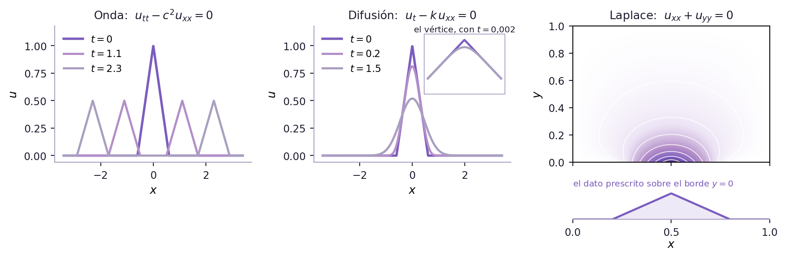
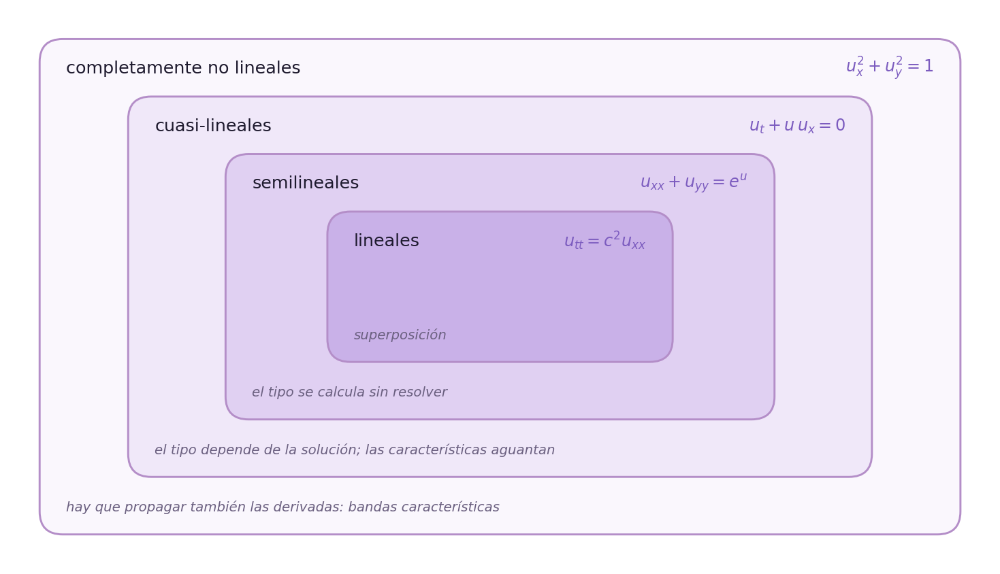
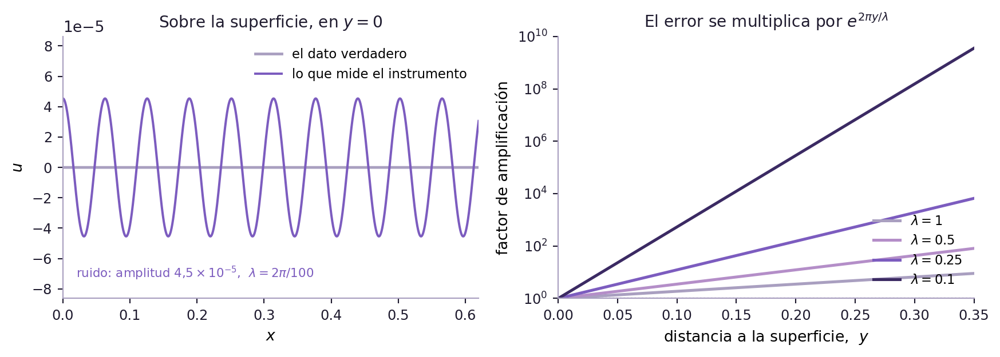
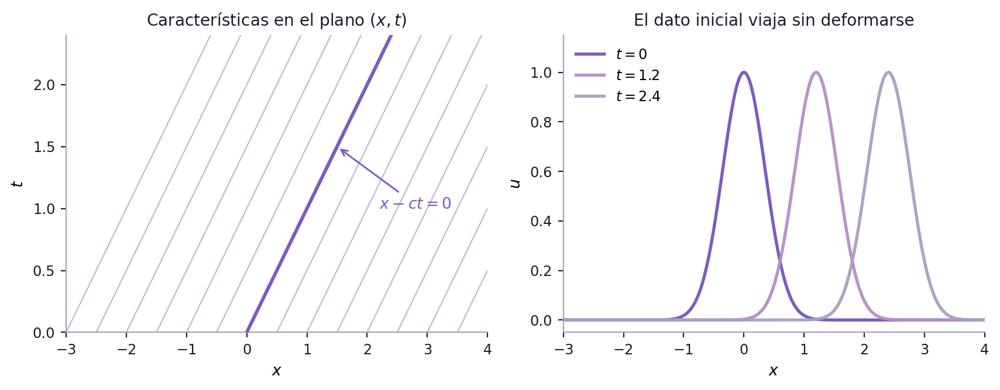
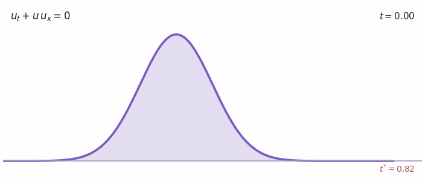
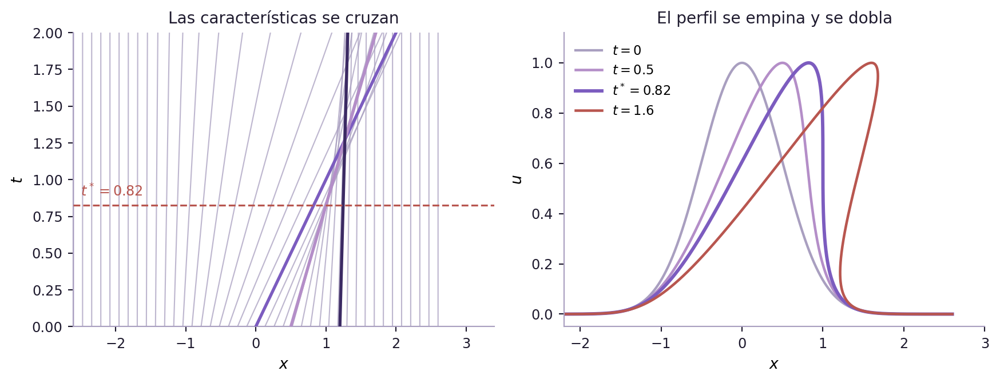
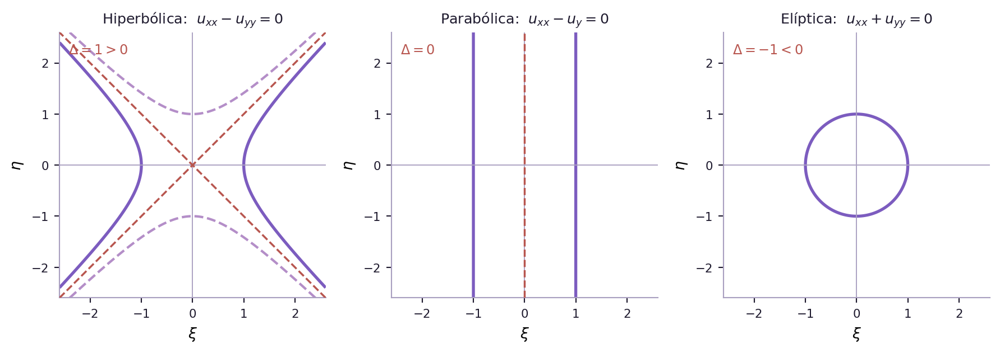
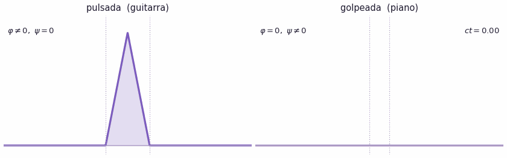
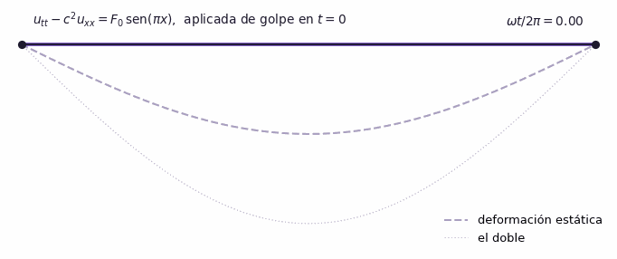
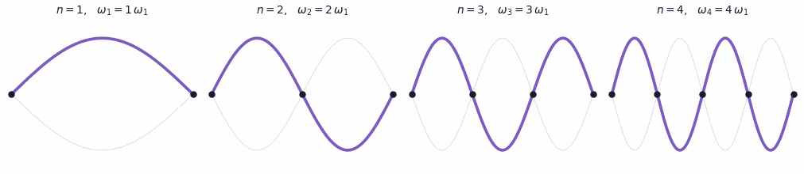

Para las seis primeras secciones alcanza con ecuaciones diferenciales ordinarias de primero y segundo orden, la regla de la cadena para funciones de varias variables, curvas de nivel y —para la sec-muchas-variables— diagonalización de matrices simétricas. Las tres últimas secciones son la continuación directa de los capítulos anteriores en varias variables: transformadas integrales retoma la sec-laplace y la sec-tfourier, función de Green retoma la sec-green, y separación de variables retoma la sec-sturm. Cada una avisa al empezar qué necesita.
8.1 De la partícula al campo
Casi todo lo que vimos hasta acá tenía la misma forma: una magnitud que depende de una variable y una ecuación que la relaciona con sus derivadas. La segunda ley de Newton para una partícula es de ese tipo. Hay una trayectoria \(x(t)\), y la ecuación dice cómo se curva.
Pero la mayor parte de la física no habla de partículas sino de campos: la temperatura en cada punto de una barra, la altura de una cuerda en cada punto y en cada instante, el potencial eléctrico en cada punto de una región, la función de onda de un electrón. Un campo es una función de varias variables, y las leyes que lo gobiernan son locales: no dicen qué hace el campo en todo el espacio de golpe, sino cómo lo que pasa en un punto está atado a lo que pasa en sus vecinos inmediatos un instante después.
«Cómo cambia acá respecto de sus vecinos» es exactamente una derivada parcial. Por eso el lenguaje natural de la física de campos son las ecuaciones en derivadas parciales, y por eso este capítulo abre la segunda mitad del libro: de acá en adelante todo va a ser, de una forma u otra, una EDP.
Grant Sanderson, 3Blue1Brown — «But what is a partial differential equation?». Veinte minutos sobre la ecuación del calor que valen por una clase entera. Está en inglés pero tiene subtítulos en español, y lo que hay que mirar son las animaciones: cómo un perfil de temperatura se aplana, y por qué la ecuación mira siempre a los dos vecinos de cada punto. Es la mejor introducción visual que conozco a lo que acabamos de decir con palabras.
8.1.1 Una ley de conservación, tres ecuaciones distintas
Vale la pena ver una sola vez cómo aparece una de estas ecuaciones, porque el mismo argumento produce tres de las que vamos a estudiar durante todo el capítulo.
Sea \(u(x,t)\) la densidad lineal de algo que se conserva —masa, carga, energía, cantidad de autos en una ruta— y sea \(q(x,t)\) el flujo: cuánto de esa cantidad atraviesa por segundo la posición \(x\), hacia la derecha. Que la cantidad se conserve significa que en cualquier tramo \([a,b]\) lo que hay adentro solo cambia por lo que entra por un extremo y sale por el otro:
Si \(u\) y \(q\) son suaves podemos meter la derivada temporal adentro de la integral, y como la igualdad vale para todo tramo \([a,b]\), los integrandos tienen que coincidir punto a punto:
Definición 8.1 (Ley de conservación) Una ley de conservación en una dimensión espacial es una ecuación de la forma eq-conservacion, donde \(u\) es la densidad de una magnitud conservada y \(q\) su flujo. Cuando el flujo es una función de la propia densidad, \(q = F(u)\), la ecuación se escribe \(u_t + F(u)_x = 0\) y se dice que \(F\) es la función de flujo.
eq-conservacion todavía no es una ecuación: tiene dos incógnitas, \(u\) y \(q\). Lo que la convierte en una ecuación es decir de qué manera el flujo depende del estado. Esa segunda relación no sale de la conservación sino de la física del material, y se la llama relación constitutiva. Miremos tres:
Uno. Lo que hay es simplemente arrastrado por una corriente de velocidad constante \(c\). Entonces por cada punto pasa por segundo lo que hay ahí, multiplicado por lo rápido que va: \(q = c\,u\). Reemplazando en eq-conservacion,
\[
u_t + c\,u_x = 0 ,
\]
la ecuación de transporte. Es la más simple de todas y es donde vamos a aprender el método más importante del capítulo.
Dos. No hay corriente, pero la sustancia se mueve espontáneamente de donde hay mucho hacia donde hay poco, tanto más rápido cuanto más pronunciada sea la diferencia. Eso es la ley de Fourier para el calor y la ley de Fick para una concentración: \(q = -k\,u_x\), con \(k>0\). El signo menos es toda la física —el flujo apunta hacia abajo de la pendiente—. Ahora eq-conservacion da
\[
u_t = k\,u_{xx} ,
\]
la ecuación de difusión, o del calor.
Tres. Lo que hay es arrastrado, pero la velocidad de arrastre no es constante: es la propia densidad, de modo que las regiones donde hay más avanzan más rápido. Entonces \(q = u^2/2\), porque \(\partial_x(u^2/2) = u\,u_x\), y queda
\[
u_t + u\,u_x = 0 ,
\]
la ecuación de Burgers sin viscosidad. Es la más inocente de las tres a la vista y la única que va a romperse sola: si las crestas viajan más rápido que los valles, tarde o temprano una cresta alcanza al valle que tiene adelante y la solución deja de ser una función. Volveremos sobre esto en la sec-bien-planteado y en la sec-casi-lineales.
TipLo que hay que llevarse de acá
Una misma ley de conservación, tres relaciones constitutivas distintas, tres ecuaciones con comportamientos irreconciliables: una transporta sin deformar, otra suaviza y desparrama, la tercera se rompe. La forma de la ecuación no lo grita, pero está todo escrito ahí. Aprender a leerlo es la primera mitad de este capítulo.
Un gas de partículas se mueve por un tubo con velocidad constante \(c\), pero además las partículas se desintegran a una tasa proporcional a cuántas hay. La densidad ya no se conserva: por cada unidad de longitud y de tiempo desaparecen \(\lambda u\) partículas. ¿Cuál es la ecuación?
\(u_t + c\,u_x = 0\)
\(u_t + c\,u_x = -\lambda u\)
\(u_t + c\,u_x = -\lambda u_x\)
\(u_t = k\,u_{xx} - \lambda u\)
El balance de eq-conservacion decía «lo que cambia adentro = lo que entra menos lo que sale». Si además hay un sumidero que se come \(\lambda u\) por unidad de longitud y de tiempo, el balance pasa a ser \[\frac{d}{dt}\int_a^b u\,dx = q(a,t) - q(b,t) - \int_a^b \lambda u\,dx,\] y el mismo argumento de antes deja \(u_t + q_x = -\lambda u\). Con \(q = cu\) queda la segunda opción. La tercera confunde un sumidero con un flujo, y la cuarta agrega una difusión que nadie pidió: no hay ninguna ley de Fick en el enunciado.
8.1.2 Las ecuaciones que vamos a encontrar
Antes de clasificar nada conviene tener a la vista el catálogo. Todas estas van a aparecer en este capítulo o en los tres siguientes.
Tabla 8.1: Las ecuaciones del capítulo. Todas menos las dos últimas son de segundo orden; todas menos Burgers son lineales.
Se parecen muchísimo. Las tres tienen una derivada segunda respecto de la variable espacial; las diferencias son qué se le pone al lado —una derivada segunda, una primera, otra segunda— y un signo. Y sin embargo describen tres mundos que no se tocan:
En la ecuación de onda, la información viaja a velocidad finita \(c\). Un pico con un quiebre sigue teniendo el quiebre para siempre. Si filmamos la solución y pasamos la película al revés, sigue siendo una solución.
En la ecuación de difusión, cualquier dato inicial se vuelve infinitamente derivable apenas \(t>0\): los quiebres se borran instantáneamente. Además la influencia es inmediata a cualquier distancia. Y la película al revés no es una solución: intentar reconstruir el pasado es un problema mal planteado, del que hablaremos en la sec-bien-planteado.
En la ecuación de Laplace no hay tiempo. No hay nada que evolucione. El valor en cada punto es el promedio de los valores a su alrededor, y por lo tanto depende de todo el borde a la vez.
Nada en el aspecto de las tres ecuaciones anuncia esa diferencia. Lo que la anuncia es un solo número, que se calcula en dos líneas, y aprender a calcularlo es lo primero que vamos a hacer con las ecuaciones de segundo orden.
Ver el código de la figura
import numpy as npimport matplotlib.pyplot as pltfrom matplotlib.colors import LinearSegmentedColormapVIOLETA, VIOLETA2, TINTA, GRIS ="#7c5cbf", "#b48ec8", "#1e1a2e", "#a99fc0"def sombrero(s, centro=0.0, ancho=0.6):return np.maximum(0.0, 1.0- np.abs(s - centro) / ancho)fig, axs = plt.subplots(1, 3, figsize=(9.6, 3.1))# ---------- 1. onda: d'Alembert, el quiebre sobrevive ----------x = np.linspace(-3.4, 3.4, 1400)for t, col, lw in [(0.0, VIOLETA, 2.1), (1.1, VIOLETA2, 1.9), (2.3, GRIS, 1.9)]: axs[0].plot(x, .5*(sombrero(x - t) + sombrero(x + t)), color=col, lw=lw, label=rf"$t={t:g}$")axs[0].set_title(r"Onda: $u_{tt}-c^2u_{xx}=0$", fontsize=10, color=TINTA)axs[0].set_xlabel("$x$"); axs[0].set_ylabel("$u$")axs[0].set_ylim(-.06, 1.18); axs[0].legend(frameon=False, fontsize=8.5, loc="upper left")# ---------- 2. difusion: el quiebre se borra ----------y = np.linspace(-9, 9, 3000)dy = y[1] - y[0]g = sombrero(y)k =0.05def difundir(malla, t): nucleo = np.exp(-(malla[:, None] - y[None, :])**2/ (4*k*t)) / np.sqrt(4*np.pi*k*t)return (nucleo * g[None, :]).sum(axis=1) * dyxd = np.linspace(-3.4, 3.4, 900)axs[1].plot(xd, sombrero(xd), color=VIOLETA, lw=2.1, label=r"$t=0$")for t, col in [(0.2, VIOLETA2), (1.5, GRIS)]: axs[1].plot(xd, difundir(xd, t), color=col, lw=1.9, label=rf"$t={t:g}$")axs[1].set_title(r"Difusión: $u_t-k\,u_{xx}=0$", fontsize=10, color=TINTA)axs[1].set_xlabel("$x$"); axs[1].set_ylabel("$u$")axs[1].set_ylim(-.06, 1.18); axs[1].legend(frameon=False, fontsize=8.5, loc="upper left")# la lupa: el vertice deja de tener punta de inmediatolupa = axs[1].inset_axes([0.56, 0.50, 0.41, 0.44])xz = np.linspace(-0.06, 0.06, 600)lupa.plot(xz, sombrero(xz), color=VIOLETA, lw=1.8)lupa.plot(xz, difundir(xz, 0.002), color=GRIS, lw=1.8)lupa.set_ylim(0.86, 1.015)lupa.set_title(r"el vértice, con $t=0{,}002$", fontsize=7.5, color=TINTA, pad=2)lupa.set_xticks([]); lupa.set_yticks([])for lado in lupa.spines.values(): lado.set_color(GRIS); lado.set_linewidth(.7)for ax in (axs[0], axs[1]): ax.spines[["top", "right"]].set_visible(False) ax.spines[["left", "bottom"]].set_color(GRIS) ax.tick_params(colors=TINTA, labelsize=9)# ---------- 3. Laplace: no hay tiempo ----------n = np.arange(1, 160)xs = np.linspace(0, 1, 260)ys = np.linspace(0, 1, 260)X, Y = np.meshgrid(xs, ys)sg = np.linspace(0, 1, 4000)dsg = sg[1] - sg[0]dato = sombrero(sg, centro=0.5, ancho=0.3)b = np.array([2* np.sum(dato * np.sin(m*np.pi*sg)) * dsg for m in n])U = np.zeros_like(X)for m, bm inzip(n, b): a1, a2 = m*np.pi*(1- Y), m*np.pi razon = np.exp(a1 - a2) * (1- np.exp(-2*a1)) / (1- np.exp(-2*a2)) U += bm * np.sin(m*np.pi*X) * razonpaleta = LinearSegmentedColormap.from_list("juli", ["#ffffff", "#ece4f5", VIOLETA2, VIOLETA, "#3b2a63"])axs[2].pcolormesh(X, Y, U, cmap=paleta, shading="auto", vmin=0, vmax=1)axs[2].contour(X, Y, U, levels=np.linspace(.08, .85, 7), colors="white", linewidths=.7, alpha=.85)axs[2].set_title(r"Laplace: $u_{xx}+u_{yy}=0$", fontsize=10, color=TINTA)axs[2].set_ylabel("$y$")axs[2].set_xlim(0, 1); axs[2].set_ylim(0, 1)axs[2].set_xticks([0, .5, 1]); axs[2].set_xticklabels([])axs[2].tick_params(colors=TINTA, labelsize=9)# el dato de borde va en una tira aparte, pegada abajo, para que no se confunda# con una curva dibujada adentro del dominiotira = axs[2].inset_axes([0, -0.42, 1, 0.22])tira.plot(xs, sombrero(xs, centro=0.5, ancho=0.3), color=VIOLETA, lw=1.8)tira.fill_between(xs, 0, sombrero(xs, centro=0.5, ancho=0.3), color=VIOLETA, alpha=.13)tira.set_xlim(0, 1); tira.set_ylim(0, 1.15)tira.set_yticks([]); tira.set_xticks([0, .5, 1])tira.tick_params(colors=TINTA, labelsize=9)tira.set_xlabel("$x$", labelpad=1)tira.set_title("el dato prescrito sobre el borde $y=0$", fontsize=7.6, color=VIOLETA, pad=3, loc="left")for lado in ["top", "right", "left"]: tira.spines[lado].set_visible(False)tira.spines["bottom"].set_color(GRIS)fig.tight_layout()fig.subplots_adjust(bottom=0.34)plt.show()

Figura 8.1: El mismo perfil —un pico con dos quiebres— bajo las tres ecuaciones modelo. La de onda lo parte en dos mitades que se van en sentidos opuestos, con los quiebres intactos para siempre. La de difusión los borra apenas arranca el tiempo (la lupa muestra el vértice con \(t\) mil veces más chico) y después desparrama el pico. La de Laplace ni siquiera tiene tiempo: el perfil, dibujado en la tira de abajo, es un dato prescrito sobre el borde inferior del cuadrado, y la solución —el color y las curvas de nivel— es el único equilibrio compatible con ese borde.
8.2 Lo que se rompe al pasar de una variable a varias
Una ecuación diferencial ordinaria relaciona una función de una variable con sus derivadas. Su solución general depende de un número finito de constantes: dos para una ecuación de segundo orden, \(n\) para una de orden \(n\). Fijar esas constantes es fijar dos o \(n\) números, y para eso alcanzan dos o \(n\) condiciones.
Con las derivadas parciales eso se rompe de entrada. Consideremos la ecuación más simple que se pueda escribir en dos variables:
Nos dice que \(u\) no cambia cuando nos movemos en la dirección \(y\). Su solución general es
\[
u(x,y) = f(x),
\]
con \(f\)cualquier función derivable de una variable. La solución general no depende de constantes: depende de una función arbitraria. Y una función arbitraria no se fija con dos números.
No es un accidente de esa ecuación en particular. Tomemos
Leída como «\(\partial_y(u_x) = 0\)», dice que \(u_x\) no depende de \(y\), o sea \(u_x = p(x)\); integrando en \(x\) queda
\[
u(x,y) = f(x) + g(y),
\]
con \(f\) y \(g\) arbitrarias. Una ecuación de segundo orden, dos funciones arbitrarias. La regla empírica —que no es un teorema, pero orienta— es que una EDP de orden \(n\) arrastra \(n\) funciones arbitrarias, así como una EDO de orden \(n\) arrastra \(n\) constantes.
Vale la pena guardar eq-trivial2, porque no es un ejemplo de juguete: en la sec-formas-canonicas vamos a ver que toda ecuación hiperbólica se convierte en ella con un cambio de variables, y de ahí va a salir la solución \(u = f(x+ct) + g(x-ct)\) de la ecuación de onda —dos funciones arbitrarias, exactamente las que anticipa la regla—.
Este hecho, que parece un detalle técnico, es el que organiza todo el resto del capítulo. Si la indeterminación de una EDP es funcional, los datos que la resuelven también tienen que ser funcionales: valores de \(u\) sobre una curva, no en dos puntos. De ahí que en EDP se hable de condiciones de contorno e iniciales, y que la pregunta de cuáles alcanzan sea seria y no trivial.
TipLa versión corta
En EDO se busca una curva y alcanzan las condiciones puntuales. En EDP se busca una superficie y hacen falta datos sobre curvas enteras. Casi todas las dificultades del capítulo salen de ahí.
¿Cuál es la solución general de \(\;u_{xx} = 0\;\) para \(u = u(x,y)\)?
\(u(x,y) = ax + b\), con \(a\) y \(b\) constantes
\(u(x,y) = f(y)\,x + g(y)\), con \(f\) y \(g\) arbitrarias
\(u(x,y) = f(x) + g(y)\), con \(f\) y \(g\) arbitrarias
\(u(x,y) = f(y)\), con \(f\) arbitraria
Integrar en \(x\) dos veces sí se puede, pero las «constantes» de integración son constantes respecto de \(x\), no respecto de todo. Cada una puede depender libremente de \(y\): \(u_x = f(y)\) y después \(u = f(y)\,x + g(y)\). Es una ecuación de segundo orden y aparecen dos funciones arbitrarias, como anticipa la regla empírica. La primera opción es la respuesta que daríamos si \(u\) dependiera solo de \(x\), y es el error típico: en EDP las constantes de integración son funciones de las otras variables.
8.3 Qué es exactamente una EDP
Antes de seguir, fijemos el vocabulario y la notación. Todo lo que sigue en el capítulo está escrito en estos términos.
Definición 8.2 (Ecuación en derivadas parciales) Sea \(u\) una función incógnita de \(n\) variables \(x_1,\dots,x_n\). Una ecuación en derivadas parciales es una relación de la forma
Su orden es el mayor \(N\) tal que en la relación aparece efectivamente una derivada de orden \(N\).
Para no escribir cadenas de símbolos cada vez, adoptamos dos abreviaturas de uso universal. La primera es poner las variables de derivación como subíndices:
La segunda es la notación multiíndice, que sirve para hablar de «todas las derivadas de orden \(\alpha\)» sin listarlas. Dado \(\alpha = (\alpha_1,\dots,\alpha_n)\) con \(\alpha_i \ge 0\) enteros, se escribe \(|\alpha| = \alpha_1 + \dots + \alpha_n\) y
Así, \(D^{(2,0)}u = u_{xx}\), \(D^{(1,1)}u = u_{xy}\) y \(D^{(0,2)}u = u_{yy}\) son las tres derivadas de orden \(2\) en dos variables, y la suma \(\sum_{|\alpha|=2} a_\alpha D^\alpha u\) las recorre todas de una.
Definición 8.3 (Solución clásica) Una solución clásica —o fuerte— de una EDP de orden \(N\) en un dominio \(D\) es una función \(u\) que es \(N\) veces continuamente derivable en \(D\) y que satisface la ecuación en todos los puntos de \(D\).
El calificativo «clásica» está avisando que hay otras. Ya vimos con la ecuación de Burgers que hay problemas físicos perfectamente razonables cuya solución deja de ser derivable, y a veces deja de ser continua. Esas soluciones generalizadas o débiles son el tema de la sec-bien-planteado, y son las que le dan sentido físico a las ondas de choque.
¿De qué orden es la ecuación de la viga de la Tabla tbl-catalogo, \[\rho\,w_{tt} + \gamma\,w_t + EI\,w_{xxxx} = f(x,t)\;?\] Escribí solo el número.
El orden es el de la derivada más alta que aparece, sin importar respecto de qué variable ni cuántas veces aparezcan las otras. Acá hay derivadas segundas en \(t\) y una derivada cuarta en \(x\), así que la ecuación es de orden \(4\). Es la única de la tabla que no es de segundo orden, y por eso la vamos a tratar aparte, en la sec-separacion.
8.4 Las tres preguntas del capítulo
Todo lo que sigue son respuestas a tres preguntas, siempre en este orden.
1. ¿De qué tipo es esta ecuación? Hay dos clasificaciones y son independientes entre sí. Una mira cuán lineal es la ecuación —lineal, semilineal, cuasi-lineal, completamente no lineal— y decide qué métodos están permitidos (sec-linealidad). La otra mira solo los términos de orden más alto y decide cómo se comportan las soluciones: hiperbólica, parabólica o elíptica (sec-clasificacion, sec-muchas-variables). Una misma ecuación tiene un tipo en cada clasificación.
2. ¿Qué datos hacen falta, y alcanzan? Una ecuación sola no determina nada. Hay que agregarle condiciones, y no cualquier juego de condiciones sirve: algunos dejan infinitas soluciones, otros ninguna, y otros —los peores, porque no se notan— dejan exactamente una solución que no se parece en nada a la del problema de al lado. Eso es el problema bien planteado (sec-bien-planteado).
3. ¿Cómo se construye la solución? Cuatro métodos, y cada uno es una sección:
Ninguno sirve siempre. Características vive de que existan curvas reales sobre las cuales la ecuación se vuelve ordinaria, y por eso funciona de maravilla en las hiperbólicas y no existe en las elípticas. Separación de variables necesita que el dominio tenga la simetría adecuada. Green necesita linealidad. Elegir bien es la mitad del trabajo, y la clasificación de la pregunta 1 es justamente lo que permite elegir sin probar a ciegas.
8.5 Cuán lineal es una ecuación
Vamos con la primera de las dos clasificaciones. Esta mira cómo entra la incógnita en la ecuación y decide qué métodos están permitidos. La otra, que viene en la sec-clasificacion, mira solamente los términos de orden más alto y decide cómo se comportan las soluciones. Son independientes: toda ecuación tiene un tipo en cada una, y decir «hiperbólica» no dice nada sobre si es lineal, ni al revés.
Las dos, eso sí, giran alrededor del mismo objeto.
Definición 8.4 (Parte principal) Sea una EDP de orden \(N\) escrita como
\[
\sum_{|\alpha| = N} a_\alpha\, D^\alpha u \;+\; (\text{términos con derivadas de orden} < N) = 0 .
\]
Su parte principal es el operador formado solo por los términos de orden exactamente \(N\):
ImportantePor qué la parte principal se lleva toda la atención
Porque es la única que importa para casi todo. El tipo de la ecuación —hiperbólica, parabólica o elíptica—, las curvas características, la velocidad a la que viaja la información y si las discontinuidades sobreviven o se borran: todo eso lo decide \(L_P\) sola. Los términos de orden menor cambian la solución, por supuesto, pero no cambian el tipo. Una ecuación de onda con rozamiento sigue siendo hiperbólica.
Con eso en mente, la escala de linealidad que sigue se lee de una sola manera: es una escala de cuánto contamina la incógnita a su propia parte principal.
8.5.1 Lineales
Definición 8.5 (Ecuación lineal) Una EDP de orden \(N\) es lineal si se puede escribir como
\[
\sum_{|\alpha| \le N} a_\alpha(x)\, D^\alpha u = f(x),
\tag{8.7}\]
es decir, si es lineal en \(u\) y en todas sus derivadas, con coeficientes que dependen únicamente de las variables independientes. Escribiendo \(L[u] = \sum_{|\alpha|\le N} a_\alpha(x)D^\alpha u\), la ecuación es \(L[u] = f\), y \(L\) es un operador lineal: \(L[\lambda u + \mu v] = \lambda L[u] + \mu L[v]\).
Si \(f \equiv 0\) la ecuación se dice homogénea; si no, inhomogénea o con término independiente.
En dos variables y orden dos, eq-lineal se ve así:
con todos los coeficientes funciones de \((x,y)\) solamente. De la Tabla tbl-catalogo son lineales todas menos Burgers: calor, onda, Laplace, Poisson, Helmholtz, Schrödinger —que es lineal aunque sea compleja— y la viga.
TipPor qué nos importa: superposición
Si \(L\) es lineal y \(L[u_1] = L[u_2] = 0\), entonces \(L[\lambda u_1 + \mu u_2] = 0\). Suena modesto y es la propiedad más rentable de todo el libro. Todos los métodos de la primera parte son superposición disfrazada:
las series de Fourier suman infinitas soluciones elementales (sec-fourier);
separación de variables fabrica esas soluciones elementales y después las suma (sec-separacion);
la función de Green resuelve una vez para una fuente puntual y después integra, que es sumar infinitas soluciones con pesos (sec-green, sec-green-varias);
las transformadas integrales descomponen el dato en modos, resuelven modo por modo y vuelven a sumar (sec-tfourier, sec-transformadas).
Y para las inhomogéneas, \(u = u_h + u_p\): solución general de la homogénea más una particular, exactamente como en EDO.
Fuera de las lineales nada de esto funciona. Es la razón de que casi todo lo que se resuelve explícitamente en un curso sea lineal, y de que el salto a lo no lineal sea tan brusco.
Dos pulsos viajan por una misma cuerda en sentidos opuestos. Se cruzan, y después siguen de largo cada uno como si nada hubiera pasado. ¿De qué propiedad de la ecuación de onda depende eso?
De que sea de segundo orden
De que sea lineal
De que sea hiperbólica
De que la cuerda sea perfectamente elástica
De la linealidad. Si \(u_1\) y \(u_2\) son soluciones, \(u_1+u_2\) también lo es, así que mientras los pulsos se superponen la altura de la cuerda es simplemente la suma de las dos alturas, y cuando se separan cada uno sigue con la forma que traía. No se chocan: se suman.
Que sea hiperbólica explica otra cosa —por qué viajan a velocidad finita y sin deformarse— pero no por qué se atraviesan sin enterarse el uno del otro. Y el orden no tiene nada que ver.
Es un experimento que se puede hacer con una soga en el piso, y vale la pena hacerlo. Si la amplitud es grande la cosa cambia: la tensión deja de ser constante, la ecuación se vuelve no lineal, y los pulsos empiezan a interactuar de verdad. Eso es lo que pasa con las olas grandes en el mar, que sí se afectan entre sí.
8.5.2 Semilineales
Definición 8.6 (Ecuación semilineal) Una EDP de orden \(N\) es semilineal si su parte principal es lineal con coeficientes que dependen solo de \(x\), y toda la no linealidad está confinada a derivadas de orden estrictamente menor que \(N\):
con \(F\) tan fea como se quiera. Esta es exactamente la ecuación que vamos a clasificar en la sec-clasificacion, y ahora se entiende por qué se la elige a ella y no a la lineal: no hace falta menos que esto, y no se puede pedir más.
Ejemplo 8.1 (Tres semilineales de verdad)
\(u_{xx} + u_{yy} = e^{u}\), la ecuación de Liouville, que aparece en geometría de superficies y en física de plasmas.
\(u_t = k\,u_{xx} + r\,u(1-u)\), la ecuación de Fisher–KPP: difusión más crecimiento logístico. Modela cómo se expande una población o un gen ventajoso.
\(u_{tt} - u_{xx} = -\sin u\), la ecuación de sine–Gordon, que describe una fila de péndulos acoplados y tiene soluciones tipo solitón.
En las tres, la parte principal es la de siempre —Laplace, calor, onda— y la no linealidad está toda en el término sin derivadas.
TipPor qué nos importa: el tipo es una propiedad del punto
Se perdió la superposición. Pero se conservó algo casi tan valioso: como los coeficientes de la parte principal no dependen de \(u\), el tipo de la ecuación se puede calcular sin resolver nada. Decir «esta ecuación es elíptica en la región \(x>0\)» es una afirmación sobre la ecuación y sobre el punto, no sobre ninguna solución en particular.
Eso es lo que va a permitir, en la sec-clasificacion, mirar \(A\), \(B\) y \(C\), calcular un discriminante y saber de antemano si el problema se parece a una onda, a una difusión o a un equilibrio. Con las cuasi-lineales ese privilegio se termina.
Y esta: \[x^2\,u_{xx} + \operatorname{sen}(y)\,u_{yy} + u^3 = 0.\]
Semilineal
Lineal
Cuasi-lineal pero no semilineal
Completamente no lineal
Es no lineal —\(u^3\) lo garantiza— pero eso no es lo que se pregunta. La parte principal es \(x^2u_{xx} + \operatorname{sen}(y)\,u_{yy}\): lineal, y con coeficientes que dependen solo de \(x\) e \(y\). Toda la no linealidad está en un término sin derivadas, o sea de orden \(0 < 2\). Semilineal.
Ojo con la tercera opción: la ecuación sí es cuasi-lineal, porque toda semilineal lo es —las inclusiones de la Figura fig-linealidad son inclusiones—. Lo que es falso es el «pero no semilineal». Cuando se pide clasificar, se pide la clase más chica a la que pertenece.
8.5.3 Cuasi-lineales
Definición 8.7 (Ecuación cuasi-lineal) Una EDP de orden \(N\) es cuasi-lineal si es lineal en las derivadas de orden \(N\) —aparecen a la primera potencia y no multiplicadas entre sí— pero los coeficientes de esas derivadas pueden depender de \(u\) y de sus derivadas de orden menor:
\(u_t + u\,u_x = 0\), la ecuación de Burgers sin viscosidad, que ya salió de la
El coeficiente de \(u_x\) es la propia \(u\).
\((1+u_y^2)\,u_{xx} - 2u_xu_y\,u_{xy} + (1+u_x^2)\,u_{yy} = 0\), la ecuación de las superficies mínimas: la que satisface la forma de una película de jabón sostenida por un alambre.
\(u_t + \big(u\,v_{\max}(1-u/u_{\max})\big)_x = 0\), el modelo de tráfico de Lighthill–Whitham: \(u\) es la densidad de autos y la velocidad de cada auto baja a medida que la ruta se llena. Desarrollando la derivada queda \(u_t + q'(u)\,u_x = 0\), una ley de conservación como las de la 1, con la velocidad de propagación dependiendo de la densidad. Los embotellamientos que aparecen sin causa aparente son sus choques.
AdvertenciaMirá el orden antes que la apariencia
La ecuación de Burgers viscosa, \(u_t + u\,u_x = \nu\,u_{xx}\), parece más no lineal que la de Burgers a secas, porque tiene un término más. Y sin embargo es semilineal: al agregar \(\nu u_{xx}\) el orden pasó a ser \(2\), así que la parte principal es ahora solo \(\nu u_{xx}\) —con coeficiente constante— y el término \(u\,u_x\), que es el que rompe la linealidad, quedó relegado a orden \(1\).
Moraleja: agregar un término de orden más alto puede bajar una ecuación en la escala de linealidad. Siempre hay que identificar primero el orden, después la parte principal, y recién ahí clasificar.
TipPor qué nos importa: el tipo pasa a depender de la solución
Dos consecuencias, una mala y una buena.
La mala. Los coeficientes de la parte principal ahora dependen de \(u\), así que el discriminante también. La misma ecuación puede ser elíptica donde la solución hace una cosa e hiperbólica donde hace otra, y no se sabe cuál es cuál hasta haber resuelto —o al menos estimado— la solución. El Ejemplo exm-transonico muestra el caso clásico.
La buena. El método de las características sobrevive. Sigue habiendo, en cada punto, una dirección privilegiada a lo largo de la cual la ecuación se vuelve ordinaria, y sigue alcanzando con seguirla. Es prácticamente lo único que sobrevive del arsenal, y por eso la sec-casi-lineales le dedica una sección entera a las cuasi-lineales de primer orden: es donde todavía se puede hacer algo explícito sin linealidad.
Y es acá donde aparecen los choques. Si las características se cruzan —cosa que pueden hacer, porque su dirección depende de la solución que transportan— la solución deja de ser una función, y hay que ampliar qué se entiende por solución. De eso trata la sec-bien-planteado.
Ejemplo 8.3 (El tipo que cambia según la solución: flujo transónico) El potencial de velocidades \(\varphi\) de un flujo estacionario, irrotacional y compresible en dos dimensiones satisface
donde \(c\) es la velocidad local del sonido. Es cuasi-lineal: las derivadas segundas aparecen a la primera potencia, pero sus coeficientes dependen de las derivadas primeras de la incógnita.
Calculemos el discriminante con la convención de eq-semilineal-2var, en la que el coeficiente del término cruzado es \(2B\). Acá \(2B = -2\varphi_x\varphi_y/c^2\), o sea \(B = -\varphi_x\varphi_y/c^2\), y
donde \(M = |\nabla\varphi|/c\) es el número de Mach: cuántas veces la velocidad del sonido va el fluido en ese punto.
El resultado es imposible de mejorar. Donde el flujo es subsónico (\(M<1\)) la ecuación es elíptica; donde es supersónico (\(M>1\)) es hiperbólica; y la línea sónica \(M=1\) es donde se vuelve parabólica. Que el tipo dependa de la solución no es un tecnicismo: es la física del problema, y es la razón de que un ala a velocidad transónica sea difícil de calcular. Compare esto con la ecuación de Tricomi del Ejemplo exm-tricomi, que es el modelo lineal más simple con exactamente este comportamiento —y que se inventó justamente para estudiarlo—.
Russell Croman — formación de una onda de choque en vuelo transónico. Se ve la línea sónica sobre el extradós del ala: adelante de ella el flujo es subsónico y la ecuación es elíptica; detrás es supersónico e hiperbólica; y la discontinuidad que las separa es la onda de choque. Es la tabla de tipos y datos de este capítulo, hecha aire.
Una aclaración: \(c\) no es realmente una constante dada, porque la velocidad del sonido local depende de \(|\nabla\varphi|\) a través de la ecuación de Bernoulli. Tratarla como dada no cambia nada de la conclusión sobre el tipo, pero conviene saber que es una simplificación.
Clasificá según su linealidad: \[u_t = \big(1 + u_x^2\big)\,u_{xx}.\]
Lineal
Semilineal
Cuasi-lineal
Completamente no lineal
El orden es \(2\), así que la parte principal la forman los términos con derivadas segundas: acá, \(\big(1+u_x^2\big)u_{xx}\). Y \(u_{xx}\) aparece a la primera potencia: es cuasi-lineal.
Lo que la saca de semilineal es que el coeficiente \(\big(1+u_x^2\big)\) depende de \(u_x\), una derivada de orden menor. Que ese coeficiente tenga un cuadrado adentro no la vuelve completamente no lineal: el cuadrado está sobre una derivada de orden \(1\), no sobre una de orden \(2\). La pregunta a hacerse siempre es «¿cómo entra la derivada de orden más alto?».
¿De qué orden es la ecuación de Korteweg–de Vries, \[u_t + \alpha\,u\,u_x + \beta\,u_{xxx} = 0\;?\] Escribí solo el número. (Es la ecuación de las ondas solitarias en un canal poco profundo: la primera vez que se observó un solitón, en 1834, fue en el canal de Union en Escocia.)
Orden \(3\), por \(u_{xxx}\). Y de paso: es cuasi-lineal, no completamente no lineal. La parte principal es \(\beta u_{xxx}\), que tiene coeficiente constante; el término \(\alpha u u_x\), que es el que rompe la linealidad, es de orden \(1 < 3\). Con el mismo criterio del segundo ejercicio de esta sección, eso la vuelve incluso semilineal.
8.5.4 Completamente no lineales
Definición 8.8 (Ecuación completamente no lineal) Una EDP es completamente no lineal si depende de las derivadas de orden \(N\) de manera no lineal: alguna aparece elevada a una potencia, dentro de una función, o multiplicada por otra derivada de orden \(N\).
Ejemplo 8.4 (Tres completamente no lineales)
\(u_x^2 + u_y^2 = 1\), la ecuación eikonal. Es la ecuación de los frentes de onda en óptica geométrica: sus soluciones son las funciones cuyo gradiente tiene módulo uno, es decir, las distancias a una curva. Los rayos de luz son sus características.
\(u_t + H(\nabla u,\, x,\, t) = 0\), la ecuación de Hamilton–Jacobi, que reformula toda la mecánica clásica y cuya versión ondulatoria es el puente histórico hacia la mecánica cuántica.
\(u_{xx}u_{yy} - u_{xy}^2 = f(x,y)\), la ecuación de Monge–Ampère, que aparece en geometría —prescribir la curvatura de una superficie— y en transporte óptimo.
TipPor qué nos importa: hace falta más que una curva
Todavía hay método de características, pero con una vuelta de tuerca. Ya no alcanza con seguir una curva y arrastrar el valor de \(u\): hay que arrastrar además las derivadas primeras, porque la ecuación las mezcla. El objeto que se propaga se llama banda característica y es una curva con un plano tangente pegado en cada punto.
No lo vamos a desarrollar acá —González lo menciona al pasar y remite a la bibliografía—, pero vale saber que la eikonal y Hamilton–Jacobi se resuelven así, y que en ambos casos las características son objetos con nombre propio: los rayos de luz en una, las trayectorias del sistema mecánico en la otra.
Ahora esta, que es de primer orden: \[u_t + u_x^2 = 0.\]
Cuasi-lineal, porque es lineal en \(u_t\)
Semilineal, porque el término no lineal no tiene derivadas de orden máximo
Completamente no lineal
Lineal, después de un cambio de variables
Acá está la trampa que engancha a casi todos. La ecuación es de orden \(1\), así que la parte principal la forman todas las derivadas de orden \(1\): tanto \(u_t\) como \(u_x\). Y \(u_x^2\) no es lineal en ellas. Completamente no lineal.
La primera opción falla porque mira solo una de las dos derivadas. La segunda falla porque supone que \(u_x\) es «de orden menor», y no lo es: es del mismo orden que \(u_t\). Comparala con \(u_t + u\,u_x = 0\), que sí es cuasi-lineal: ahí el factor que multiplica a \(u_x\) es \(u\), de orden \(0\).
Esta ecuación, de hecho, es una Hamilton–Jacobi con \(H(p) = p^2\).
8.5.5 El panorama completo
Las cuatro clases están encajadas una dentro de otra, y las inclusiones son estrictas:
import numpy as npimport matplotlib.pyplot as pltfrom matplotlib.patches import FancyBboxPatchVIOLETA, VIOLETA2, TINTA, GRIS ="#7c5cbf", "#b48ec8", "#1e1a2e", "#a99fc0"fig, ax = plt.subplots(figsize=(8.6, 4.5))anillos = [ (10.4, 5.6, "#faf7fd", "completamente no lineales", r"$u_x^2+u_y^2=1$","hay que propagar también las derivadas: bandas características"), (8.4, 4.3, "#f0e8f9", "cuasi-lineales", r"$u_t+u\,u_x=0$","el tipo depende de la solución; las características aguantan"), (6.2, 3.0, "#e0d0f2", "semilineales", r"$u_{xx}+u_{yy}=e^{u}$","el tipo se calcula sin resolver"), (3.9, 1.7, "#c9b1e8", "lineales", r"$u_{tt}=c^2u_{xx}$","superposición"),]for w, h, color, nombre, ecu, nota in anillos: ax.add_patch(FancyBboxPatch((-w/2, -h/2), w, h, boxstyle="round,pad=0,rounding_size=0.26", linewidth=1.1, edgecolor=VIOLETA2, facecolor=color, zorder=1)) ax.text(-w/2+0.30, h/2-0.33, nombre, fontsize=9.5, color=TINTA, va="center", ha="left", zorder=3) ax.text(w/2-0.30, h/2-0.33, ecu, fontsize=9, color=VIOLETA, va="center", ha="right", zorder=3) ax.text(-w/2+0.30, -h/2+0.31, nota, fontsize=7.4, color="#6b6080", va="center", ha="left", style="italic", zorder=3)ax.set_xlim(-5.5, 5.5)ax.set_ylim(-3.1, 3.1)ax.set_aspect("equal")ax.axis("off")fig.tight_layout()plt.show()

Figura 8.2: Las cuatro clases, encajadas. Cada anillo agrega una forma de que la incógnita contamine su propia parte principal, y cada paso hacia afuera cuesta un método. Adentro de todo vale la superposición y con ella todo el arsenal del libro; en el segundo anillo el tipo de la ecuación todavía se calcula sin resolverla; en el tercero ya depende de la solución, pero las características aguantan; afuera hace falta propagar también las derivadas.
Y lo que se gana y se pierde en cada paso:
Tabla 8.3: Qué sobrevive en cada clase. La columna que importa es la primera: es la que separa el libro en dos mitades.
Superposición
El tipo se calcula…
Características
Ejemplo
Lineal
sí
sin resolver
sí
\(u_{tt}=c^2u_{xx}\)
Semilineal
no
sin resolver
sí
\(u_{xx}+u_{yy}=e^u\)
Cuasi-lineal
no
solo con la solución
sí
\(u_t+u\,u_x=0\)
Completamente no lineal
no
solo con la solución
con bandas
\(u_x^2+u_y^2=1\)
AdvertenciaCuidado con los nombres: cada libro los usa distinto
Esto genera más confusión que cualquier otra cosa del capítulo, así que conviene tenerlo anotado. Nosotros seguimos la convención de González, que es la de la cátedra.
Lo que acá llamamos…
González
Zachmanoglou (inglés)
Dallos
lineal
lineal
linear
lineal
semilineal
semilineal
semi-linear
«casi lineal» (solo primer orden)
cuasi-lineal
casi–lineal
quasi-linear
cuasilineal
completamente no lineal
completamente no lineal
fully nonlinear
no lineal
Los dos choques a tener presentes: González escribe «casi–lineal» donde nosotros y casi todo el mundo decimos cuasi-lineal; y Dallos usa «casi lineal» para otra cosa —para \(a(x,y)u_x + b(x,y)u_y = c(x,y,u)\), que es una semilineal de primer orden—. Cuando leas «casi lineal» en un texto, fijate primero de qué libro salió.
Hay además libros —Dallos entre ellos— que escriben la ecuación de segundo orden con \(B\,u_{xy}\) y discriminante \(B^2-4AC\), mientras que González escribe \(2B\,u_{xy}\) y discriminante \(B^2-AC\). Las dos dan el mismo signo y por lo tanto el mismo tipo, pero no el mismo número. Volvemos sobre esto en la sec-clasificacion.
Dos ejercicios largos
Los ejercicios cortos de esta sección están repartidos por el texto. Estos dos son más largos y conviene hacerlos con lápiz y papel.
Ejercicio 8.1 Para cada una: orden, clase de linealidad (la más chica que la contenga) y, si es lineal, si es homogénea.
\(u_{xx} + 2u_{xy} + u_{yy} = 0\)
\(u\,u_{xx} + u_{yy} = 0\)
\(u_{xx} + u_{yy} = \operatorname{sen}(xy)\)
\(u_t + u_x = u^2\)
\(u_x u_{xx} + u_{yy} = u_y\)
\(\big(u_{xx}\big)^2 + u_{yy} = 0\)
\(y\,u_{xx} - x\,u_{yy} + u_x = 0\)
\(u_t = \big(D(u)\,u_x\big)_x\), con \(D\) una función dada y derivable
Orden 2, lineal, homogénea. Coeficientes constantes.
Orden 2, cuasi-lineal. El coeficiente de \(u_{xx}\) es \(u\), que es de orden \(0 < 2\), y \(u_{xx}\) aparece a la primera potencia.
Orden 2, lineal, inhomogénea. Que el término independiente sea una función complicada de \(x\) e \(y\) no afecta en nada: no involucra a \(u\).
Orden 1, semilineal. La parte principal es \(u_t + u_x\), con coeficientes constantes; el \(u^2\) es de orden \(0\).
Orden 2, cuasi-lineal. El coeficiente de \(u_{xx}\) es \(u_x\), de orden \(1 < 2\).
Orden 2, completamente no lineal. \(u_{xx}\) está elevada al cuadrado, y es de orden máximo.
Orden 2, lineal, homogénea. Coeficientes variables, pero solo de \(x\) e \(y\). (Compará con el Ejemplo exm-tricomi: esta también cambia de tipo según la región, y sigue siendo lineal. El tipo y la linealidad son cosas distintas.)
Orden 2, cuasi-lineal. Conviene desarrollar antes de decidir: \(\big(D(u)u_x\big)_x = D(u)\,u_{xx} + D'(u)\,u_x^2\). La parte principal es \(D(u)u_{xx}\), con coeficiente que depende de \(u\). Es la ecuación del calor con conductividad que depende de la temperatura, y es el ejemplo más común de difusión no lineal.
Orden 2, semilineal. Parte principal \(u_{tt}-u_{xx}\), de coeficientes constantes; toda la no linealidad en \(u^3-u\). Es una ecuación de onda no lineal muy estudiada, pariente de sine–Gordon.
Orden 1, completamente no lineal. Es la eikonal con el lado derecho cambiado. Igual que en el segundo ejercicio interactivo: \(u_x\) y \(u_y\) son de orden máximo, y aparecen al cuadrado.
Ejercicio 8.2 La ecuación de las superficies mínimas del Ejemplo exm-cuasilineales es cuasi-lineal, así que en principio su tipo podría depender de la solución. Calculá su discriminante \(\Delta = B^2 - AC\) —cuidado con el factor \(2\) en el término cruzado— y mostrá que es siempre negativo, sea cual sea la solución. ¿Qué significa físicamente que una película de jabón satisfaga una ecuación elíptica y no una hiperbólica?
TipSolución
Con la convención de eq-general, el término cruzado es \(2B\,u_{xy}\), así que \[A = 1+u_y^2, \qquad 2B = -2u_xu_y \ \Rightarrow\ B = -u_xu_y, \qquad C = 1+u_x^2 .\] Entonces \[
\Delta = B^2 - AC = u_x^2u_y^2 - \big(1+u_y^2\big)\big(1+u_x^2\big)
= u_x^2u_y^2 - 1 - u_x^2 - u_y^2 - u_x^2u_y^2 = -\big(1 + u_x^2 + u_y^2\big),
\] que es estrictamente negativo pase lo que pase, porque es menos uno menos dos cuadrados. La ecuación es elíptica para cualquier solución. Es un caso interesante de cuasi-lineal en el que el tipo, aunque en principio podría depender de la solución, resulta no depender.
Lo físico. Que sea elíptica quiere decir que no hay nada que se propague. Y es lo correcto: una película de jabón es un problema de equilibrio, no de evolución. Si movés un punto del alambre, toda la película se reacomoda a la vez; no sale una onda desde ahí que tarde un rato en llegar al otro extremo. La forma en cada punto depende del alambre entero.
Si en cambio fuera hiperbólica, existirían direcciones privilegiadas sobre la película por las que viajaría información, y una deformación del alambre afectaría solo a la región que esas direcciones alcanzan. Eso es lo que pasa en una membrana de tambor vibrando —que sí es hiperbólica— y no en una película de jabón quieta.
Ejercicio 8.3 En el Ejemplo exm-transonico verificá la cuenta del discriminante paso a paso, y después respondé: si un ala se mueve a \(M = 0{,}85\) pero en el extremo superior del perfil el aire se acelera hasta \(M = 1{,}1\), ¿qué tipo de ecuación gobierna cada región? ¿Por qué esto vuelve al problema difícil de resolver numéricamente, si cada tipo por separado se sabe tratar?
TipSolución
La cuenta del discriminante está hecha en el Ejemplo exm-transonico; lo que hay que verificar es que los términos \(\varphi_x^2\varphi_y^2/c^4\) se cancelan al desarrollar el producto, y que lo que queda es \((\varphi_x^2+\varphi_y^2)/c^2 - 1\), que es \(M^2-1\) por definición de número de Mach.
Por qué eso es un problema serio. Los dos tipos piden cosas incompatibles, y las piden sobre el mismo dominio y al mismo tiempo:
En la región elíptica el valor en cada punto depende de toda la frontera a la vez (Tabla tbl-datos). Numéricamente eso significa resolver un sistema global: no se puede avanzar de a poco, hay que resolver todo junto.
En la región hiperbólica la información viaja por características a velocidad finita, y el método natural es avanzar paso a paso siguiéndolas.
Y hay algo peor: la frontera entre las dos regiones no se conoce de antemano. La línea sónica \(M=1\) es donde \(\Delta\) cambia de signo, pero \(M\) depende de la solución, así que no se sabe dónde poner la frontera hasta haber resuelto el problema, y no se sabe cómo resolverlo hasta saber dónde está la frontera. Encima aparecen ondas de choque, que son las soluciones débiles de la sec-generalizadas.
Esa es la razón de que el régimen transónico —el de un avión de línea en crucero, casualmente— haya sido durante décadas el más difícil de la aerodinámica computacional, y de que la ecuación de Tricomi del Ejemplo exm-tricomi se estudie tanto: es el modelo lineal más simple con exactamente esta patología.
8.6 Qué datos hacen falta: el problema bien planteado
Vimos en la sec-porque que una EDP sola no determina nada: su indeterminación es funcional, y hace falta agregarle datos sobre curvas o superficies enteras. Toca la segunda pregunta del capítulo: qué datos, y cuántos.
La respuesta corta es incómoda. No hay un juego de condiciones que sirva para todas las ecuaciones. Los datos que hacen que la ecuación de onda tenga exactamente una solución arruinan a la de Laplace; los que hacen andar a la de Laplace no le sirven a la del calor. Qué datos van con qué ecuación es una de las cosas que decide la clasificación de la sec-clasificacion, y es la razón por la que los capítulos 9, 10 y 11 están separados.
Pero antes hay que decir qué significa que un juego de datos «sirva».
8.6.1 Los tres pedidos de Hadamard
Definición 8.9 (Problema bien planteado) Un problema formado por una ecuación en derivadas parciales en un dominio \(D\) junto con condiciones sobre la frontera de \(D\) —espacial, temporal, o ambas— está bien planteado en el sentido de Hadamard si cumple las tres cosas:
Existencia. Hay al menos una solución.
Unicidad. Hay a lo sumo una solución.
Estabilidad. La solución depende de manera continua de los datos: si los datos cambian poco, la solución cambia poco.
Si falla cualquiera de las tres, el problema está mal planteado.
Las dos primeras se entienden solas. La tercera es la que hay que discutir, porque es la que más se pasa por alto y la única que tiene que ver con que el problema sirva para algo.
ImportantePor qué la estabilidad no es un capricho de matemáticos
Los datos de un problema físico nunca son exactos. Salen de un instrumento con error, o de un modelo que ya simplificó algo, o de una condición inicial que se conoce solo en algunos puntos. Lo que uno resuelve nunca es el problema verdadero: es un problema vecino.
Si el problema es estable, resolver el problema vecino da una solución vecina, y eso es todo lo que se puede pedir. Si es inestable, la solución del problema vecino puede no parecerse en nada a la verdadera, y entonces el hecho de que exista y sea única no sirve de nada: es una solución que no vamos a poder encontrar ni reconocer.
González lo dice desde la simetría, con un argumento que vale la pena reproducir. El principio de razón suficiente de Leibniz asegura que causas simétricas producen efectos simétricos, y así se usa todo el tiempo en física teórica. Pero el principio no dice que causas levemente asimétricas produzcan efectos levemente asimétricos. Eso sería cierto solo si el problema fuera estable. Cuando no lo es, una asimetría minúscula —la que siempre hay— puede producir un efecto completamente asimétrico, y la solución simétrica que calculamos con tanto cuidado es la que nunca se observa en el laboratorio.
Un problema tiene exactamente una solución para cada juego de datos, y para el dato \(g \equiv 0\) la solución es \(u \equiv 0\). Alguien mide \(g\) con un error de \(10^{-9}\) y obtiene una solución de amplitud \(10^{6}\). ¿Qué falló?
La existencia
La unicidad
La estabilidad
Nada: el problema está bien planteado y el error es del instrumento
El enunciado dice que hay solución (existencia) y que es única (unicidad). Lo que falla es la tercera condición: un cambio de \(10^{-9}\) en el dato produjo un cambio de \(10^{6}\) en la solución, así que la solución no depende continuamente de los datos.
La última opción es la trampa interesante. El error del instrumento es inevitable: siempre hay uno. Lo que hace inservible al problema no es que exista el error sino que el problema lo amplifique. Un problema bien planteado con el mismo instrumento habría dado una solución de amplitud del orden de \(10^{-9}\).
8.6.2 El ejemplo de Hadamard
Hadamard construyó, para mostrar que esto pasa de verdad, un problema de apariencia completamente inofensiva. Tomó las condiciones de Cauchy–Riemann, que cualquiera reconoce de variable compleja:
lo satisface, con \(a_n\) cualquier constante: es cuestión de derivar y comparar. Ahora elijamos \(a_n = e^{-\sqrt{n}}\) y demos como dato lo que valen sobre la recta \(y=0\):
Los datos se van a cero, y no de cualquier manera. El factor \(e^{-\sqrt{n}}\) aplasta todo: \(e^{-\sqrt{100}} = e^{-10} \approx 4.5\times 10^{-5}\), y \(e^{-\sqrt{400}} = e^{-20} \approx
2\times 10^{-9}\). Y no solo los datos: también todas sus derivadas, porque derivar \(k\) veces multiplica por \(n^k\) y \(n^k e^{-\sqrt n} \to 0\) igual. Para \(n\) grande, el dato es indistinguible de la función nula con cualquier instrumento.
La solución no se va a cero. Para cualquier \(y > 0\) fijo, por chico que sea, la amplitud de la solución es
porque \(ny\) le gana a \(\sqrt n\) apenas \(n\) pasa de \(1/y^2\). Con \(y = 0.1\), la amplitud vale \(0.08\) para \(n=25\), vale \(1\) para \(n=100\) y vale \(5\times 10^{8}\) para \(n=400\).
Y sin embargo, el dato nulo —\(u \equiv v \equiv 0\) sobre \(y=0\)— tiene como solución \(u \equiv v \equiv 0\). Así que tenemos una sucesión de datos que tiende al dato nulo cuyas soluciones no tienden a la solución nula: no hay dependencia continua. El problema tiene solución, la solución es única, y está mal planteado.
Ver el código de la figura
import numpy as npimport matplotlib.pyplot as pltVIOLETA, VIOLETA2, TINTA, GRIS ="#7c5cbf", "#b48ec8", "#1e1a2e", "#a99fc0"fig, (ax1, ax2) = plt.subplots(1, 2, figsize=(9.2, 3.4))# --- lo que se mide sobre la superficie ---n =100amp = np.exp(-np.sqrt(n))x = np.linspace(0, 0.62, 4000)ax1.plot(x, np.zeros_like(x), color=GRIS, lw=1.8, label="el dato verdadero")ax1.plot(x, amp*np.cos(n*x), color=VIOLETA, lw=1.5, label="lo que mide el instrumento")ax1.set_ylim(-1.9*amp, 1.9*amp); ax1.set_xlim(0, 0.62)ax1.ticklabel_format(axis="y", style="sci", scilimits=(0, 0))ax1.set_xlabel("$x$"); ax1.set_ylabel("$u$")ax1.set_title("Sobre la superficie, en $y=0$", fontsize=10.5, color=TINTA)ax1.legend(frameon=False, fontsize=8.5, loc="upper right")ax1.text(0.02, -1.6*amp, r"ruido: amplitud $4{,}5\times10^{-5}$, $\lambda=2\pi/100$", fontsize=8, color=VIOLETA)# --- cuanto se amplifica al alejarse ---y = np.linspace(0, 0.35, 500)for lam, col in [(1.0, GRIS), (0.5, VIOLETA2), (0.25, VIOLETA), (0.1, "#3b2a63")]: ax2.semilogy(y, np.exp(2*np.pi*y/lam), color=col, lw=1.9, label=rf"$\lambda={lam:g}$")ax2.axhline(1, color=GRIS, lw=.9, ls=":")ax2.set_xlim(0, 0.35); ax2.set_ylim(1e-0, 1e10)ax2.set_xlabel("distancia a la superficie, $y$")ax2.set_ylabel("factor de amplificación")ax2.set_title(r"El error se multiplica por $e^{2\pi y/\lambda}$", fontsize=10.5, color=TINTA)ax2.legend(frameon=False, fontsize=8.5, loc="lower right")for ax in (ax1, ax2): ax.spines[["top", "right"]].set_visible(False) ax.spines[["left", "bottom"]].set_color(GRIS) ax.tick_params(colors=TINTA, labelsize=9)fig.tight_layout()plt.show()

Figura 8.3: El ejemplo de Hadamard, leído como un problema de medición. Izquierda: sobre la superficie accesible, el dato verdadero es cero y lo que mide el instrumento es cero más un ruido de amplitud \(4{,}5\times10^{-5}\) y longitud de onda \(\lambda = 2\pi/100\). Cualquier aparato real da algo así, y a la escala del problema es indistinguible de cero. Derecha: el factor por el que ese ruido queda multiplicado en la solución, en función de la distancia \(y\) a la superficie, para cuatro longitudes de onda. El factor es \(e^{2\pi y/\lambda}\): crece exponencialmente al alejarse, y tanto más rápido cuanto más fina sea la ondulación. La línea punteada marca el factor \(1\), que sería no amplificar nada.
ImportanteDe qué problema físico estamos hablando
El ejemplo puede parecer un artificio de laboratorio matemático. No lo es: es un problema que se resuelve todos los días y que sale mal exactamente por esta razón.
La situación. Uno mide un campo sobre la única superficie a la que tiene acceso —el potencial gravitatorio o el campo magnético al nivel del suelo, el potencial eléctrico sobre una placa, el campo sobre la piel de un paciente— y quiere saber cuánto vale más adentro, donde no puede medir. En la región sin fuentes el potencial satisface la ecuación de Laplace, así que el problema es: dados \(u\) y su derivada normal sobre una superficie, hallar \(u\) del otro lado. Eso es exactamente el problema de Cauchy que acabamos de plantear. En geofísica se lo llama continuación hacia abajo.
Lo que dice la cuenta. Escribamos la ondulación del dato por su longitud de onda: si el dato tiene una ondulación de longitud \(\lambda\), entonces \(n = 2\pi/\lambda\), y el factor \(e^{ny}\) de eq-hadamard-sol se lee
\[
\text{factor de amplificación} \;=\; e^{\,2\pi y/\lambda} .
\]
Es decir: el error se amplifica exponencialmente con la distancia, y tanto más rápido cuanto más fino sea el detalle que uno quiera resolver. Con \(\lambda = 10\) m y \(y = 10\) m el factor es \(e^{2\pi} \approx 535\); con \(\lambda = 1\) m y la misma profundidad, \(e^{62{,}8} \approx
2\times10^{27}\).
La traducción. No se pueden resolver detalles finos a distancia. Un instrumento con ruido de una parte en un millón, a diez metros de profundidad, no distingue absolutamente nada de menos de unos metros de tamaño. Y esto no es una limitación del instrumento ni del método numérico: está en la ecuación, y ningún algoritmo la va a esquivar.
Es la misma razón por la que una tomografía tiene la resolución que tiene, por la que se puede detectar una cavidad grande y no una fisura, y por la que existe toda la maquinaria de regularización de la que hablamos unos párrafos más abajo.
ImportanteLo que el ejemplo está diciendo en realidad
El sistema eq-cauchy-riemann no es cualquier sistema: si \(u\) y \(v\) lo satisfacen, derivando una ecuación respecto de \(x\), la otra respecto de \(y\) y sumando se obtiene
\[
u_{xx} + u_{yy} = 0 ,
\]
y lo mismo para \(v\). El ejemplo de Hadamard es la ecuación de Laplace disfrazada. Y lo que mostró Hadamard no es que la ecuación de Laplace sea mala, sino que darle los datos equivocados la vuelve inservible.
Los datos que le dimos son datos de Cauchy: el valor de la función sobre una curva abierta —la recta \(y=0\)—, con la intención de propagar desde ahí. Eso es lo que se hace con la ecuación de onda y funciona perfecto. Con una ecuación elíptica no funciona nunca. La ecuación de Laplace pide otra cosa: valores sobre una frontera cerrada, que rodee al dominio entero.
Esto es lo que anticipábamos en la sec-tres-mundos cuando decíamos que en una ecuación elíptica el valor en cada punto depende de todo el borde a la vez. Ahora tiene consecuencias: si el valor en un punto depende de todo el borde, no hay manera de calcularlo propagando desde un pedazo del borde.
Ejercicio 8.4
Para cada distancia \(y>0\) fija, hallar a partir de qué \(n\) la amplitud \(e^{ny-\sqrt n}\) de la solución supera a \(1\), es decir a partir de qué finura de detalle el ruido deja de ser despreciable. Comprobar que el umbral es \(n > 1/y^{2}\).
Traducirlo a longitudes de onda: ¿cuál es la \(\lambda\) más chica que todavía se puede recuperar a una distancia \(y\)?
Un magnetómetro mide el campo al nivel del suelo con un ruido de una parte en \(10^{6}\). Usando el factor \(e^{2\pi y/\lambda}\) de la Figura fig-hadamard, ¿qué tamaño mínimo de estructura se puede esperar distinguir a \(5\) metros de profundidad?
TipSolución
a. La amplitud supera a \(1\) cuando el exponente es positivo: \[
ny - \sqrt n > 0 \iff \sqrt n\big(\sqrt n\,y - 1\big) > 0 \iff \sqrt n > \frac1y
\iff n > \frac{1}{y^{2}} .
\] Notá que sobre la recta del dato, y solo sobre ella, no hay umbral: con \(y=0\) la amplitud \(e^{-\sqrt n}\) decrece siempre. Cualquier \(y>0\), por chico que sea, tiene su umbral; solo hay que ir a un \(n\) suficientemente grande.
b. Con \(n = 2\pi/\lambda\), la condición \(n > 1/y^2\) es \(\lambda < 2\pi y^{2}\). O sea que las ondulaciones más finas que ese valor son las que explotan. Al revés: para poder recuperar detalles de tamaño \(\lambda\) a distancia \(y\), hace falta \(\lambda \gtrsim y^2\) en las unidades en que se hizo la cuenta —el umbral exacto depende del nivel de ruido, que es lo que hace el punto siguiente—.
c. Con ruido relativo \(\varepsilon = 10^{-6}\), la reconstrucción es confiable mientras el factor de amplificación no supere a \(1/\varepsilon\): \[
e^{2\pi y/\lambda} \lesssim \frac{1}{\varepsilon}
\quad\Longrightarrow\quad
\lambda \gtrsim \frac{2\pi y}{\ln(1/\varepsilon)} .
\] Con \(y = 5\) m y \(\ln(10^{6}) \approx 13{,}8\): \[\lambda \gtrsim \frac{2\pi\cdot 5}{13{,}8} \approx 2{,}3\ \text{m}.\]
Es decir: a cinco metros de profundidad, con un instrumento excelente, no se puede esperar distinguir estructuras de menos de un par de metros. Y fijate en la forma de la fórmula: \(\lambda_{\min}\) es proporcional a \(y\) y solo logarítmica en el ruido. Mejorar el instrumento en un factor \(1000\) mejora la resolución en apenas un factor \(1{,}5\). Por eso, en los problemas mal planteados, comprar un aparato mejor casi nunca es la solución.
8.6.3 Las condiciones de contorno con nombre
Conviene fijar el vocabulario de las condiciones que se usan, porque van a aparecer en todos los capítulos que siguen. Sea \(S\) la frontera de un dominio \(D\) y \(\hat n\) la normal exterior a \(S\).
Definición 8.10 (Dirichlet, Neumann, Robin y Cauchy)
Condición de Dirichlet: se prescribe el valor de la función sobre la frontera, \(u\big|_S = h\). Fijar la temperatura de los bordes de una placa; sostener los extremos de una cuerda.
Condición de Neumann: se prescribe la derivada normal, \(\dfrac{\partial u}{\partial n}\Big|_S = h\). Fijar el flujo de calor que entra; un borde aislado es \(\partial u/\partial n = 0\).
Condición de Robin o mixta: una combinación de las dos, \(\dfrac{\partial u}{\partial n} + \alpha u\Big|_S = h\). Es la condición de enfriamiento de Newton: el calor que sale por el borde es proporcional a la diferencia de temperatura con el ambiente.
Condición de Cauchy: se prescriben a la vez el valor y la derivada normal sobre una curva o superficie, \(u\big|_\Gamma = h_1\) y \(\dfrac{\partial u}{\partial n}\Big|_\Gamma = h_2\). Es la que se usa como condición inicial en los problemas de evolución: dar la posición y la velocidad iniciales de una cuerda es darle datos de Cauchy a la ecuación de onda sobre la recta \(t=0\).
Una condición se llama homogénea si \(h \equiv 0\).
Ejercicio 8.5 Traducir a una condición de Dirichlet, Neumann o Robin cada una de estas situaciones físicas, y decir sobre qué parte de la frontera actúa:
Una barra metálica con los dos extremos sumergidos en hielo a \(0^\circ\)C.
Una barra metálica con un extremo perfectamente aislado.
Una placa que pierde calor por su borde hacia un ambiente a temperatura \(T_0\), a una tasa proporcional a la diferencia.
Una membrana de tambor sujeta a un aro rígido.
Una cuerda de la que se conoce la forma y la velocidad en el instante inicial.
TipSolución
a. Extremos en hielo a \(0^\circ\)C: la temperatura en los bordes está fijada, así que es Dirichlet homogénea, \(u(0,t) = u(L,t) = 0\), sobre los dos extremos de la barra —o sea sobre la frontera espacial, para todo \(t\)—.
b. Extremo perfectamente aislado: aislado quiere decir que no pasa calor, y el flujo de calor es \(-k\,u_x\) por la ley de Fourier de la 1. Que no pase calor es \(u_x = 0\) ahí: Neumann homogénea, sobre ese extremo. Es un buen ejemplo de que la condición natural no siempre es sobre el valor: acá lo que se conoce es la derivada.
c. La placa pierde calor hacia un ambiente a \(T_0\) a una tasa proporcional a la diferencia —es la ley de enfriamiento de Newton—. El calor que sale por unidad de área es \(-k\,\partial u/\partial n\) y tiene que ser igual a \(h\,(u - T_0)\), así que \[\frac{\partial u}{\partial n} + \alpha\,u = \alpha\,T_0, \qquad \alpha = h/k,\] una condición de Robin inhomogénea, sobre todo el borde de la placa. Notá que los dos casos anteriores son los extremos de este: \(\alpha \to \infty\) da Dirichlet (contacto perfecto con el ambiente) y \(\alpha = 0\) da Neumann (aislamiento perfecto).
d. Membrana sujeta a un aro rígido: el desplazamiento es cero en el aro, Dirichlet homogénea sobre la circunferencia. Es la misma condición que la del caso \(a\) aunque la magnitud sea otra —altura en vez de temperatura—, y por eso el problema de la membrana y el de la barra comparten tanta matemática.
e. Forma y velocidad iniciales de una cuerda: son dos datos sobre la misma curva, la recta \(t=0\). Eso es una condición de Cauchy: \(u(x,0) = \varphi(x)\) y \(u_t(x,0) = \psi(x)\). Y es exactamente lo que pide una ecuación hiperbólica según la Tabla tbl-datos: para saber qué va a hacer una cuerda no alcanza con verla, hay que saber además a qué velocidad se está moviendo cada punto.
Y ahora se puede decir de una vez qué va con qué. Esta tabla es, en un renglón cada uno, el contenido de los capítulos 9, 10 y 11.
Tabla 8.4: Qué datos pide cada tipo. La columna de la derecha es la que hay que mirar: son los tres errores clásicos, y el de la fila de abajo es el ejemplo de Hadamard.
Tipo
Modelo
Datos que la hacen bien planteada
Datos que la arruinan
Hiperbólica
\(u_{tt}=c^2u_{xx}\)
Cauchy en \(t=0\) (\(u\) y \(u_t\)), más contorno en los extremos si el dominio es acotado
—
Parabólica
\(u_t=k\,u_{xx}\)
\(u\) en \(t=0\) más contorno, hacia adelante en el tiempo
hacia atrás en el tiempo
Elíptica
\(u_{xx}+u_{yy}=0\)
Dirichlet, Neumann o Robin sobre toda la frontera cerrada
Cauchy sobre una curva abierta
NotaLa fila del medio: problemas inversos
Que la ecuación del calor esté mal planteada hacia atrás en el tiempo no es una curiosidad. Es el enunciado matemático de que la difusión borra información: dos distribuciones de temperatura muy distintas, al cabo de un rato, se vuelven casi idénticas —lo vimos en la Figura fig-tres-mundos—. Reconstruir el pasado es entonces separar cosas que quedaron casi iguales, y cualquier error de medición se amplifica sin control.
Toda una rama, la de los problemas inversos, se dedica a esto: recuperar una causa a partir de un efecto medido, cuando el problema directo es estable y el inverso no. Aparece en tomografía, en prospección sísmica, en procesamiento de imágenes. La estrategia general es renunciar a resolver el problema exacto y resolver en cambio uno cercano que sí sea estable, agregando información previa sobre cómo debería ser la solución; eso se llama regularización. Nada de esto entra en el programa, pero conviene saber que la fila del medio de la Tabla tbl-datos es la puerta de entrada a un área entera.
¿Cuál de estos problemas está mal planteado?
La ecuación de onda en una cuerda, dados la posición y la velocidad iniciales
La ecuación de Laplace en un disco, dado el valor de \(u\) en toda la circunferencia
La ecuación del calor en una barra, dada la temperatura de hoy, para averiguar la de hace una hora
La ecuación del calor en una barra, dada la temperatura inicial y la de los dos extremos
Es la fila del medio de la Tabla tbl-datos leída de derecha a izquierda. La ecuación del calor está bien planteada hacia adelante en el tiempo y mal planteada hacia atrás, porque la difusión borra las diferencias: al cabo de una hora, dos temperaturas iniciales muy distintas producen temperaturas casi iguales, y entonces retroceder exige separar cosas casi iguales.
Las otras tres son los tres casos estándar. La primera es Cauchy para una hiperbólica; la segunda es Dirichlet sobre una frontera cerrada para una elíptica; la cuarta es dato inicial más contorno para una parabólica, hacia adelante.
8.6.4 Cuándo una solución no es derivable
Falta una discusión más, y es sobre qué se acepta como solución.
La Definición def-solucion-clasica pide que una solución de una ecuación de orden \(N\) sea \(N\) veces continuamente derivable. Es lo natural: si la ecuación tiene \(u_{xx}\), parece razonable pedir que \(u_{xx}\) exista. Pero esa exigencia deja afuera fenómenos físicos perfectamente reales.
Volvamos a la ley de conservación de la 1,
\[
u_t + F(u)_x = 0 ,
\tag{8.15}\]
y recordemos de dónde salió: de la afirmación integral
que vale para todo tramo \([a,b]\). Ahora bien: eq-conservacion-integral tiene sentido aunque \(u\) tenga un salto, porque solo pide que \(u\) sea integrable. Fue en el paso de eq-conservacion-integral a eq-conservacion-F donde metimos derivadas que quizás no existan.
Y la que es físicamente cierta es la primera. La ecuación diferencial es un producto derivado: salió de suponer que la solución era suave para poder escribir el balance punto a punto. Si la solución desarrolla una discontinuidad —y en la sec-casi-lineales vamos a ver que la ecuación de Burgers lo hace sola, sin ninguna ayuda— no es la física la que falla, es nuestra forma de escribirla.
La salida es correr las derivadas de lugar.
SmarterEveryDay — ondas de choque filmadas con fotografía schlieren y cámara ultrarrápida. Lo que se ve como una línea nítida delante de la bala es exactamente una solución débil: una superficie a través de la cual la presión y la densidad saltan, sin ser continuas. Ninguna solución clásica puede verse así, y sin embargo ahí está.
Definición 8.11 (Solución débil de una ley de conservación) Sea \(g\) el dato inicial. Una función acotada \(u(x,t)\) es solución débil o generalizada de eq-conservacion-F con \(u(x,0)=g(x)\) si para toda función de prueba \(\varphi\) infinitamente derivable y de soporte compacto en \(\{t \ge 0\}\) se cumple
La definición se obtiene multiplicando eq-conservacion-F por \(\varphi\), integrando e integrando por partes para pasarle todas las derivadas a \(\varphi\). Después de eso, en la expresión eq-solucion-debil no queda ninguna derivada de \(u\): la función incógnita puede saltar todo lo que quiera. Y toda solución clásica es débil —basta deshacer la integración por partes—, así que no perdimos nada: ampliamos.
TipEsto ya lo vimos
Pasarle las derivadas a una función de prueba suave para poder derivar cosas que no son derivables es exactamente la idea de la sec-distribuciones. La delta de Dirac no es una función y sin embargo se deriva sin problema, porque lo que se define es cómo actúa contra una función de prueba. Acá se hace lo mismo con la solución de una EDP en vez de con una función aislada, y por eso la teoría de distribuciones y las EDP no lineales crecieron juntas.
TipPara el que quiera seguir: a qué velocidad viaja un choque
Esto va más allá del programa, pero es una consecuencia bonita y directa de eq-conservacion-integral, y contesta la pregunta obvia de «¿y entonces qué pasa después de que la solución se rompe?».
Supongamos que la solución tiene una discontinuidad que se mueve según una curva \(x = s(t)\), con valores \(u_-\) a la izquierda y \(u_+\) a la derecha. Apliquemos eq-conservacion-integral a un tramo \([a,b]\) que contenga al salto. La integral de la izquierda se parte en dos pedazos, y al derivar respecto de \(t\) aparecen los términos de borde móvil:
\[
\frac{d}{dt}\left(\int_a^{s(t)} u\,dx + \int_{s(t)}^b u\,dx\right)
= \dot s\,(u_- - u_+) + (\text{términos que se van al achicar el tramo}) .
\]
Igualando con \(F(u_-)-F(u_+)\) y achicando \([a,b]\) alrededor del salto queda la condición de Rankine–Hugoniot:
La velocidad del choque es el cociente entre el salto del flujo y el salto de la densidad. Para Burgers, con \(F(u)=u^2/2\), da \(\dot s = (u_+ + u_-)/2\): el choque viaja al promedio de las dos velocidades que lo forman.
Una advertencia: las soluciones débiles, así definidas, no son únicas. Hace falta un criterio adicional para quedarse con la físicamente correcta, y en dinámica de gases ese criterio es que la entropía aumente al cruzar la discontinuidad. Por eso se lo llama condición de entropía. Zachmanoglou y Thoe lo discuten en el capítulo III; Evans, con todo detalle, en el capítulo 3.
Un ejercicio largo
Ejercicio 8.6 Sea \(F(u) = u^2/2\), o sea la ecuación de Burgers, y consideremos el dato inicial escalón \[g(x) = \begin{cases} 1 & x < 0,\\ 0 & x \ge 0.\end{cases}\] Usando la condición de Rankine–Hugoniot, hallar la velocidad a la que se mueve el salto y escribir la solución débil resultante. Verificar que no es una solución clásica en ningún entorno de la recta del choque.
TipSolución
Con \(F(u) = u^2/2\), y llamando \(u_- = 1\) al valor de la izquierda y \(u_+ = 0\) al de la derecha, la condición de Rankine–Hugoniot da \[
\dot s = \frac{F(u_+) - F(u_-)}{u_+ - u_-} = \frac{0 - \tfrac12}{0 - 1} = \frac12 .
\] El salto arranca en \(x=0\) y viaja hacia la derecha a velocidad \(1/2\), o sea \(s(t) = t/2\), y la solución débil es \[
u(x,t) = \begin{cases} 1 & x < t/2,\\ 0 & x > t/2.\end{cases}
\] Como era de esperar por la fórmula general de Burgers, la velocidad del choque es el promedio de los dos valores: \((1+0)/2 = 1/2\).
Por qué no es clásica. En cualquier entorno de la recta \(x = t/2\) la función tiene un salto, así que ni siquiera es continua, y mucho menos derivable. No satisface la ecuación \(u_t + u\,u_x = 0\) en esos puntos, porque las derivadas no existen. Sí satisface la formulación integral eq-solucion-debil, que es la que tiene sentido físico.
La lectura con características. Del lado izquierdo, \(u=1\), las características tienen pendiente \(dx/dt = 1\); del derecho, \(u=0\), son verticales. Las de la izquierda alcanzan a las de la derecha de entrada: acá \(t^{*} = 0\), el choque existe desde el primer instante. Es el caso opuesto al del Ejemplo exm-burgers, donde el dato era suave y había que esperar hasta \(t^{*}\).
Ejercicio 8.7 Verificar que el par eq-hadamard-sol satisface el sistema eq-cauchy-riemann para cualquier constante \(a_n\), y que \(u_n\) y \(v_n\) son funciones armónicas. Después mostrar que no solo el dato eq-hadamard-dato tiende a cero cuando \(n \to \infty\), sino también todas sus derivadas: \(\max_x \big|\partial_x^k u_n(x,0)\big| = n^k e^{-\sqrt n} \to 0\) para cada \(k\) fijo. ¿Por qué es importante que sea así, y no solo que el dato tienda a cero?
TipSolución
Cauchy–Riemann. Con \(u_n = a_n e^{ny}\cos(nx)\) y \(v_n = a_n e^{ny}\operatorname{sen}(nx)\): \[
u_y = a_n n\,e^{ny}\cos(nx) = v_x \ \checkmark, \qquad
v_y = a_n n\,e^{ny}\operatorname{sen}(nx) = -u_x \ \checkmark,
\] porque \(u_x = -a_n n\,e^{ny}\operatorname{sen}(nx)\). La constante \(a_n\) sale de factor y no interviene.
Armónicas.\(u_{xx} = -a_n n^2 e^{ny}\cos(nx)\) y \(u_{yy} = +a_n n^2 e^{ny}\cos(nx)\), así que \(u_{xx}+u_{yy}=0\). Lo mismo para \(v\). (Es el hecho general de que la parte real y la parte imaginaria de una función holomorfa son armónicas.)
Las derivadas. Derivar \(k\) veces respecto de \(x\) multiplica por \(n^k\) y cambia el seno por el coseno, así que el máximo del módulo es \(n^k e^{-\sqrt n}\). Llamando \(s = \sqrt n\), eso es \(s^{2k}e^{-s}\), y la exponencial le gana a cualquier potencia: tiende a cero.
Por qué importa. Sin eso el ejemplo no probaría nada. Una función chiquita pero que oscila rapidísimo tiene derivadas enormes, y siempre se podría contestar que el dato «en realidad no era chico», que lo que hay que mirar es alguna norma más exigente que incluya las derivadas. Al mostrar que todas las derivadas tienden a cero, Hadamard cierra esa salida: el dato es chico en cualquier sentido razonable de la palabra, y aun así la solución explota. La inestabilidad no es un problema de haber elegido mal cómo medir.
8.7 Primer orden: el método de las características
Este es el método más importante del capítulo, y probablemente de la materia. Vale la pena decir de entrada por qué.
Es el único de los cuatro que no necesita linealidad. Superposición, transformadas, función de Green y separación de variables se caen todos apenas la ecuación deja de ser lineal, como vimos en la Tabla tbl-linealidad. Las características no: siguen funcionando en las cuasi-lineales, y con más trabajo hasta en las completamente no lineales. Además es el que explica por qué la clasificación de la sec-clasificacion es la que es —hiperbólicas, parabólicas y elípticas se distinguen por cuántas características reales tienen— y el que va a resolver la ecuación de onda en el capítulo 9.
La idea de fondo se puede decir en una línea: convertir la ecuación en derivadas parciales en un sistema de ecuaciones ordinarias, eligiendo bien por dónde caminar. El resto de la sección es entender qué quiere decir «por dónde».
8.7.1 La solución es una superficie
Primero hay que cambiar la manera de mirar una solución.
Cuando escribimos \(u = u(x,y)\) solemos pensar en una fórmula. Conviene pensar en un dibujo: el gráfico de \(u\), que es la superficie de \(\mathbb{R}^3\) formada por los puntos \((x, y, u(x,y))\). El plano \((x,y)\) es el piso —el dominio, donde vive el problema— y la superficie es un techo que flota sobre él, a una altura distinta sobre cada punto.
Definición 8.12 (Superficie solución) Dada una EDP de primer orden en dos variables, una superficie solución es el gráfico \[
S = \{(x,y,u(x,y)) : (x,y) \in D\}
\] de una solución \(u\) definida en un dominio \(D\) del plano.
Como \(S\) es la superficie de nivel cero de \(\Phi(x,y,z) = z - u(x,y)\), un vector normal a \(S\) en cada punto es \[
\vec n = \nabla\Phi = \big(-u_x,\, -u_y,\, 1\big),
\] o, cambiándole el signo, \(\big(u_x, u_y, -1\big)\).
Vamos a trabajar con la ecuación cuasi-lineal general de primer orden en dos variables,
que incluye como casos particulares todo lo que vamos a ver: si \(a\), \(b\), \(c\) no dependen de \(u\) es semilineal, y si además \(c\) es lineal en \(u\) es lineal.
Y ahora una observación que va a organizar todo. Armemos con los coeficientes el campo vectorial
que en cada punto del espacio \((x,y,u)\) señala una dirección. Entonces
\[
\vec V \cdot \big(u_x, u_y, -1\big) = a\,u_x + b\,u_y - c ,
\]
y la ecuación eq-cuasilineal-1 dice exactamente que ese producto escalar es cero.
ImportanteLa ecuación, en una frase geométrica
\[
a\,u_x + b\,u_y = c
\quad\Longleftrightarrow\quad
\vec V \perp \vec n
\quad\Longleftrightarrow\quad
\textbf{el campo } \vec V \textbf{ es tangente a la superficie solución.}
\]
Eso es todo lo que dice la ecuación. No pide nada más. Resolver la EDP es encontrar superficies a las que el campo \(\vec V\) les sea tangente en cada uno de sus puntos.
Y encontrar curvas tangentes a un campo vectorial es un problema de ecuaciones ordinarias que ya sabemos resolver. La pregunta pasa a ser cómo se arma una superficie con curvas.
8.7.2 El observador y el hilo que lleva encima
Acá está el corazón del método, y conviene contarlo despacio porque es una imagen que sirve para todo el resto de la materia.
Imaginemos un observador que camina por el piso, es decir por el plano \((x,y)\), siguiendo alguna trayectoria \(\big(x(s),\, y(s)\big)\) que todavía no elegimos. Mientras camina va mirando hacia arriba y anotando la altura del techo justo encima suyo:
\[
\varphi(s) = u\big(x(s),\, y(s)\big) .
\]
¿Cómo cambia lo que anota? Por la regla de la cadena,
Comparemos eq-cadena-observador con la ecuación eq-cuasilineal-1. Se parecen muchísimo: las dos son una combinación de \(u_x\) y \(u_y\). La única diferencia es que en una los coeficientes son \(a\) y \(b\), y en la otra son las componentes de la velocidad del observador, que las elegimos nosotros.
Elijámoslas iguales. Si el observador camina de modo que
Tres ecuaciones diferenciales ordinarias. La EDP desapareció.
Definición 8.13 (Sistema característico, curva característica y característica proyectada) Al sistema anterior se lo llama sistema característico de la ecuación eq-cuasilineal-1. También se lo escribe, eliminando el parámetro, como
Sus soluciones \(\big(x(s),y(s),u(s)\big)\) son curvas en el espacio \((x,y,u)\) y se llaman curvas características de la ecuación: son, por construcción, las curvas integrales del campo \(\vec V\) de eq-campo.
La sombra de una curva característica sobre el plano \((x,y)\) —o sea el par \(\big(x(s),y(s)\big)\) sin la altura— se llama característica proyectada, o característica base. Es la trayectoria del observador.
AdvertenciaDos objetos, un solo nombre
Casi todos los textos —González entre ellos— llaman «características» a las dos cosas y dejan que el contexto desambigüe. Conviene tener presente cuál es cuál, porque viven en espacios distintos: la característica proyectada es una curva en el plano del dominio, la característica a secas es una curva en el espacio y está apoyada sobre la superficie solución.
En el caso lineal y semilineal, \(a\) y \(b\) no dependen de \(u\), así que las dos primeras ecuaciones del sistema característico se resuelven solas: las características proyectadas se pueden dibujar antes de conocer la solución. Ese es un privilegio que se pierde en el caso cuasi-lineal, donde no se sabe por dónde camina el observador hasta no saber qué altura está midiendo.
Ahora el nombre que le da el título a la sección. Mientras el observador camina, el punto del techo que tiene encima también se mueve: describe la curva \(\big(x(s), y(s), \varphi(s)\big)\) en el espacio. Llamemos a esa curva el hilo del observador. Tres cosas sobre ella:
El hilo está apoyado sobre la superficie solución. Por definición, su tercera coordenada es la altura del techo sobre el piso.
El hilo es una curva característica. Sus tres coordenadas cumplen el sistema característico.
El hilo se calcula sin conocer la superficie. El sistema característico solo usa los coeficientes de la ecuación. Si sabemos dónde arranca el hilo —un punto del piso y la altura del techo ahí— podemos seguirlo hasta el final resolviendo tres EDOs.
El punto 3 es el que convierte a esto en un método. Conocer un solo valor de \(u\), en un solo punto, nos deja conocerla sobre toda una curva.
Un observador camina por el plano \((x,y)\) y mide la altura de la superficie solución de \[2u_x + 3u_y = 0.\] ¿En qué dirección tiene que caminar para que lo que mide no cambie nunca?
En la dirección \((3, 2)\)
En la dirección \((2, 3)\)
En la dirección \((-3, 2)\), perpendicular al vector de coeficientes
En cualquier dirección: la ecuación es homogénea
El sistema característico es \(\dot x = 2\), \(\dot y = 3\), así que la velocidad del observador tiene que ser \((2,3)\): las mismas componentes que los coeficientes, en el mismo orden.
La primera opción los intercambia, que es el error más frecuente. La tercera confunde la dirección característica con su perpendicular: caminar perpendicular al campo es justamente la dirección en la que \(u\) cambia más rápido, no menos. Y la cuarta confunde «homogénea» con «constante».
Comprobación: sobre esa dirección, \(\varphi' = 2u_x + 3u_y = 0\). Las características proyectadas son las rectas \(3x - 2y = \text{const}\) y la solución general es \(u = F(3x-2y)\).
8.7.3 El campo que guía
Vale la pena frenar acá, porque el objeto que acabamos de usar es el que hace funcionar todo el método y el que va a reaparecer durante el resto de la materia.
Hasta recién, \(a\), \(b\) y \(c\) eran «los coeficientes de la ecuación»: tres funciones sueltas. A partir de ahora son otra cosa. Son un campo vectorial, y resolver la ecuación es seguir sus flechas.
8.7.3.1 Primero, el campo en el piso
Definición 8.14 (Campo vectorial y curva integral) Un campo vectorial en un dominio \(D \subseteq \mathbb{R}^2\) es una función que a cada punto le asigna un vector, \[
\vec v : D \to \mathbb{R}^2, \qquad \vec v(x,y) = \big(v_1(x,y),\, v_2(x,y)\big) .
\]
Una curva integral del campo es una curva \(s \mapsto \big(x(s), y(s)\big)\) que en cada punto avanza en la dirección que marca el campo, y con esa misma rapidez: \[
\frac{dx}{ds} = v_1\big(x(s), y(s)\big), \qquad
\frac{dy}{ds} = v_2\big(x(s), y(s)\big) .
\tag{8.22}\]
A la familia de todas las curvas integrales se la llama flujo del campo, y a su dibujo, retrato de fases.
Ahora mirá las dos primeras ecuaciones del sistema característico y compará con eq-curva-integral. Son la misma cosa. En el caso lineal y semilineal, donde \(a\) y \(b\) dependen solo de \((x,y)\), el par
ImportanteLa característica proyectada es una curva integral
La trayectoria del observador no es una elección nuestra: es una curva integral del campo \(\vec v = (a,b)\). La ecuación ya eligió por dónde hay que caminar; nosotros solo la obedecemos.
Dibujar el campo es, entonces, dibujar de antemano todas las rutas posibles. Antes de resolver nada, antes de saber cuánto vale \(u\) en ningún lado, ya sabemos por dónde va a viajar la información.
Y hay una segunda lectura, todavía más corta. El miembro izquierdo de la ecuación es
\[
a\,u_x + b\,u_y \;=\; \vec v \cdot \nabla u ,
\tag{8.24}\]
que es la derivada direccional de \(u\) en la dirección de \(\vec v\) (sin normalizar: pesada por la longitud de \(\vec v\)). O sea que la ecuación \(a\,u_x + b\,u_y = c\) no dice más que esto:
La derivada de \(u\) en la dirección del campo vale \(c\).
Y el caso \(c = 0\) pasa a ser transparente: \(u\) es constante a lo largo de las curvas integrales del campo. Es exactamente la noción de primera integral que vamos a definir en la sec-coef-variables, vista desde el otro lado.
8.7.3.2 Después, levantarlo al espacio
El campo del piso dice por dónde caminar. Falta la altura, y de eso se encarga la tercera componente. El campo completo
\[
\vec V(x,y,u) = \big(a,\; b,\; c\big)
\]
es el de eq-campo, y su sombra sobre el piso es \(\vec v\). La tercera componente \(c\) es el ritmo de ascenso del hilo: cuánto sube el techo por cada unidad de camino recorrido.
Tabla 8.5: Qué hace la tercera componente del campo. Las tres filas tienen el mismo piso: las rutas son las mismas, cambia solo cómo sube el hilo encima de ellas.
Y acá aparece la diferencia de fondo entre los casos que vamos a estudiar:
AdvertenciaEn las cuasi-lineales no hay campo en el piso
Si \(a\) o \(b\) dependen de \(u\), la flecha del punto \((x,y)\)depende de a qué altura estés. Dos observadores parados en el mismo punto del piso, midiendo alturas distintas, caminan en direcciones distintas.
Es decir: el campo existe, pero vive en el espacio \((x,y,u)\) y no se puede bajar al piso. No hay un retrato de fases que dibujar antes de resolver. Esa —y no otra— es la razón por la que el caso cuasi-lineal de la sec-casi-lineales es más difícil, y la razón por la que ahí aparecen los choques: dos hilos que en el espacio nunca se tocan pueden tener sombras que se cruzan.
8.7.3.3 Tres campos que ya conocés
La interpretación no es una metáfora que inventamos para explicar el método: los campos vectoriales con los que ya trabajaste en física son exactamente esto, y sus líneas dibujadas son curvas integrales.
Ejemplo 8.5 (El colorante en el balde que gira) Un fluido gira como un cuerpo rígido con velocidad angular \(\omega\). Su campo de velocidades es
y las líneas de corriente —que en un flujo estacionario coinciden con las trayectorias de las partículas— son sus curvas integrales.
Echamos una gota de colorante que no difunde ni pesa: simplemente se deja llevar. Su concentración \(u\) cumple que la derivada a lo largo de la trayectoria de cada partícula es cero, o sea \(u_t + \vec v \cdot \nabla u = 0\). Si además el patrón es estacionario —el dibujo del colorante no cambia con el tiempo, \(u_t = 0\)—, queda
\[
-\omega y\,u_x + \omega x\,u_y = 0 .
\]
El sistema característico es \(\dot x = -\omega y\), \(\dot y = \omega x\), \(\dot u = 0\): las características proyectadas son las circunferencias \(x^2 + y^2 = \text{const}\), recorridas con velocidad angular \(\omega\), y sobre cada una \(u\) no cambia. Por lo tanto
\[
u(x,y) = F\big(x^2 + y^2\big)
\]
para una \(F\) arbitraria. La solución es cualquier patrón con simetría de revolución.
Lo que dice la física es lo mismo. Si el patrón tuviera un brazo, el brazo giraría con el fluido y el patrón no sería estacionario. Para quedarse quieto mientras todo rota, el dibujo tiene que ser invariante frente a rotaciones: anillos. La cuenta y la intuición dan la misma respuesta, y la cuenta sale en tres renglones porque el campo ya estaba dibujado.
Ejemplo 8.6 (Las líneas de campo de una carga puntual) El campo eléctrico de una carga \(q\) en el origen es radial: \(\vec E = \dfrac{q}{4\pi\varepsilon_0}\dfrac{\vec r}{r^{3}}\). Como para dibujar las líneas de campo solo importa la dirección, podemos usar el campo \(\vec v(x,y) = (x, y)\), que apunta para el mismo lado en cada punto.
Una magnitud \(u\) que sea constante a lo largo de las líneas de campo cumple
\[
x\,u_x + y\,u_y = 0 .
\]
Sistema característico: \(\dot x = x\), \(\dot y = y\), de donde \(x = x_0e^{s}\), \(y = y_0e^{s}\). Las curvas integrales son las semirrectas que salen del origen, y como \(y/x\) no cambia sobre cada una,
\[
u(x,y) = F\!\left(\frac{y}{x}\right) :
\]
cualquier función del ángulo.
Dos hechos que ya sabías sobre las líneas de campo, traducidos.
Las líneas de campo nunca se cruzan. Eso es, palabra por palabra, la unicidad de las curvas integrales: si se cruzaran, en el punto de cruce el campo tendría que apuntar en dos direcciones a la vez. Y es lo que nos va a garantizar en la sec-tejido que los hilos tejen sin superponerse.
Salvo en los puntos donde el campo se anula o explota. En el origen, \(\vec v = (0,0)\): ahí se juntan todas las semirrectas, cada una llegando con su propio valor de \(u\). La solución solo puede ser continua en el origen si es constante. El punto donde falla la hipótesis es el punto donde falla la conclusión, y eso no es casualidad.
Ejemplo 8.7 (El tráfico, que es el caso difícil) En una ruta, la velocidad a la que se propaga una perturbación de la densidad de autos depende de cuántos autos hay: con la ruta vacía la perturbación viaja para adelante, y con la ruta saturada viaja para atrás. En el lenguaje de esta sección: la flecha en el punto \((x,t)\) depende de la altura \(u\), y no hay campo que dibujar en el piso.
Es el ejemplo típico de la advertencia de más arriba, y es el que vamos a desarrollar en el Ejemplo exm-trafico. Guardate la imagen: los embotellamientos que aparecen sin motivo aparente son sombras de hilos que se cruzan.
8.7.3.4 Para jugar: el campo y sus curvas integrales
campo elige entre cuatro: 0 transporte $(1,\tfrac12)$,
1 rotación $(-y,x)$, 2 radial $(x,y)$, 3 cizalla $(1,x)$.
Las flechas grises son el campo; las curvas claras, sus curvas integrales; la negra, la
curva inicial, y la violeta, el hilo que sale del punto que elegiste con
dónde arranca. cuánto camina mueve al observador sobre
esa ruta, y la flecha del extremo muestra hacia dónde va a seguir.
Lo que conviene mirar: la curva violeta nunca se despega de las flechas, porque no
puede. Y en el campo de rotación, poné dónde arranca en el extremo
izquierdo: el hilo sale casi pegado a la curva inicial en vez de cruzarla. Eso es una falla
de transversalidad, y es el tema de la sección «Cuando el tejido se rompe».
(Las curvas están dibujadas integrando el campo normalizado. Eso cambia la velocidad con la
que se recorren, pero no las curvas: el dibujo es el mismo.)
Y ahora el mismo campo, levantado. Abajo está el piso con sus flechas y las sombras; arriba, los hilos que suben a ritmo \(c\) y tejen la superficie.
El campo del piso es el de rotación, $(-y, x)$: sus curvas integrales son circunferencias,
dibujadas en gris sobre el piso. La curva inicial (negra) es el semieje $x>0$ con un dato
$u_0$ en forma de loma.
c es la tercera componente del campo, el ritmo al que sube cada hilo.
Con $c=0$ los hilos son anillos horizontales: es el colorante del balde, $u$ constante sobre
cada circunferencia. Movelo apenas y la superficie se convierte en una rampa en espiral.
avance controla cuánto se teje, y giro y
altura mueven la cámara: poné la altura en 85° para ver solo el piso.
Fijate que el piso no cambia nunca cuando movés $c$. Las rutas son las mismas; lo único que
cambia es cómo sube el hilo encima de ellas.
Para la ecuación \(-y\,u_x + x\,u_y = 3\), ¿cómo son las características proyectadas?
Circunferencias centradas en el origen, igual que si el miembro derecho fuera \(0\)
Espirales que se abren, porque el miembro derecho no es cero
Hélices que suben a ritmo \(3\)
No se pueden dibujar sin conocer la solución
Las características proyectadas las dictan las dos primeras ecuaciones del sistema característico, \(\dot x = -y\), \(\dot y = x\), y ahí el \(3\) no aparece. Son circunferencias, las mismas que en el caso homogéneo.
Lo que cambia con el \(3\) es el hilo: ahora \(\dot u = 3\), así que en vez de quedarse a altura constante sube a ritmo \(3\). La curva característica en el espacio sí es una hélice —la tercera opción confunde el hilo con su sombra—, pero su sombra sigue siendo una circunferencia.
La cuarta opción sería correcta si la ecuación fuera cuasi-lineal, es decir si \(a\) o \(b\) dependieran de \(u\). Acá no: \(a=-y\) y \(b=x\) dependen solo del punto del piso.
Un campo vectorial en el plano vale \(\vec v(x,y) = (y, -x)\). ¿Cuál de estas funciones es solución de \(y\,u_x - x\,u_y = 0\)?
\(u(x,y) = e^{-(x^2+y^2)}\)
\(u(x,y) = x + y\)
\(u(x,y) = xy\)
\(u(x,y) = \operatorname{arctg}(y/x)\)
Las curvas integrales de \((y,-x)\) son circunferencias centradas en el origen —recorridas en sentido horario, al revés que las de \((-y,x)\), pero las mismas curvas—. Entonces las soluciones son exactamente las funciones constantes sobre circunferencias, o sea las de la forma \(u = F(x^2+y^2)\).
La primera lo es, con \(F(w) = e^{-w}\). Comprobación directa: \(u_x = -2x\,u\), \(u_y = -2y\,u\), y \(y(-2xu) - x(-2yu) = 0\).
Las otras dos primeras no son constantes sobre circunferencias: \(x+y\) y \(xy\) cambian si girás el punto. Y la última es la peor trampa: \(\operatorname{arctg}(y/x)\) es el ángulo, que es constante sobre las semirrectas, no sobre las circunferencias. Es solución del campo radial \((x,y)\) del Ejemplo exm-campo-electrico, no de este. Los dos campos son perpendiculares entre sí en cada punto, y por eso sus soluciones se intercambian.
8.7.4 El tejido
Un hilo solo no alcanza para armar un techo. Hacen falta muchos, y hace falta que se apoyen uno al lado del otro sin dejar huecos ni superponerse.
Eso es exactamente lo que pasa. Si \(a\), \(b\) y \(c\) son de clase \(C^1\), el teorema de existencia y unicidad para sistemas de EDOs dice que por cada punto del espacio pasa una y solo una curva característica. Los hilos no se cortan entre sí y no se bifurcan.
Teorema 8.1 (La superficie solución está tejida con hilos) Una superficie es superficie solución de eq-cuasilineal-1 si y solo si está formada por curvas características, es decir, si por cada uno de sus puntos pasa una curva característica que queda enteramente contenida en ella.
La demostración es la cuenta de la sec-observador leída en los dos sentidos. Si \(S\) es solución y arrancamos una característica en un punto de \(S\), la derivada de \(u\) a lo largo de esa curva coincide con \(c\), que es lo mismo que le pide la tercera ecuación del sistema; por unicidad, la curva no se despega de \(S\). Recíprocamente, si \(S\) está hecha de características, en cada punto el vector \(\vec V\) es tangente a \(S\), y eso —lo vimos— es la ecuación.
Y de ahí sale la receta completa.
TipCómo se teje una solución
Datos: una curva inicial \(\Gamma\) en el espacio, dada paramétricamente por \[
x = x_0(\sigma), \qquad y = y_0(\sigma), \qquad u = u_0(\sigma) ,
\] que es la forma precisa de decir «conocemos \(u\) sobre una curva del piso». El parámetro \(\sigma\) recorre la curva.
Receta:
Por cada punto de \(\Gamma\), largar el hilo que le corresponde: resolver el sistema característico con dato inicial \(x(0)=x_0(\sigma)\), \(y(0)=y_0(\sigma)\), \(u(0)=u_0(\sigma)\).
Barrer \(\sigma\) a lo largo de toda \(\Gamma\). Los hilos, uno al lado del otro, tejen una superficie \[
x = x(\sigma,s), \qquad y = y(\sigma,s), \qquad u = u(\sigma,s) .
\]
Despejar \(\sigma\) y \(s\) en función de \(x\) e \(y\) y reemplazar en la tercera, para obtener \(u = u(x,y)\).
Cada punto del techo queda identificado por dos coordenadas con significado: \(\sigma\) dice en qué hilo estamos y \(s\) dice cuánto avanzamos por ese hilo. Son, literalmente, la trama y la urdimbre del tejido.
Figura 8.4: El tejido, para la ecuación de transporte \(u_t + c\,u_x = 0\) con \(c=1\). A la izquierda, el piso: las características proyectadas son las trayectorias posibles del observador, y la curva inicial es el eje \(t=0\). A la derecha, el techo: sobre cada trayectoria del piso se levanta un hilo, y los hilos, uno al lado del otro, son la superficie solución. Los dos hilos resaltados salen de los dos puntos resaltados del piso. Como acá \(du/ds=0\), cada hilo es horizontal: el observador siempre mide lo mismo.
ImportantePara tejer, los hilos tienen que cruzar la curva inicial
La receta tiene un supuesto escondido, y es el que va a explicar todos los casos patológicos de la sec-casi-lineales.
Para que los hilos barran una superficie hace falta que se alejen de la curva inicial. Si en algún punto la característica proyectada resulta ser tangente a la curva inicial —si el observador, al salir, ya estaba caminando en la dirección de \(\Gamma\)— entonces el hilo que sale de ahí se queda pegado a \(\Gamma\) en vez de despegarse, y no barre nada. En un telar, la trama tiene que cruzar a la urdimbre; si van paralelas no hay tela.
Cuando eso pasa, pueden ocurrir dos cosas, y las dos son malas:
si el dato \(u_0(\sigma)\) que pusimos sobre \(\Gamma\) no es el que la ecuación misma habría producido a lo largo de \(\Gamma\), hay una contradicción y no existe solución;
si casualmente coincide, la ecuación no dice nada nuevo, y hay infinitas soluciones: cualquier tejido que contenga a ese hilo sirve.
Esa es la razón profunda de las curvas «prohibidas» como dato. Es una de las cuatro maneras de romper el tejido, y las vemos todas juntas en la sec-patologias; el teorema y la cuenta concreta están en la sec-casi-lineales.
Lo mismo que la figura de arriba, pero girable. giro y
altura mueven la cámara; c cambia la velocidad de
transporte y hilos cuántos se dibujan.
En el piso, en gris, están las sombras de los hilos: las características
proyectadas, las trayectorias del observador. Cada sombra tiene su hilo justo encima.
Poné la altura en 85° para ver solo el piso —queda el gráfico de la izquierda de la figura
anterior— y bajala a 5° para ver el techo casi de canto, que es el perfil de la solución.
Subí hilos hasta el fondo y el tejido se vuelve una superficie.
8.7.5 Cuando el tejido se rompe
La receta de la sec-tejido parece infalible: se largan hilos y sale una superficie. No lo es, y conviene ver dónde falla, porque cada falla está atada a una hipótesis de los teoremas que vamos a enunciar. Las hipótesis no son decoración: cada una está tapando un agujero concreto.
Son cuatro, y las cuatro se entienden mirando el campo.
8.7.5.1 1. Los hilos se bifurcan
La sec-tejido usó, casi al pasar, que por cada punto pasa una sola curva característica. Eso no es gratis: es el teorema de existencia y unicidad para EDOs, y pide que el campo sea al menos localmente Lipschitz —por ejemplo, de clase \(C^1\)—.
Si no lo es, se rompe. Tomemos el campo
\[
\vec v(x,y) = \big(1,\; 3y^{2/3}\big) ,
\]
que es continuo en todo el plano pero no es derivable sobre el eje \(x\): su segunda componente tiene derivada \(2y^{-1/3}\), que explota en \(y=0\). Sus curvas integrales salen de resolver \(y' = 3y^{2/3}\), y por el origen pasan:
la recta \(y \equiv 0\);
la cúbica \(y = x^3\);
y, para cada \(\lambda > 0\), la curva que se queda quieta sobre el eje hasta \(x=\lambda\) y recién ahí despega como \(y = (x-\lambda)^3\).
Infinitas curvas integrales por un solo punto. El observador que sale del origen no tiene una ruta: tiene un menú. Y entonces la ecuación \(u_x + 3y^{2/3}u_y = 0\) deja de determinar \(u\), porque no se sabe qué hilo levantar.
NotaEsto le pasa a la física, no solo a los ejemplos armados
Hay un sistema mecánico clásico con exactamente esta patología, la cúpula de Norton: una cúpula con un perfil elegido de modo que la ecuación de movimiento de una masa apoyada en su vértice sea \(\ddot r = \sqrt{r}\).
El miembro derecho es continuo pero no Lipschitz en \(r=0\). La masa quieta en el vértice es una solución; pero también lo es, para cada\(T>0\), \[
r(t) = \frac{(t-T)^4}{144} \quad\text{para } t > T, \qquad r(t) = 0 \quad\text{para } t \le T ,
\] —verificalo: \(\ddot r = (t-T)^2/12\) y \(\sqrt r = (t-T)^2/12\)—. O sea: la masa puede quedarse quieta un rato arbitrario y después empezar a deslizarse sola, sin que nada la empuje, sin violar la ecuación de Newton.
Es un ejemplo famoso en filosofía de la física, y lo que muestra es que el determinismo de la mecánica clásica no es un teorema: es una hipótesis de regularidad sobre las fuerzas (Norton, J. D., Causation as Folk Science, 2003).
8.7.5.2 2. El dato está puesto a lo largo de un hilo
Es el que ya anunciamos al final de la sec-tejido. Para que los hilos barran una superficie tienen que cruzar la curva inicial; si salen paralelos a ella, no barren nada.
El caso más chico posible: \(u_x + u_y = 0\). El campo es el constante \((1,1)\) y las características proyectadas son las rectas \(y = x + k\). Si damos el dato sobre la recta \(y=x\) —que es una de ellas—, pasa lo siguiente:
sobre esa recta la ecuación obliga a \(u\) a ser constante, porque \(\dot u = 0\);
si el dato que pusimos no es constante, por ejemplo \(u(\sigma,\sigma) = \sigma^2\), hay una contradicción: no existe solución;
si es constante, por ejemplo \(u(\sigma,\sigma)=5\), la ecuación no aporta nada nuevo fuera de esa recta: hay infinitas soluciones, una por cada \(F\) con \(F(0)=5\) en \(u = F(y-x)\).
Este es el más interesante, y el que más se malentiende. Hay que tener cuidado con qué se cruza con qué:
ImportanteLos hilos no se cruzan; sus sombras sí pueden
En el espacio \((x,y,u)\) la unicidad sigue valiendo: por cada punto pasa una sola curva característica y los hilos nunca se tocan. Lo que puede pasar es que dos hilos que van a alturas distintas proyecten sombras que se cruzan en el piso.
Cuando eso ocurre, al punto del piso donde se cruzan las sombras llegan dos valores distintos de \(u\). El tejido sigue siendo una superficie perfectamente lisa en el espacio, pero deja de ser el gráfico de una función: se dobla sobre sí misma, como una ola que rompe.
En el caso lineal y semilineal esto es imposible, porque ahí las sombras son curvas integrales de un campo del piso y por lo tanto tampoco se cruzan. En el cuasi-lineal es el comportamiento típico.
La hipótesis que se viola no es ninguna de las del teorema: es la conclusión la que está limitada. El Teorema thm-transversalidad da una solución de clase \(C^1\)en un entorno, y nada más. El Teorema thm-quiebre dice exactamente cuándo se termina ese entorno, y la sec-generalizadas dice qué hacer después: aflojar la definición de solución y admitir discontinuidades.
8.7.5.4 4. Hay piso que ningún hilo alcanza
El último es el más simple y el más fácil de olvidar en un parcial. Los hilos solo llevan información desde la curva inicial. En la parte del piso a la que no llega ningún hilo, el dato no dice absolutamente nada, y la solución no queda determinada ahí.
Para el transporte \(u_t + c\,u_x = 0\) con \(c>0\) y un dato dado solo sobre el segmento \(0 \le x \le 1\) del eje \(t=0\), la solución queda determinada únicamente en la franja \(0 \le x - ct \le 1\). Afuera puede valer cualquier cosa.
Esto no es una patología: es causalidad. Uno solo puede saber lo que le trajo algo que llegó hasta él. Es la misma idea que el cono de luz, y es la razón por la que en el capítulo 9 va a aparecer el dominio de dependencia de la ecuación de onda.
TipEl caso opuesto: los hilos se abren y dejan un hueco
En las cuasi-lineales también pasa lo contrario del choque. Si el dato inicial tiene un salto hacia arriba, los hilos de la derecha salen más rápido que los de la izquierda, se separan, y queda una cuña del piso sin ningún hilo encima.
Eso se llama onda de rarefacción, y es lo que pasa cuando arranca el auto de adelante en un semáforo: la fila no se estira toda junta, se va soltando de a poco. La solución se completa ahí abanicando hilos desde el punto del salto.
8.7.5.5 El resumen de las cuatro
Tabla 8.6: Las hipótesis del método, y el agujero que tapa cada una. Las tres primeras son hipótesis de los teoremas; las dos últimas son límites de lo que los teoremas pueden prometer.
Hipótesis
Qué garantiza
Qué pasa si falla
\(a\), \(b\), \(c\) de clase \(C^1\)
por cada punto pasa un solo hilo
los hilos se bifurcan: \(u\) no queda determinada
\((a,b) \neq (0,0)\)
el observador efectivamente avanza
el punto es singular del campo; las sombras se juntan ahí
transversalidad: \(a\,y_0' - b\,x_0' \neq 0\)
los hilos cruzan \(\Gamma\) y barren una superficie
o no hay solución, o hay infinitas
la conclusión es local
la superficie es el gráfico de una función
las sombras se cruzan: choque, y hay que pasar a soluciones débiles
\(\Gamma\) toca todas las características de la región
el dato alcanza para todo el dominio
quedan zonas del piso sin tejer
8.7.5.6 Para jugar: las cuatro fallas
falla elige cuál de las cuatro mirar. El parámetro
significa algo distinto en cada una:
0 — los hilos se bifurcan: mueve $\lambda$, el rato que la curva se queda pegada
al eje antes de despegar. Todas las curvas dibujadas salen del mismo punto.
1 — el dato sobre un hilo: inclina la curva inicial. Abajo se lee el determinante
de transversalidad; cuando la pendiente llega a $1$ la curva inicial se vuelve una
característica y el determinante se anula.
2 — las sombras se cruzan: avanza el tiempo. Las características se van juntando y
en $t^{*}=1$ se tocan por primera vez.
3 — piso sin tejer: cambia la velocidad $c$. Solo la franja rayada queda
determinada por el dato; el resto del piso está vacío.
Para \(u_x + u_y = 0\) damos el dato \(u = \sigma^{2}\) sobre la recta \(y = x\), parametrizada como \(x_0(\sigma)=\sigma\), \(y_0(\sigma)=\sigma\). ¿Qué pasa?
No existe solución
Existe una única solución, \(u = \tfrac14(x+y)^2\)
Existen infinitas soluciones
Existe solución pero no es de clase \(C^1\)
El determinante de transversalidad es \[
a\,y_0'(\sigma) - b\,x_0'(\sigma) = 1\cdot 1 - 1\cdot 1 = 0 ,
\] así que la recta \(y=x\)es una característica y el teorema no se aplica. Hay que mirar el dato a mano.
Sobre una característica la ecuación obliga a \(\dot u = 0\), o sea que \(u\) tiene que ser constante a lo largo de \(y=x\). El dato que pusimos, \(\sigma^2\), no lo es. Contradicción: no existe solución, ni clásica ni de ninguna otra clase.
La tercera opción sería la correcta si el dato hubiera sido constante —por ejemplo \(u=5\)—: ahí la ecuación no se contradice pero tampoco determina nada fuera de la recta, y sirve cualquier \(u = F(y-x)\) con \(F(0)=5\). Las dos caras de la misma falla, y cuál de las dos te toca depende del dato, no de la curva.
La ecuación \(u_t + u\,u_x = 0\) arranca con el dato \(u(x,0) = 1 - 4x\) en el intervalo donde ese dato es decreciente. ¿En qué instante \(t^{*}\) se tocan por primera vez dos características?
La característica que sale de \(x_0\) es la recta \(x = x_0 + f(x_0)\,t\) con \(f(x_0) = 1-4x_0\). Dos características vecinas se tocan cuando la separación entre ellas se anula. Derivando respecto de \(x_0\): \[
\frac{\partial x}{\partial x_0} = 1 + f'(x_0)\,t = 1 - 4t ,
\] que se anula en \(t = 1/4\). Como \(f' = -4\) es constante, todas las características se juntan en el mismo instante y en el mismo punto: el dato lineal es el caso más simétrico posible.
En general \(t^{*} = -1/\min f'\), que es el Teorema thm-quiebre. Acá \(\min f' = -4\) y \(t^{*} = 1/4 = 0{,}25\).
Ejercicio 8.8 (Diagnosticar la falla) Para cada uno de estos problemas, decidí cuál de las cuatro fallas del Tabla tbl-patologias aparece —si es que aparece alguna— y qué le pasa a la solución.
\(u_x + 2u_y = 0\) con \(u = \operatorname{sen}\sigma\) sobre la curva \(x_0(\sigma)=\sigma\), \(y_0(\sigma)=2\sigma\).
\(x\,u_x + y\,u_y = 0\) con \(u = \sigma\) sobre la circunferencia \(x_0 = \cos\sigma\), \(y_0 = \operatorname{sen}\sigma\), cerca del origen.
\(u_t + c\,u_x = 0\) con \(c>0\) constante y dato conocido solo para \(x \ge 0\) en \(t=0\). ¿Dónde queda determinada la solución?
\(u_t + u\,u_x = 0\) con \(u(x,0) = -x\).
TipSolución
a) Falla la transversalidad. El campo es \((1,2)\) y la curva inicial tiene vector tangente \((x_0', y_0') = (1,2)\): es la misma dirección. El determinante da \(1\cdot 2 - 2\cdot 1 = 0\). La curva inicial es una característica.
Sobre ella la ecuación pide \(u\) constante, y el dato \(\operatorname{sen}\sigma\) no lo es: no hay solución.
b) Falla la hipótesis \((a,b)\neq(0,0)\), pero no sobre la curva inicial. Sobre la circunferencia el campo es \((\cos\sigma, \operatorname{sen}\sigma)\), radial, y la tangente es \((-\operatorname{sen}\sigma, \cos\sigma)\): el determinante vale \(\cos^2\sigma + \operatorname{sen}^2\sigma = 1 \neq 0\). Transversal, todo bien.
El problema está en el origen, donde el campo se anula. Las características son las semirrectas que salen de ahí, cada una llevando su propio valor \(\sigma\), y todas llegan al mismo punto. La solución \(u = \sigma(x,y)\) —el ángulo— existe y es suave en todo el plano menos el origen, y ahí no se puede extender con continuidad: es el Ejemplo exm-campo-electrico.
Como yapa: tampoco se puede extender con continuidad a la semirrecta donde el ángulo pega el salto de \(2\pi\) a \(0\). Eso ya no es una falla del método, es que el dato que elegimos sobre la circunferencia no cierra: \(u(2\pi) \neq u(0)\) aunque sea el mismo punto.
c) Queda piso sin tejer. Las características son \(x - ct = \text{const}\) y salen de \(x_0 \ge 0\), así que barren la región \(x - ct \ge 0\). Ahí la solución vale \(u = f(x-ct)\).
En \(x - ct < 0\) —a la izquierda de la recta \(x=ct\)— no llega ningún hilo y la solución no queda determinada. Con \(c>0\) eso es la región que «viene de afuera» por la izquierda: para saber qué pasa ahí haría falta un dato de contorno en \(x=0\) para todo \(t>0\). Es exactamente la situación de un caño o una ruta semi-infinita, donde hay que decir qué entra por la punta.
d) No falla nada, y esa es la gracia. Acá \(f(x) = -x\) es decreciente, así que uno esperaría un choque. Pero la característica que sale de \(x_0\) es \[
x = x_0 + f(x_0)\,t = x_0(1-t) ,
\] y todas se juntan a la vez en el origen, en \(t = 1\). Antes de eso, \(x_0 = x/(1-t)\) y \[
u(x,t) = -\frac{x}{1-t} ,
\] que es solución clásica en \(0 \le t < 1\) y explota en \(t=1\).
O sea: el Teorema thm-quiebre da \(t^{*} = -1/\min f' = -1/(-1) = 1\), y se cumple. Lo llamativo es que acá la solución no desarrolla un salto sino que la pendiente se va a infinito en todos lados al mismo tiempo. Es el mismo fenómeno del ejercicio numérico de arriba, y muestra que «se cruzan las características» y «aparece un choque» no son sinónimos: lo primero es lo que mata a la solución clásica, y la forma que toma después depende del dato.
8.7.6 El caso más simple: transporte a velocidad constante
Con la maquinaria armada, el caso testigo sale en cuatro renglones. Sea \(c\) una constante y
Físicamente: \(u(x,t)\) es una magnitud que se transporta sin deformarse a velocidad \(c\) —una mancha de tinta que baja por un canal, un pulso que viaja por un cable, una perturbación de densidad en un gas—. Ya la habíamos deducido en la 1 como la ley de conservación con flujo \(q = cu\).
Acá las variables son \((x,t)\) en vez de \((x,y)\), y comparando con eq-cuasilineal-1 el campo es \(\vec V = (c, 1, 0)\): coeficiente \(c\) para \(u_x\), coeficiente \(1\) para \(u_t\), y lado derecho nulo. El sistema característico queda
La segunda dice que podemos usar directamente \(t\) como parámetro. Con eso:
\[
x(t) = x_0 + ct, \qquad u = \text{constante a lo largo de cada hilo.}
\]
Las características proyectadas son rectas paralelas de pendiente \(1/c\) en el plano \((x,t)\), y sobre cada una el observador mide siempre lo mismo. Los hilos son horizontales, como se ve en la Figura fig-tejido.
Vale la pena guardar la frase que resume el método y que sirve para reconocerlo en cualquier libro: una característica es una curva a lo largo de la cual la ecuación en derivadas parciales se reduce a una ecuación diferencial ordinaria. Para eq-transporte esa ecuación ordinaria es \(du/dt = 0\), y por eso \(u\) es constante sobre cada característica.
Si conocemos \(u\) en el instante inicial, \(u(x,0) = g(x)\), el valor en cualquier punto se obtiene retrocediendo por la característica que pasa por él hasta llegar al piso inicial:
\[
u(x,t) = g(x - ct).
\tag{8.26}\]
Ejemplo 8.8 (Un pulso que viaja) Tomemos \(g(x) = e^{-x^2}\) y \(c = 1\). La solución es \(u(x,t) = e^{-(x-t)^2}\): la misma campana, corrida hacia la derecha. No se ensancha ni se achata, porque eq-transporte no tiene ningún término que difunda. Compárese con lo que le pasará al mismo pulso bajo la ecuación del calor en la sec-parabolicas.
Ver el código de la figura
import numpy as npimport matplotlib.pyplot as pltVIOLETA, VIOLETA2, TINTA, GRIS ="#7c5cbf", "#b48ec8", "#1e1a2e", "#a99fc0"c =1.0g =lambda z: np.exp(-4*z**2)fig, (ax1, ax2) = plt.subplots(1, 2, figsize=(9, 3.6))# --- plano (x,t) con las caracteristicas ---x = np.linspace(-3, 4, 400)for x0 in np.arange(-3, 4.01, 0.5): ax1.plot(x0 + c*np.linspace(0, 2.4, 2), np.linspace(0, 2.4, 2), color=GRIS, lw=.8, alpha=.75)ax1.plot(0+ c*np.linspace(0, 2.4, 2), np.linspace(0, 2.4, 2), color=VIOLETA, lw=2.2, zorder=3)ax1.annotate(r"$x-ct=0$", xy=(1.5, 1.5), xytext=(2.2, 1.0), color=VIOLETA, fontsize=10, arrowprops=dict(arrowstyle="->", color=VIOLETA, lw=1.1))ax1.set_xlabel("$x$"); ax1.set_ylabel("$t$")ax1.set_xlim(-3, 4); ax1.set_ylim(0, 2.4)ax1.set_title("Características en el plano $(x,t)$", fontsize=10.5, color=TINTA)# --- el pulso en tres instantes ---for t, col, alpha in [(0, VIOLETA, 1.0), (1.2, VIOLETA2, .95), (2.4, GRIS, .95)]: ax2.plot(x, g(x - c*t), color=col, lw=2, alpha=alpha, label=f"$t={t:g}$")ax2.set_xlabel("$x$"); ax2.set_ylabel("$u$")ax2.set_xlim(-3, 4); ax2.set_ylim(-.05, 1.15)ax2.legend(frameon=False, fontsize=9)ax2.set_title("El dato inicial viaja sin deformarse", fontsize=10.5, color=TINTA)for ax in (ax1, ax2): ax.spines[["top", "right"]].set_visible(False) ax.spines[["left", "bottom"]].set_color(GRIS) ax.tick_params(colors=TINTA, labelsize=9)fig.tight_layout()plt.show()

Figura 8.5: Izquierda: las características de la ecuación de transporte son rectas paralelas de pendiente \(1/c\), y el dato inicial se propaga sin deformarse a lo largo de ellas. Derecha: el pulso en tres instantes.
Y ahora, para jugar con las tres cosas a la vez.
A la izquierda, el piso: x₀ elige por cuál característica camina el
observador y t lo mueve a lo largo de ella. A la derecha, el perfil de la
solución en ese instante, con el observador marcado encima.
Movés t y el punto de la derecha se desplaza, pero
nunca cambia de altura: eso es todo lo que dice la ecuación.
Movés c y cambia la inclinación de las características, es decir a qué
velocidad y para qué lado viaja el perfil. Con c negativo va al revés;
con c = 0 las características son verticales y no pasa nada.
Ejercicio 8.9 Resolver \(u_t + 3u_x = 0\) con \(u(x,0) = \dfrac{1}{1+x^2}\) y describir qué pasa con el máximo de la solución a medida que avanza el tiempo. ¿Qué diferencia habría si la ecuación fuera \(u_t + 3u_x = -u\)? Interpretar el resultado en términos de los hilos: ¿siguen siendo horizontales?
TipSolución
Sin el término extra. Las características son \(x - 3t = \text{const}\) y sobre ellas \(u\) no cambia, así que \[u(x,t) = \frac{1}{1 + (x-3t)^2}.\] El máximo vale \(1\) siempre y se mueve hacia la derecha a velocidad \(3\). La forma no cambia en absoluto: la campana no se ensancha ni se achata. Es lo que hace la ecuación de transporte y nada más.
Con el \(-u\). Las características son las mismas —el lado izquierdo no cambió— pero ahora la tercera ecuación es \(du/ds = -u\) en vez de \(0\), con \(s = t\). Integrando, \(u = u_0 e^{-t}\) sobre cada característica, y por lo tanto \[u(x,t) = \frac{e^{-t}}{1 + (x-3t)^2}.\] El máximo ahora decae como \(e^{-t}\), pero sigue viajando a velocidad \(3\) y la forma sigue sin deformarse: lo único que cambió es que todo el perfil se apaga parejo.
Los hilos. Ya no son horizontales: bajan exponencialmente mientras avanzan. Es el Ejemplo exm-inhomogenea con el signo cambiado.
Físicamente, el término \(-u\) es un sumidero proporcional a lo que hay —una sustancia radiactiva que decae mientras la arrastra la corriente, o un contaminante que se degrada—. Y el resultado es exactamente lo que uno esperaría: el decaimiento y el transporte no se estorban entre sí, porque actúan en direcciones distintas del problema.
8.7.7 Coeficientes variables
El método no cambia en nada si los coeficientes dependen del punto. Sea
\[
a(x,y)\,u_x + b(x,y)\,u_y = 0 .
\tag{8.27}\]
El sistema característico es \(\dot x = a\), \(\dot y = b\), \(\dot u = 0\): sobre cada característica, \(u\) sigue siendo constante. Lo único que cambió es que las características proyectadas ya no son rectas, sino las curvas integrales del campo plano \((a,b)\) —o sea, las soluciones de
\[
\frac{dy}{dx} = \frac{b(x,y)}{a(x,y)} ,
\]
que es una EDO de primer orden como las de la sec-edo—. Pueden curvarse, juntarse, y en algunos puntos hacer cosas raras.
Definición 8.15 (Primera integral) Una función \(\phi(x,y)\) de clase \(C^1\), no constante, es una primera integral del campo \((a,b)\) si es constante a lo largo de cada curva integral del campo.
Derivando \(\phi(x(s),y(s))\) respecto de \(s\) y usando el sistema característico, la condición «\(\phi\) es constante sobre las curvas integrales» se escribe
\[
a\,\phi_x + b\,\phi_y = 0 ,
\]
es decir: \(\phi\) es primera integral si y solo si \(\phi\) es solución de eq-lineal-homogenea-1.
Ese es un resultado muy rentable, porque da la solución general de una sola vez.
Teorema 8.2 (Solución general de la homogénea) Si \(\phi\) es una primera integral del campo \((a,b)\) en un dominio \(D\), entonces
\[
u(x,y) = F\big(\phi(x,y)\big)
\]
es solución de eq-lineal-homogenea-1 en \(D\) para cualquier función \(F\) de una variable de clase \(C^1\). Recíprocamente, toda solución tiene esa forma.
La demostración de la ida es la regla de la cadena: \(a\,(F'\phi_x) + b\,(F'\phi_y) = F'\,(a\phi_x + b\phi_y) = 0\). La vuelta es el Teorema thm-tejido: una solución es constante sobre cada característica, y \(\phi\) etiqueta a las características, así que el valor de \(u\) solo puede depender de la etiqueta.
Y acá reaparece, con nombre y apellido, la función arbitraria que nos había asustado en la sec-porque: es la \(F\). La indeterminación funcional de una EDP de primer orden es exactamente la libertad de elegir qué valor asignarle a cada característica.
Ejemplo 8.9 (Dos ejemplos con características curvas)Uno.\(x\,u_x + y\,u_y = 0\) en el primer cuadrante. Las características proyectadas cumplen \(dy/dx = y/x\), o sea \(y = kx\): son los rayos que salen del origen. Una primera integral es \(\phi = y/x\), y la solución general es \(u(x,y) = F(y/x)\). Tiene sentido: \(u\) debe ser constante sobre cada rayo, así que solo puede depender del ángulo.
El origen es un punto conflictivo, y ahora se ve por qué: todas las características se cruzan ahí. Como sobre cada una \(u\) vale algo distinto, no hay ningún valor que se le pueda asignar a \(u(0,0)\) de manera continua, salvo que \(F\) sea constante.
Dos.\(u_t + x\,u_x = 0\) con \(u(x,0)=g(x)\). El sistema es \(\dot t = 1\), \(\dot x = x\), \(\dot u = 0\), así que \(x(t) = x_0 e^{t}\): las características se abren exponencialmente desde el eje \(t\). Como \(u\) es constante sobre cada una y \(x_0 = x e^{-t}\), \[
u(x,t) = g\big(x\,e^{-t}\big) .
\] El perfil no viaja: se estira. Cada punto se aleja del origen a velocidad proporcional a su distancia.
Para el caso inhomogéneo, \(a\,u_x + b\,u_y = c(x,y,u)\), cambia solo la tercera ecuación: \(\dot u = c\) en vez de \(\dot u = 0\). El observador ya no mide siempre lo mismo, sino que ve crecer o decrecer el techo a un ritmo conocido, y el hilo deja de ser horizontal.
Ejemplo 8.10 (Un hilo que sube) Resolvamos \(a\,u_x + b\,u_y = u\) con \(a\), \(b\) constantes y \(u(0,y) = f(y)\).
El sistema característico es \(\dot x = a\), \(\dot y = b\), \(\dot u = u\). Parametricemos la curva inicial —que es el eje \(y\)— por \(\sigma\): arrancamos en \(x=0\), \(y=\sigma\), \(u=f(\sigma)\). Integrando, \[
x = a s, \qquad y = b s + \sigma, \qquad u = e^{s} f(\sigma) .
\] Ahora despejamos: \(s = x/a\) y \(\sigma = y - bx/a\). Reemplazando, \[
u(x,y) = e^{x/a}\,f\!\left(y - \frac{bx}{a}\right).
\] El dato sigue viajando a lo largo de las rectas \(y - bx/a = \text{const}\), como antes, pero ahora además se amplifica por \(e^{x/a}\) mientras viaja. Los hilos suben.
Ejercicio 8.10 Para cada ecuación, hallar las características proyectadas, una primera integral y la solución general.
\(u_x + 2u_y = 0\)
\(y\,u_x - x\,u_y = 0\) (¿qué son las características, geométricamente?)
\(u_x + e^{x}u_y = 0\)
\(x\,u_x - y\,u_y = 0\) en \(x>0\), \(y>0\)
TipSolución
En los cuatro casos el sistema característico es \(\dot x = a\), \(\dot y = b\), \(\dot u = 0\), así que \(u\) es constante sobre cada característica y la solución general es \(u = F(\phi)\) con \(\phi\) una primera integral.
a.\(\dot x = 1\), \(\dot y = 2\), o sea \(dy/dx = 2\): rectas \(y = 2x + k\). Primera integral \(\phi = y - 2x\), solución general \(u = F(y-2x)\).
b.\(\dot x = y\), \(\dot y = -x\), o sea \(dy/dx = -x/y\), que separa: \(y\,dy = -x\,dx\) y \(x^2+y^2 = k\). Las características son circunferencias centradas en el origen, y el campo \((y,-x)\) es el campo de velocidades de una rotación rígida. Primera integral \(\phi = x^2+y^2\) y solución \(u = F(x^2+y^2)\): las soluciones son exactamente las funciones con simetría de rotación, lo cual es lo que uno esperaría de una ecuación que dice «\(u\) no cambia si girás».
c.\(dy/dx = e^{x}\), o sea \(y = e^{x} + k\). Primera integral \(\phi = y - e^{x}\) y \(u = F(y - e^{x})\).
d.\(dy/dx = -y/x\), que separa: \(dy/y = -dx/x\), \(\ln y = -\ln x + k\), o sea \(xy = k\). Las características son hipérbolas. Primera integral \(\phi = xy\) y \(u = F(xy)\).
Un chequeo rápido que conviene hacer siempre: derivar la respuesta y reemplazar. Para \(d\), \(u_x = F'\cdot y\) y \(u_y = F'\cdot x\), así que \(xu_x - yu_y = xyF' - yxF' = 0\). ✓
Ejercicio 8.11 Hallar las características de \(x\,u_x + t\,u_t = 0\) para \(x>0\), \(t>0\), y explicar por qué el origen es un punto conflictivo. Comparar con el primer ejemplo del Ejemplo exm-coef-variables.
TipSolución
El sistema es \(\dot x = x\), \(\dot t = t\), \(\dot u = 0\). Dividiendo las dos primeras, \(dt/dx = t/x\), que separa y da \(t = kx\): las características son los rayos que salen del origen. Una primera integral es \(\phi = t/x\), y la solución general \(u = F(t/x)\).
El origen es conflictivo porque todas las características pasan por él. Sobre cada rayo \(u\) vale una constante distinta —el valor que \(F\) le asigna a esa pendiente— y todos esos valores querrían estar en el mismo punto \((0,0)\). La única manera de que \(u\) sea continua ahí es que \(F\) sea constante, es decir que \(u\) sea constante en todo el cuadrante.
Es la misma patología del primer ejemplo del Ejemplo exm-coef-variables, y tiene un nombre geométrico: el campo \((x,t)\)se anula en el origen, así que ahí no hay ninguna dirección característica definida y el método simplemente no dice nada.
En la Figura fig-tejido los hilos son horizontales. ¿Qué habría que cambiarle a la ecuación \(u_t + c\,u_x = 0\) para que los hilos suban a medida que el observador avanza?
Poner \(c\) variable, \(c = c(x,t)\)
Poner un lado derecho no nulo que dependa de \(u\) o del punto
Cambiar la curva inicial
Agregar un término con \(u_{xx}\)
La altura del hilo la gobierna la tercera ecuación del sistema característico, \(du/ds = c(x,y,u)\), que es el lado derecho de la EDP. Mientras el lado derecho sea cero, los hilos son horizontales, sin importar lo retorcidas que sean las características proyectadas.
Poner \(c\) variable curva las trayectorias del observador —las sombras en el piso— pero no cambia que \(du/ds=0\). Cambiar la curva inicial cambia de dónde salen los hilos, no cómo suben. Y agregar \(u_{xx}\) cambia el orden de la ecuación: ya no hay sistema característico de este tipo.
Mirá el Ejemplo exm-inhomogenea, donde el lado derecho es \(u\) y los hilos crecen exponencialmente.
8.7.8 Muchas variables
Nada de lo anterior usó que hubiera dos variables. Para
las características proyectadas son las curvas integrales del campo \(\vec a = (a_1,\dots,a_n)\) en \(\mathbb{R}^n\),
\[
\frac{dx_i}{ds} = a_i(x_1,\dots,x_n), \qquad i = 1,\dots,n,
\tag{8.29}\]
y sobre ellas \(du/ds = \sum a_i u_{x_i} = 0\): la solución sigue siendo constante a lo largo de cada característica. Exactamente el mismo enunciado.
Lo que sí cambia es la contabilidad de las funciones arbitrarias. En \(\mathbb{R}^n\), una curva tiene codimensión \(n-1\), así que hacen falta \(n-1\) primeras integrales funcionalmente independientes \(\phi_1,\dots,\phi_{n-1}\) para etiquetar unívocamente a las características, y la solución general es
\[
u = F\big(\phi_1,\dots,\phi_{n-1}\big),
\]
con \(F\) arbitraria de \(n-1\) variables. Para \(n=3\) el sistema eq-sistema-n se escribe
Ejemplo 8.11 (Tres variables) Hallemos la solución general de \(\;x\,u_x + y\,u_y + z\,u_z = 0\;\) en \(x>0\).
El sistema es \(dx/x = dy/y = dz/z\). De la primera igualdad, \(\ln y - \ln x = \text{const}\), o sea \(\phi_1 = y/x\). De la primera con la tercera, \(\phi_2 = z/x\). Son funcionalmente independientes en \(x>0\), así que la solución general es
Geométricamente: las características son los rayos que salen del origen, y \(u\) solo puede depender de la dirección del rayo, que en \(\mathbb{R}^3\) necesita dos números.
Ejercicio 8.12 Hallar la solución general de \(u_x + u_y + u_z = 0\) en \(\mathbb{R}^3\), exhibiendo dos primeras integrales funcionalmente independientes. ¿Cuántas funciones arbitrarias tiene la respuesta, y de cuántas variables?
TipSolución
El sistema es \(\dot x = \dot y = \dot z = 1\): las características son las rectas de dirección \((1,1,1)\). Para etiquetarlas hacen falta dos números, y sirven las diferencias: \[\phi_1 = x - y, \qquad \phi_2 = y - z,\] que son constantes a lo largo de cada recta y funcionalmente independientes. La solución general es \[u(x,y,z) = F(x-y,\; y-z),\] con una función arbitraria de dos variables.
La contabilidad general: en \(\mathbb{R}^n\) las características son curvas, hacen falta \(n-1\) primeras integrales para distinguirlas, y la solución general lleva una función arbitraria de \(n-1\) variables. Acá \(n=3\).
(Otras elecciones son igual de válidas: \(\phi_1 = x-z\) y \(\phi_2 = y-z\) también sirven, y dan la misma familia de soluciones escrita distinto.)
Dos ejercicios largos
Los cortos están repartidos por la sección. Estos dos conviene hacerlos enteros, porque el primero anticipa el problema central de la sección que viene y el segundo es la receta de la sec-tejido aplicada de principio a fin.
Ejercicio 8.13 Resolver \(u_x + u_y = 0\) con el dato \(u = \operatorname{sen}\sigma\) sobre la curva inicial \(x = \sigma\), \(y = 2\sigma\). Después intentar lo mismo con el dato sobre la curva \(x = \sigma\), \(y = \sigma\), y explicar con la imagen del telar qué sale mal.
TipSolución
Las características de \(u_x + u_y = 0\) salen en la dirección \((1,1)\), así que son las rectas \(y - x = \text{const}\), y sobre cada una \(u\) es constante.
Primer dato, sobre \(x=\sigma\), \(y=2\sigma\). La curva inicial va en la dirección \((1,2)\), que no es paralela a \((1,1)\): los hilos cruzan la curva y tejen sin problema. Sobre el punto de parámetro \(\sigma\) vale \(y - x = 2\sigma - \sigma = \sigma\), así que la característica que pasa por ahí es la que tiene etiqueta \(\sigma\), y lleva el valor \(\operatorname{sen}\sigma\). Entonces \[u(x,y) = \operatorname{sen}(y-x).\]
Segundo dato, sobre \(x=\sigma\), \(y=\sigma\). Esa recta es una característica: va en la dirección \((1,1)\). Y acá se rompe todo. La ecuación dice que \(u\) tiene que ser constante a lo largo de esa recta; el dato dice que sobre esa misma recta \(u\) vale \(\operatorname{sen}\sigma\), que no es constante. Las dos cosas no pueden pasar a la vez: no hay solución.
En el telar. El hilo que sale de cada punto de la curva inicial sale en la misma dirección que la curva, así que en lugar de despegarse y barrer una superficie se queda pegado a ella. No hay trama que cruce la urdimbre, y no se teje nada. Peor todavía: como la ecuación ya había decidido cuánto tiene que valer \(u\) sobre ese hilo —una constante—, el dato que le pusimos encima la contradice.
Si en cambio hubiéramos dado el dato constante, \(u = 5\) sobre \(y=x\), no habría contradicción, pero tampoco unicidad: cualquier\(u = F(y-x)\) con \(F(0)=5\) resuelve el problema. Infinitas soluciones. Los dos casos son los del Teorema thm-degenerado, que vemos en la sección siguiente.
Ejercicio 8.14 Resolver \(u_x + u_y = 2u\) con \(u(x,0) = e^{-x^2}\), siguiendo la receta de la sec-tejido paso a paso: parametrizar la curva inicial, integrar el sistema característico, y despejar. Dibujar a mano cómo se vería la Figura fig-tejido para esta ecuación.
TipSolución
Paso 1: parametrizar la curva inicial. El dato está sobre la recta \(y=0\), así que \[x_0(\sigma) = \sigma, \qquad y_0(\sigma) = 0, \qquad u_0(\sigma) = e^{-\sigma^2}.\]
Paso 2: el sistema característico. Comparando con eq-cuasilineal-1, acá \(a=1\), \(b=1\), \(c=2u\): \[\frac{dx}{ds} = 1, \qquad \frac{dy}{ds} = 1, \qquad \frac{du}{ds} = 2u,\] con \(x(0)=\sigma\), \(y(0)=0\), \(u(0)=e^{-\sigma^2}\). Integrando cada una: \[x = s + \sigma, \qquad y = s, \qquad u = e^{2s}\,e^{-\sigma^2}.\]
Paso 3: despejar. De la segunda, \(s = y\); de la primera, \(\sigma = x - y\). Reemplazando en la tercera, \[\boxed{\;u(x,y) = e^{2y}\,e^{-(x-y)^2}.\;}\]
Verificación.\(u_x = -2(x-y)u\) y \(u_y = 2u + 2(x-y)u\), así que \(u_x + u_y = 2u\). ✓ Y en \(y=0\) da \(e^{-x^2}\). ✓
El dibujo. Las sombras en el piso son las mismas rectas de \(45^\circ\) que en la Figura fig-tejido, porque el lado izquierdo no cambió. Lo que cambia es el techo: cada hilo, en vez de mantenerse a altura constante, sube como \(e^{2y}\) mientras avanza. La campana viaja en la dirección \((1,1)\) sin deformarse y a la vez se infla exponencialmente. Comparalo con el Ejercicio exr-transporte, donde el término era \(-u\) y los hilos bajaban.
8.8 Primer orden casi-lineales
Toda la maquinaria de la sec-caracteristicas fue construida para la ecuación cuasi-lineal general eq-cuasilineal-1, así que en principio no hay nada nuevo que aprender: se arma el sistema característico, se largan los hilos, se teje. Lo que cambia es qué tan bien se porta el tejido.
AdvertenciaEl nombre en el libro de la cátedra
González llama «casi–lineales» a estas ecuaciones. Es lo mismo que nosotros y casi toda la bibliografía llamamos cuasi-lineales, y lo que en inglés se dice quasi-linear. Ver la tabla de nombres de la sec-panorama.
Recordemos qué se rompió. En una ecuación lineal o semilineal, las dos primeras ecuaciones del sistema característico
no involucran a \(u\), así que se resuelven aparte: las características proyectadas se pueden dibujar antes de conocer la solución, y una vez dibujadas, el dato se transporta sobre ellas. En el caso cuasi-lineal las tres ecuaciones están acopladas. La trayectoria del observador depende de la altura que está midiendo.
Suena a una complicación técnica. Es mucho más que eso, y esta sección trata de qué es.
8.8.1 El caso homogéneo y la ecuación de Burgers
Empecemos con la forma más simple, que es la que aparece en casi todas las aplicaciones:
La segunda ecuación dice que \(u\) sigue siendo constante a lo largo de cada característica, igual que en el transporte. Pero ahora esa constante se mete en la primera: la velocidad con la que avanza el observador es \(a\) evaluada en el valor que él mismo está midiendo.
En el caso más importante, \(a = a(u)\) solamente, la consecuencia es notable. Si \(u\) es constante sobre la característica, entonces \(a(u)\) también lo es, y por lo tanto \(dx/dt = \text{const}\): la característica es una recta, pero cada una con su propia pendiente, decidida por el dato inicial en su punto de salida.
La lectura física es la de la 1: \(u\) es a la vez la magnitud transportada y la velocidad con la que se transporta. Donde \(u\) es grande, el perfil avanza rápido; donde es chico, avanza despacio. Las crestas persiguen a los valles.
De eq-caract-burgers, las características son las rectas \(x = x_0 + f(x_0)\,t\) y sobre cada una \(u = f(x_0)\). Eliminando \(x_0\) queda la solución en forma implícita:
\[
u = f\big(x - u\,t\big) .
\tag{8.33}\]
Es una fórmula rara —la incógnita aparece de los dos lados— pero es una fórmula: para cada \((x,t)\) define \(u\), al menos mientras se la pueda despejar. El teorema de la función implícita dice cuándo se puede, y la respuesta es lo interesante.
Teorema 8.3 (Tiempo de quiebre) Sea \(f\) de clase \(C^1\) y acotada, y sea \(u\) la solución de eq-burgers dada implícitamente por eq-burgers-implicita. Derivando eq-burgers-implicita respecto de \(x\),
La solución clásica existe mientras el denominador no se anule. Si \(f' \ge 0\) en todas partes, eso no pasa nunca y la solución es clásica para todo \(t>0\). Si en cambio \(f'\) toma algún valor negativo, la derivada explota en el instante
que es el primer momento en que dos características se cruzan. A partir de ahí no hay solución clásica.
UNSW — «How do waves break?». Una ola de mar rompe por exactamente la razón que acabamos de calcular: la cresta viaja más rápido que el valle que tiene adelante, la cara delantera se va poniendo vertical, y en algún momento la pendiente se hace infinita y la superficie deja de ser el gráfico de una función. En el mar es porque la velocidad de la ola depende de la profundidad y la cresta va en agua más profunda que el valle; en la ecuación de Burgers es porque la velocidad de transporte es la propia altura. El mecanismo es el mismo y el instante en que ocurre es nuestro t*.

La misma cuenta, animada. El perfil \(u(x,0)=e^{-2x^2}\) evolucionando con la ecuación de Burgers: hasta \(t^{*}=0{,}82\) la cara delantera se va poniendo vertical, y después el perfil se dobla sobre sí mismo y deja de ser el gráfico de una función. No es una ilustración de una ola: es la solución \(u = f(x-ut)\) dibujada en forma paramétrica, y da esa forma sola.
La interpretación es exactamente la del dibujo: dos características que salen de puntos distintos llevan valores distintos de \(u\), y si se cruzan, en el punto de cruce la solución tendría que valer dos cosas a la vez. La pendiente del perfil se va poniendo vertical hasta que, en \(t^{*}\), la onda rompe.
Después de \(t^*\) no es que no pase nada: pasa que la solución deja de ser una función y hay que ampliar el concepto, como preparamos en la sec-generalizadas. La solución débil que continúa a esta es una discontinuidad que viaja a la velocidad que da la condición de Rankine–Hugoniot.
Ver el código de la figura
import numpy as npimport matplotlib.pyplot as pltVIOLETA, VIOLETA2, TINTA, GRIS ="#7c5cbf", "#b48ec8", "#1e1a2e", "#a99fc0"ROJO ="#b8564f"f =lambda x: np.exp(-2*x**2)fp =lambda x: -4*x*np.exp(-2*x**2)x0 = np.linspace(-2.6, 2.6, 4000)t_estrella =-1.0/fp(x0).min()fig, (ax1, ax2) = plt.subplots(1, 2, figsize=(9.2, 3.6))T =2.0for xi in np.arange(-2.6, 2.601, 0.13): ax1.plot([xi, xi + f(xi)*T], [0, T], color=GRIS, lw=.8, alpha=.75)for xi, col in [(0.0, VIOLETA), (0.5, VIOLETA2), (1.2, "#3b2a63")]: ax1.plot([xi, xi + f(xi)*T], [0, T], color=col, lw=2.0, zorder=3)ax1.axhline(t_estrella, color=ROJO, lw=1.2, ls="--", zorder=4)ax1.text(-2.5, t_estrella +.06, rf"$t^*={t_estrella:.2f}$", color=ROJO, fontsize=9)ax1.set_xlabel("$x$"); ax1.set_ylabel("$t$")ax1.set_xlim(-2.6, 3.4); ax1.set_ylim(0, T)ax1.set_title("Las características se cruzan", fontsize=10.5, color=TINTA)for t, col, lw in [(0.0, GRIS, 1.6), (0.5, VIOLETA2, 1.7), (t_estrella, VIOLETA, 2.2), (1.6, ROJO, 1.7)]: ax2.plot(x0 + f(x0)*t, f(x0), color=col, lw=lw, label=(rf"$t^*={t:.2f}$"ifabs(t - t_estrella) <1e-9elserf"$t={t:g}$"))ax2.set_xlabel("$x$"); ax2.set_ylabel("$u$")ax2.set_xlim(-2.2, 3.0); ax2.set_ylim(-.05, 1.12)ax2.legend(frameon=False, fontsize=8.5)ax2.set_title("El perfil se empina y se dobla", fontsize=10.5, color=TINTA)for ax in (ax1, ax2): ax.spines[["top", "right"]].set_visible(False) ax.spines[["left", "bottom"]].set_color(GRIS) ax.tick_params(colors=TINTA, labelsize=9)fig.tight_layout()plt.show()

Figura 8.6: La ecuación de Burgers con dato inicial \(f(x)=e^{-2x^2}\). Izquierda: las características son rectas, pero cada una con la pendiente que le dicta el dato en su punto de salida; las que salen del flanco derecho de la joroba son más lentas que las de la cresta, y se cruzan. La primera colisión ocurre en \(t^{*}\), marcado con la línea punteada. Derecha: el perfil se empina hasta ponerse vertical en \(t^{*}\) y después se dobla sobre sí mismo, dejando de ser el gráfico de una función.
Dato inicial u(x,0) = A·e−2x², y la ecuación de
Burgers. A cambia la altura de la joroba y t avanza el
tiempo. Fijate en dos cosas. Primero: subir A adelanta el quiebre, porque
las características se abanican más rápido — el tiempo de quiebre es inversamente
proporcional a la amplitud. Segundo: pasado t*, el perfil de la derecha
se dobla sobre sí mismo y deja de ser el gráfico de una función. Eso no es
un error del dibujo: es exactamente lo que dice la fórmula
u = f(x − ut) cuando ya no se puede despejar.
Acá se ve de una sola vez todo lo que la sección viene contando por partes. En el piso, las
características: rectas con pendientes distintas que se cruzan. Encima, los hilos que
tejen la superficie solución. Y la curva gruesa es el perfil en el instante
t, apoyado sobre la superficie.
Antes de t* la superficie es un techo y el perfil es una función. Después, el
techo se pliega sobre sí mismo —queda un alero— y el perfil, que sigue
dibujado sobre él, ya no es el gráfico de nada. La línea punteada roja del piso marca
t*.
Poné la altura en 85° para ver solo las características cruzándose, y en 5° para ver el
perfil de canto.
Ejemplo 8.13 (Por qué hay embotellamientos sin motivo) Tomemos el modelo de tráfico del Ejemplo exm-cuasilineales. Sea \(u(x,t)\) la densidad de autos —autos por kilómetro—, normalizada de modo que \(u=1\) sea la ruta llena y \(u=0\) la ruta vacía. Un conductor razonable maneja más despacio cuanto más llena esté la ruta, digamos \(v(u) = v_{\max}(1-u)\). El flujo de autos es entonces \(q(u) = u\,v(u) = v_{\max}\,u(1-u)\) y la ley de conservación de la 1 da
\[
u_t + v_{\max}(1-2u)\,u_x = 0 .
\]
Es cuasi-lineal con \(a(u) = v_{\max}(1-2u)\). Dos observaciones que son toda la física del asunto:
Uno.\(a(u)\) es la velocidad de las características, no la de los autos. Y como \(a(u) < v(u)\) siempre —y es negativa cuando \(u > 1/2\)—, las perturbaciones de densidad viajan más despacio que los autos, y en una ruta más que medio llena viajan hacia atrás. Por eso uno ve venir un frenón como una onda que avanza en contra del tránsito.
New Scientist — el experimento de Sugiyama y sus colaboradores, en Nagoya. Veintidós autos dando vueltas en un círculo, con la única instrucción de mantener una velocidad constante. A los pocos minutos aparece solo un embotellamiento que se propaga hacia atrás, contra el sentido de circulación. Nadie frenó de más y no hubo ningún obstáculo: es el choque de la ecuación de esta sección, filmado.
Dos. Donde la densidad crece hacia adelante (\(u_x > 0\)), como al acercarse a una zona congestionada, se tiene \(a'(u)\,u_x = -2v_{\max}u_x < 0\): las características convergen y hay quiebre. El choque es el frenón: una discontinuidad en la densidad que se propaga hacia atrás a la velocidad de Rankine–Hugoniot. No hace falta ningún accidente ni ningún conductor distraído para que aparezca. Lo produce sola la ecuación.
Para la ecuación de Burgers con dato \(u(x,0) = f(x)\), ¿cuál de estos datos iniciales no produce quiebre en ningún \(t>0\)?
\(f(x) = e^{-x^2}\)
\(f(x) = \arctan(x)\)
\(f(x) = \cos x\)
\(f(x) = -x\)
Por el Teorema thm-quiebre, hay quiebre si y solo si \(f'\) toma algún valor negativo, y el tiempo de quiebre es \(t^* = -1/\min f'\).
\(\arctan'(x) = 1/(1+x^2) > 0\) en todas partes: no rompe nunca. Es una rarefacción pura, el perfil se estira para siempre.
\(e^{-x^2}\) tiene derivada negativa en todo el flanco derecho: rompe, y es el caso de la
\(\cos x\) tiene \(\min(-\operatorname{sen} x) = -1\), así que rompe en \(t^*=1\).
\(f(x) = -x\) tiene \(f' = -1\) constante: rompe en \(t^*=1\), y de la peor manera, porque todas las características se cruzan en el mismo punto a la vez.
Tomemos la ecuación de Burgers con dato inicial \(u(x,0) = 2\cos(x)\). ¿En qué instante \(t^{*}\) rompe la solución? Escribí el número con dos decimales.
Con \(f(x) = 2\cos x\) se tiene \(f'(x) = -2\operatorname{sen}(x)\), cuyo mínimo es \(-2\). Entonces \[t^* = \frac{-1}{\min f'} = \frac{-1}{-2} = \frac{1}{2}.\] Notá la relación general: si el dato es \(A\,g(x)\) con \(g\) fija, entonces \(\min f' = A\,\min g'\) y por lo tanto \(t^*\) es inversamente proporcional a la amplitud. Eso es exactamente lo que se ve moviendo el slider \(A\) en el gráfico interactivo de esta sección: duplicar la altura de la joroba parte el tiempo de quiebre al medio.
Ejercicio 8.15 Resolver \(u_t + u\,u_x = 0\) con \(u(x,0) = 1 - x\) para \(x\in[0,1]\), extendido por \(u=1\) para \(x<0\) y \(u=0\) para \(x>1\). Dibujar las características, hallar \(t^*\) y describir qué pasa exactamente en ese instante. (Este es el caso extremo en que todas las características del tramo se cruzan en un solo punto.)
TipSolución
Las características. Salen de \(t=0\) con pendiente \(dx/dt = f(x_0)\):
de \(x_0 < 0\), donde \(f=1\): rectas \(x = x_0 + t\), inclinadas;
de \(x_0 \in [0,1]\), donde \(f = 1-x_0\): rectas \(x = x_0 + (1-x_0)\,t\);
de \(x_0 > 1\), donde \(f = 0\): rectas verticales\(x = x_0\).
El tiempo de quiebre. En la rampa, \(f' = -1\), y ese es el mínimo, así que \[t^{*} = \frac{-1}{\min f'} = \frac{-1}{-1} = 1 .\]
Qué pasa exactamente en \(t=1\). Mirá las rectas de la rampa: \(x = x_0 + (1-x_0)t = x_0(1-t) + t\). Cuando \(t=1\) eso da \(x = 1\)para todo \(x_0\): las infinitas características de la rampa no se cruzan de a dos en momentos distintos, sino que se juntan todas en el mismo punto \((1,1)\) al mismo tiempo. Es el quiebre más violento posible.
La solución antes del quiebre. Despejando \(x_0 = (x-t)/(1-t)\) y usando \(u = f(x_0) = 1-x_0\): \[
u(x,t) = \frac{1-x}{1-t} \qquad \text{para } t \le x \le 1, \; t<1,
\] con \(u=1\) a la izquierda y \(u=0\) a la derecha. La rampa se va poniendo cada vez más empinada —su pendiente es \(-1/(1-t)\)— hasta hacerse vertical en \(t=1\).
Después. Queda un escalón de \(1\) a \(0\), que es exactamente el Ejercicio exr-debil-escalon: un choque que viaja a velocidad \((1+0)/2 = 1/2\), saliendo de \(x=1\), o sea \(s(t) = 1 + (t-1)/2\).
La lectura física. Esto es una onda de compresión: material rápido detrás alcanzando a material lento adelante. La rampa lineal es el caso en que todo el frente colapsa de golpe, y por eso es el ejemplo estándar para introducir choques.
Ejercicio 8.16 En el Ejemplo exm-trafico, tomar \(v_{\max}=1\) y el dato inicial \[u(x,0) = \begin{cases} 0{,}2 & x<0,\\ 0{,}9 & x\ge 0,\end{cases}\] que representa autos que circulan sueltos y se encuentran de golpe con una zona congestionada. Hallar la velocidad del choque con la condición de Rankine–Hugoniot y comprobar que es negativa: el frenón se propaga hacia atrás. ¿A qué velocidad van los autos a cada lado?
TipSolución
Con \(v_{\max}=1\), el flujo es \(F(u) = u(1-u)\). A la izquierda \(u_-=0{,}2\) y a la derecha \(u_+=0{,}9\), así que \[F(u_-) = 0{,}2 \cdot 0{,}8 = 0{,}16, \qquad F(u_+) = 0{,}9\cdot 0{,}1 = 0{,}09,\] y la condición de Rankine–Hugoniot da \[
\dot s = \frac{F(u_+)-F(u_-)}{u_+-u_-} = \frac{0{,}09 - 0{,}16}{0{,}9-0{,}2}
= \frac{-0{,}07}{0{,}7} = -0{,}1 .
\]El choque viaja hacia atrás a un décimo de la velocidad máxima.
Mientras tanto, los autos van hacia adelante: \(v(u) = 1-u\) da \(v = 0{,}8\) del lado suelto y \(v = 0{,}1\) del lado congestionado.
Lo que esto describe. El frente del embotellamiento se corre río arriba mientras cada auto avanza. Un conductor viaja a \(0{,}8\), se encuentra con el frente que viene hacia él a \(0{,}1\), frena, y a partir de ahí avanza a \(0{,}1\). Nadie se movió hacia atrás: lo que se mueve hacia atrás es la discontinuidad, que no es un objeto sino un lugar donde la densidad salta.
Es exactamente lo que se ve en el video de Nagoya, y es la razón de que uno pueda quedar atrapado en un embotellamiento que no tiene ninguna causa adelante: la causa pasó por ahí hace rato y siguió de largo, en el otro sentido.
8.8.2 El caso general y la condición de transversalidad
Volvamos a la ecuación cuasi-lineal completa en dos variables,
con dato sobre una curva \(\Gamma\) dada por \(x = x_0(\sigma)\), \(y = y_0(\sigma)\), \(u = u_0(\sigma)\).
Ya sabemos, de la sec-tejido, cuál es el problema: para que los hilos tejan una superficie tienen que cruzar a \(\Gamma\), no correr paralelos a ella. Ahora le ponemos una cuenta.
La dirección en la que sale el hilo, proyectada al piso, es \((a_1, a_2)\). La dirección de la curva inicial, proyectada al piso, es \((x_0', y_0')\). Que crucen quiere decir que esos dos vectores no sean paralelos, es decir que el determinante que forman no se anule.
Teorema 8.4 (Existencia y unicidad local) Sean \(a_1\), \(a_2\) y \(a\) de clase \(C^1\) en un dominio de \(\mathbb{R}^3\) que contiene al punto \(\big(x_0(\sigma_0),\,y_0(\sigma_0),\,u_0(\sigma_0)\big)\), y sea \(\Gamma\) continuamente derivable. Si en ese punto
entonces existe una única solución de eq-cuasilineal-general de clase \(C^1\) en un entorno de \(\big(x_0(\sigma_0), y_0(\sigma_0)\big)\) que toma sobre \(\Gamma\) los valores \(u_0\).
La condición eq-transversalidad se llama condición de transversalidad, y dice exactamente que la proyección del campo \(\vec V=(a_1,a_2,a)\) sobre el plano \((x,y)\) no es tangente a la curva inicial en ese punto.
ImportanteEs local, y eso importa
El teorema garantiza la solución en un entorno de cada punto donde vale la condición, y nada más. No dice hasta dónde llega ese entorno, ni que los pedazos se peguen en una solución global. La ecuación de Burgers cumple la condición de transversalidad en todo punto de la recta \(t=0\) —ahí \(\vec V\) proyecta a \((f(x_0), 1)\) y la curva inicial va en la dirección \((1,0)\), con determinante \(-1 \ne 0\)— y sin embargo la solución global se rompe en \(t^*\). Las dos cosas conviven sin contradicción: el problema de Burgers está bien planteado localmente, y deja de estarlo cuando dos entornos que venían andando bien se pisan.
¿Y si el determinante se anula? Entonces el hilo sale paralelo a \(\Gamma\), y pasa lo que anticipamos. Vale la pena escribirlo porque es lo que explica todos los ejemplos raros.
Teorema 8.5 (Qué pasa cuando falla la transversalidad) Supongamos que en \(\sigma_0\) se anula el determinante eq-transversalidad, o sea que \(\big(x_0'(\sigma_0), y_0'(\sigma_0)\big) = \rho\,\big(a_1, a_2\big)\) para algún \(\rho\). Derivando el dato a lo largo de \(\Gamma\) de las dos maneras posibles —usando la regla de la cadena y usando la ecuación— se obtiene la condición de compatibilidad
Si eq-compatibilidadno se cumple, no existe ninguna solución en ningún entorno del punto. La ecuación y el dato se contradicen.
Si se cumple en toda la curva —es decir, si \(\Gamma\) es ella misma una curva característica— entonces hay infinitas soluciones: cualquier superficie tejida que contenga a ese hilo sirve.
La cuenta de la condición de compatibilidad es corta y conviene verla, porque es la que explica de dónde sale. Sobre \(\Gamma\), la derivada del dato es, por la regla de la cadena,
\[
u_0'(\sigma) = x_0'\,u_x + y_0'\,u_y ,
\]
y si \((x_0',y_0') = \rho(a_1,a_2)\) eso vale \(\rho\,(a_1u_x + a_2u_y)\), que por la ecuación es \(\rho\,a\). Así que \(u_0'\) está obligado a valer \(\rho a\): la ecuación ya decidió cómo tiene que variar \(u\) a lo largo de \(\Gamma\), y no nos dejó elegir el dato.
Ejemplo 8.14 (El ejemplo que no tiene solución) Este es el Ejemplo 8.4.4 del libro de González, que ahí aparece con el comentario de que «no se determinan soluciones». Con el Teorema thm-degenerado se puede decir bastante más. Consideremos
\[
x\,u_x + y\,u_y = u + 1, \qquad u(x,y) = x^2 \ \text{ sobre la recta } y = x .
\]
para todo \(\sigma\). El determinante se anula en toda la curva: \(\Gamma\) es una característica proyectada. Y se ve por qué: las características de esta ecuación cumplen \(\dot x = x\), \(\dot y = y\), o sea \(x = \sigma e^{s}\), \(y = \sigma e^{s}\), que son los rayos \(y=x\) que salen del origen. Le dimos el dato justo sobre uno de ellos.
Paso 3: la compatibilidad. El factor de proporcionalidad es \((x_0',y_0') = (1,1) = \tfrac{1}{\sigma}(\sigma,\sigma)\), o sea \(\rho = 1/\sigma\). La condición eq-compatibilidad pide
mientras que el dato que elegimos tiene \(u_0'(\sigma) = 2\sigma\). Las dos coinciden solo si \(\sigma = 1/\sigma\), o sea en \(\sigma = \pm 1\).
Conclusión. Salvo en esos dos puntos aislados, la compatibilidad falla y el problema no tiene solución. Y ahora se ve que no es mala suerte: el problema no tiene solución porque le pedimos a \(u\) que sobre el rayo \(y=x\) valiera \(\sigma^2\), cuando la propia ecuación ya había decidido —integrando \(\dot u = u+1\) sobre ese rayo— que ahí \(u\) tenía que valer \(C e^{s} - 1\). Le dimos dos órdenes contradictorias.
Y de yapa. Si en vez de \(x^2\) hubiéramos puesto el dato \(u_0(\sigma) = \lambda\sigma - 1\), que sí cumple \(u_0' = \lambda = \rho\,a\) para todo \(\sigma\) —verificarlo—, entonces la curva inicial sería una curva característica entera, y habría infinitas soluciones.
Ejemplo 8.15 (Dos que sí salen)Uno.\(u_x + u_y = 1\) con \(u(x,0) = f(x)\). El sistema es \(\dot x = 1\), \(\dot y = 1\), \(\dot u = 1\). Con \(\Gamma: x=\sigma\), \(y=0\), \(u=f(\sigma)\), la transversalidad da \(a_1y_0' - a_2x_0' = 1\cdot 0 - 1\cdot 1 = -1 \ne 0\). Integrando, \(x = s+\sigma\), \(y = s\), \(u = s + f(\sigma)\), y despejando \(s = y\), \(\sigma = x - y\):
\[
u(x,y) = y + f(x-y).
\]
Los hilos suben con pendiente \(1\) mientras se desplazan: es la Figura fig-tejido con el techo inclinándose.
Dos, cuasi-lineal de verdad.\(u\,u_x + u_y = 0\) con \(u(x,0) = x\). Es Burgers con los nombres cambiados. El sistema es \(\dot x = u\), \(\dot y = 1\), \(\dot u = 0\). Sobre \(\Gamma: x=\sigma\), \(y=0\), \(u=\sigma\), el determinante vale \(u\cdot 0 - 1\cdot 1 = -1 \ne 0\). Integrando: \(u = \sigma\), \(y = s\), \(x = \sigma s + \sigma\). Entonces \(\sigma = x/(1+y)\) y
\[
u(x,y) = \frac{x}{1+y}.
\]
Acá \(f(x)=x\) tiene \(f' = 1 > 0\), así que por el Teorema thm-quiebre no hay quiebre para \(y>0\): las características se abren en abanico en vez de juntarse. Sí hay problema para \(y \to -1\), donde todas se cruzan a la vez.
Ejercicio 8.17 Para cada problema, verificar si vale la condición de transversalidad eq-transversalidad sobre la curva dada; si no vale, decidir con el Teorema thm-degenerado si no hay solución o si hay infinitas.
\(u_x + 2u_y = u\), dato \(u = \sigma\) sobre \(x=\sigma\), \(y=2\sigma\)
\(u_x + 2u_y = u\), dato \(u = e^{\sigma}\) sobre \(x=\sigma\), \(y=2\sigma\)
\(y\,u_x - x\,u_y = 0\), dato \(u = \sigma\) sobre la circunferencia \(x=\cos\sigma\), \(y=\operatorname{sen}\sigma\)
\(u\,u_x + u_y = 1\), dato \(u = \sigma/2\) sobre \(x=\sigma\), \(y=0\)
TipSolución
La cuenta es siempre la misma: calcular \(a_1y_0' - a_2x_0'\); si da cero, hallar \(\rho\) y comparar \(u_0'\) con \(\rho\,a\).
a.\(a_1=1\), \(a_2=2\), \(a=u\). La curva va en la dirección \((1,2)\), así que \(a_1y_0' - a_2x_0' = 1\cdot 2 - 2\cdot 1 = 0\): falla la transversalidad, la curva inicial es una característica proyectada. De \((1,2) = \rho\,(1,2)\) sale \(\rho = 1\), y la compatibilidad pide \(u_0' = \rho\,a = u_0 = \sigma\). Pero el dato tiene \(u_0' = 1\). Solo coinciden en \(\sigma=1\): no hay solución en ningún entorno de los demás puntos.
b. Misma ecuación, misma curva, mismo \(\rho=1\); lo que cambia es el dato. Ahora \(u_0 = e^{\sigma}\) y \(u_0' = e^{\sigma} = u_0\): la compatibilidad se cumple en toda la curva. Eso significa que la curva inicial no es solo una característica proyectada sino una curva característica entera, y entonces hay infinitas soluciones: la ecuación no aporta ninguna información nueva sobre ese hilo, y cualquier tejido que lo contenga sirve.
Comparar \(a\) con \(b\) es el punto del ejercicio: la misma ecuación y la misma curva pueden dar «ninguna» o «infinitas» según qué dato se les ponga encima.
c.\(a_1=y\), \(a_2=-x\), \(a=0\). Sobre la circunferencia, \(x_0'=-\operatorname{sen}\sigma\) y \(y_0'=\cos\sigma\), así que \[a_1y_0' - a_2x_0' = \operatorname{sen}\sigma\cos\sigma - \cos\sigma\operatorname{sen}\sigma = 0 .\] Falla, y era previsible: por el Ejercicio exr-caracteristicas-basicas, las características de esta ecuación son las circunferencias centradas en el origen, y le dimos el dato justo sobre una. Con \(\rho = -1\), la compatibilidad pide \(u_0' = -1\cdot 0 = 0\), o sea que \(u\) sea constante sobre la circunferencia; pero pedimos \(u=\sigma\), que no lo es. No hay solución.
d.\(a_1=u\), \(a_2=1\), \(a=1\). Sobre \(x=\sigma\), \(y=0\): \(x_0'=1\), \(y_0'=0\), y \(a_1y_0' - a_2x_0' = 0 - 1 = -1 \neq 0\). Vale la transversalidad en todo punto, así que por el Teorema thm-transversalidad hay una única solución local. (Es el caso general del corolario que mencionamos: cuando el dato está sobre la recta \(y=0\) y el coeficiente de \(u_y\) es \(1\), la transversalidad se cumple siempre.)
Ejercicio 8.18 La ecuación \(u\,u_x + u_y = 0\) del Ejemplo exm-dos-buenos, con dato \(u(x,0)=x\), tiene solución \(u = x/(1+y)\). Verificar que efectivamente resuelve la ecuación, y explicar en términos de los hilos qué pasa cuando \(y \to -1^{+}\): ¿por qué todas las características se juntan ahí, y qué tiene eso que ver con el Teorema thm-quiebre?
TipSolución
Verificación. Con \(u = x/(1+y)\): \[u_x = \frac{1}{1+y}, \qquad u_y = -\frac{x}{(1+y)^2},\] y entonces \[u\,u_x + u_y = \frac{x}{1+y}\cdot\frac{1}{1+y} - \frac{x}{(1+y)^2} = 0 . \ \checkmark\] Y en \(y=0\) da \(u = x\). ✓
Qué pasa en \(y \to -1^{+}\). Las características son \(x = \sigma(1+y)\), donde \(\sigma\) es el valor de \(u\) que transportan. Cuando \(y \to -1\), todas dan \(x \to 0\): los hilos, que en \(y=0\) estaban repartidos por todo el eje, convergen todos al mismo punto. Y como cada uno lleva un valor distinto de \(u\), la solución no puede estar definida ahí: efectivamente \(u = x/(1+y) \to \infty\) para cualquier \(x \neq 0\).
La conexión con el Teorema thm-quiebre. El teorema está escrito con el tiempo corriendo hacia adelante, y acá el papel del tiempo lo hace \(y\). Como \(f(x)=x\) tiene \(f' = 1 > 0\), hacia adelante no hay quiebre: los hilos se abren en abanico y la solución vive para todo \(y>0\). Pero la fórmula del teorema, \[u_x = \frac{f'}{1 + y\,f'} = \frac{1}{1+y},\] tiene su denominador nulo en \(y=-1\). O sea que el quiebre existe, solo que hacia atrás en el tiempo: la solución que vemos abrirse viene de haber estado toda concentrada en un punto.
Es un buen recordatorio de que las características se cruzan en la dirección en la que convergen, y que con \(f'>0\) esa dirección es el pasado.
8.8.3 Una nota sobre la solución general
Para las ecuaciones cuasi-lineales existe también un análogo del Teorema thm-general-homogenea, con una salvedad importante. Si \(\phi_1(x,y,u)\) y \(\phi_2(x,y,u)\) son dos primeras integrales funcionalmente independientes del sistema característico —es decir, dos funciones constantes a lo largo de cada curva característica—, entonces toda relación de la forma
con \(F\) arbitraria de clase \(C^1\), define implícitamente soluciones de eq-cuasilineal-general.
La salvedad, que Dallos subraya y conviene repetir: no toda solución se obtiene de eq-ecuacion-general. Por eso a esa expresión se la llama ecuación general de la EDP y no solución general, a diferencia del caso lineal homogéneo, donde \(u = F(\phi)\) sí las agota todas.
Ejemplo 8.16 (Un ejemplo) Hallemos la ecuación general de \(\;xy\,u_x - xy\,u_y = (x-y)\,u\).
El sistema característico es \[
\frac{dx}{xy} = \frac{dy}{-xy} = \frac{du}{(x-y)u} .
\] De la primera igualdad, \(dx = -dy\), y por lo tanto \(\phi_1 = x+y\) es constante a lo largo de cada característica. Para la segunda no hay un par de fracciones que se relacionen solas, así que conviene probar candidatos. Parametrizando el sistema como \(\dot x = xy\), \(\dot y = -xy\), \(\dot u = (x-y)u\) y probando con \(\phi_2 = xyu\): \[
\frac{d(xyu)}{ds} = yu\,\dot x + xu\,\dot y + xy\,\dot u
= yu(xy) + xu(-xy) + xy(x-y)u = xyu\,(y - x) + xyu\,(x-y) = 0 .
\] Entonces \(\phi_2 = xyu\) también es primera integral, y la ecuación general es \(F(x+y,\,xyu) = 0\). Eligiendo \(F(m,n) = m-n\) sale la solución particular \(u = (x+y)/(xy)\); despejando en general, \(u = \dfrac{1}{xy}\,g(x+y)\) con \(g\) arbitraria.
8.8.4 Más allá: completamente no lineales
Cerramos con lo que González menciona al pasar y vale la pena tener ubicado. Existen ecuaciones de primer orden importantísimas en física que no son cuasi-lineales, y la más notable es la de Hamilton–Jacobi:
que reformula toda la mecánica clásica: \(u\) es la función principal de Hamilton y \(H\) el hamiltoniano del sistema. Su generalización ondulatoria fue el puente histórico entre la teoría corpuscular y la ondulatoria de la materia, y de ahí salió la ecuación de Schrödinger.
También se resuelve por características, pero con la vuelta de tuerca que anticipamos en la sec-no-lineales: como la ecuación mezcla las derivadas de manera no lineal, no alcanza con propagar el punto y el valor de \(u\). Hay que propagar además \(p = u_x\) y \(q = u_y\), y el objeto que viaja —punto, valor y plano tangente— se llama banda característica. Para eq-hamilton-jacobi, ese sistema ampliado resulta ser exactamente las ecuaciones de Hamilton del sistema mecánico, y las características son sus trayectorias en el espacio de fases. Es uno de los resultados más lindos de la mecánica analítica.
Zachmanoglou y Thoe lo tratan en el capítulo III; Evans, con todo detalle, en el capítulo 3.
Verificar que \(\phi_1 = \dfrac{x+u}{y}\) es una primera integral. (Sugerencia: en el sistema \(\frac{dx}{y+u} = \frac{dy}{y} = \frac{du}{x-y}\), sumar el numerador y el denominador de la primera y la tercera fracción; el truco funciona porque \(\frac{dx}{P}=\frac{du}{R}\) implica \(\frac{d(x+u)}{P+R}\), y acá \(P+R = x+u\).)
Verificar que \(\phi_2 = y\,(y+u-x)\) también lo es, derivándola a lo largo del sistema característico.
Escribir la ecuación general de la EDP, y obtener de ella al menos una solución explícita.
TipSolución
Parametrizamos el sistema característico: \[\dot x = y+u, \qquad \dot y = y, \qquad \dot u = x-y .\]
a. Sumando la primera y la tercera: \(\dot x + \dot u = (y+u) + (x-y) = x+u\), o sea \(\dfrac{d(x+u)}{ds} = x+u\). Y por otro lado \(\dot y = y\). Las dos cantidades \(x+u\) e \(y\) satisfacen la misma ecuación, así que su cociente es constante: \[
\frac{d}{ds}\left(\frac{x+u}{y}\right)
= \frac{(\dot x + \dot u)\,y - (x+u)\,\dot y}{y^2}
= \frac{(x+u)y - (x+u)y}{y^2} = 0 . \ \checkmark
\]
b. Derivando directamente: \[
\frac{d}{ds}\Big[y\,(y+u-x)\Big] = \dot y\,(y+u-x) + y\,(\dot y + \dot u - \dot x) .
\] El primer paréntesis del segundo término es \(y + (x-y) - (y+u) = x - y - u = -(y+u-x)\). Entonces \[
= y\,(y+u-x) - y\,(y+u-x) = 0 . \ \checkmark
\]
c. Con dos primeras integrales funcionalmente independientes, la ecuación general es \[
F\!\left(\frac{x+u}{y},\; y\,(y+u-x)\right) = 0 ,
\] con \(F\) arbitraria de clase \(C^1\). Eligiendo \(F(m,n) = m - k\) con \(k\) constante sale \((x+u)/y = k\), es decir la familia de soluciones \[u(x,y) = k\,y - x ,\] que se verifica en un renglón: \(u_x = -1\), \(u_y = k\), y \((y+u)(-1) + y\,k = -y - ky + x + yk = x - y\). ✓
Recordá la advertencia de la sec-ecuacion-general: esa expresión se llama ecuación general y no solución general porque no toda solución sale de ella.
8.9 Segundo orden: la clasificación
Las ecuaciones de la física matemática son casi todas de segundo orden, y casi todas semilineales. En dos variables, la forma general es la eq-semilineal-2var de la sec-semilineales, que repetimos acá:
\[
A\,u_{xx} + 2B\,u_{xy} + C\,u_{yy} = F(x, y, u, u_x, u_y),
\tag{8.40}\]
con \(A\), \(B\), \(C\) funciones de \((x,y)\) que no se anulan simultáneamente. Toda la geometría del problema está en el lado izquierdo —en la parte principal— y, como vamos a ver, en el signo de una sola cantidad.
AdvertenciaEl factor 2, que es la fuente de errores número uno
Escribimos el término cruzado como \(2B\,u_{xy}\), siguiendo a González. Muchos otros textos —Dallos, Strauss, y buena parte de la bibliografía en inglés— lo escriben \(B\,u_{xy}\) a secas. Las dos convenciones conviven y hay que saber en cuál está uno:
Término cruzado
Discriminante
Ejemplo: \(3u_{xx}+2u_{xy}+u_{yy}\)
Nosotros y González
\(2B\,u_{xy}\)
\(\Delta = B^2 - AC\)
\(B=1\), \(\Delta = 1-3 = -2\)
Dallos, Strauss y otros
\(B\,u_{xy}\)
\(\Delta = B^2 - 4AC\)
\(B=2\), \(\Delta = 4-12 = -8\)
Los números son distintos —el segundo es cuatro veces el primero— pero el signo es el mismo, y por lo tanto el tipo también. Lo que no se puede hacer es mezclar: leer el coeficiente con una convención y aplicar la fórmula de la otra. El primer ejercicio de esta sección es exactamente esa trampa.
La razón de que exista el \(2\) es buena y la vamos a ver enseguida: hace que \(A\), \(B\), \(C\) sean directamente las entradas de una matriz simétrica.
Definición 8.16 (Discriminante) Se llama discriminante de eq-general a \(\;\Delta = B^2 - AC\).
Teorema 8.6 (Clasificación) En un entorno de un punto donde \(A\), \(B\) y \(C\) son continuas, la ecuación eq-general se clasifica según el signo de \(\Delta = B^2 - AC\):
\(\Delta\)
Tipo
Características reales
Ecuación modelo
\(>0\)
hiperbólica
dos familias
\(u_{tt} - c^2 u_{xx} = 0\)
\(=0\)
parabólica
una familia
\(u_t - k\,u_{xx} = 0\)
\(<0\)
elíptica
ninguna
\(u_{xx} + u_{yy} = 0\)
Antes de demostrarlo conviene entender de dónde salen los nombres, porque el nombre es la demostración.
Antes de los ejercicios de lápiz y papel, uno para hacer mentalmente. La ecuación
\[3\,u_{xx} + 2\,u_{xy} + u_{yy} = 0\]
es, en todo el plano:
hiperbólica
parabólica
elíptica
de tipo variable según la región
La trampa está en la eq-general: el coeficiente del término cruzado es \(2B\), no \(B\). Acá \(2B = 2\), así que \(B = 1\), y no \(2\).
Entonces \(A = 3\), \(B = 1\), \(C = 1\), y el discriminante vale \(\Delta = B^2 - AC = 1 - 3 = -2 < 0\). Elíptica, y como \(A\), \(B\) y \(C\) son constantes, lo es en todo el plano. Si uno se olvida del factor y toma \(B = 2\), obtiene \(\Delta = 4 - 3 = 1 > 0\) y concluye “hiperbólica”: el error más común de todo el capítulo.
Con la otra convención el resultado es el mismo: \(B_{\text{otra}} = 2\) y \(\Delta_{\text{otra}} = B^2 - 4AC = 4 - 12 = -8 < 0\). Mismo signo, mismo tipo.
8.9.1 De dónde salen los nombres: cónicas
Busquemos, como haremos en detalle en la sec-formas-canonicas, un cambio de variables \(\xi = \xi(x,y)\) que simplifique eq-general. Al hacer el cambio y agrupar, el coeficiente que acompaña a \(u_{\xi\xi}\) resulta ser
—la cuenta está en la sec-formas-canonicas, pero se puede anticipar: \(u_{\xi\xi}\) solo puede venir de aplicar la regla de la cadena dos veces, y cada vez aporta un factor \(\xi_x\) o \(\xi_y\)—. Y eq-forma-cuadratica no es cualquier expresión: es una forma cuadrática en \((\xi_x, \xi_y)\), con exactamente los mismos coeficientes que la parte principal.
Definición 8.17 (Forma cuadrática y matriz asociadas) A la parte principal de eq-general le asociamos la forma cuadrática
\[
Q(\xi,\eta) = A\,\xi^2 + 2B\,\xi\eta + C\,\eta^2
= \begin{pmatrix} \xi & \eta \end{pmatrix}
\begin{pmatrix} A & B \\ B & C \end{pmatrix}
\begin{pmatrix} \xi \\ \eta \end{pmatrix},
\tag{8.42}\]
y la matriz de coeficientes\(M = \begin{pmatrix} A & B \\ B & C\end{pmatrix}\), que es simétrica. Notar que
\[
\det M = AC - B^2 = -\Delta .
\]
Acá está el motivo del factor \(2\): con la convención de González, \(A\), \(B\), \(C\) son directamente las entradas de \(M\), sin dividir nada.
Ahora la pregunta que decide todo. Recordemos de la sec-caracteristicas que las características son las curvas donde la ecuación degenera. Buscar un cambio de variables que anule el coeficiente de \(u_{\xi\xi}\) es pedir
\[
Q(\xi_x, \xi_y) = 0 ,
\tag{8.43}\]
es decir, buscar las direcciones nulas de la forma cuadrática. Dividiendo por \(\xi_y^2\) y llamando \(m = \xi_x/\xi_y\), eso es una ecuación de segundo grado,
\[
A\,m^2 + 2B\,m + C = 0 \qquad\Longrightarrow\qquad m = \frac{-B \pm \sqrt{B^2 - AC}}{A} ,
\]
y el radicando es el discriminante. Ahí está todo:
si \(\Delta > 0\) hay dos direcciones nulas reales y distintas, y por lo tanto dos familias de características;
si \(\Delta = 0\) hay una sola, doble;
si \(\Delta < 0\)no hay ninguna real: las raíces son complejas conjugadas.
ImportanteY los nombres son los de las cónicas
Miremos ahora el conjunto de nivel \(Q(\xi,\eta) = 1\), que es una curva del plano \((\xi,\eta)\). Es exactamente la parte cuadrática de una cónica
y de la geometría analítica sabemos que su tipo lo decide el mismo número: hipérbola si \(B^2 - AC > 0\), parábola si \(=0\), elipse si \(<0\).
La clasificación de las EDP de segundo orden no se parece a la de las cónicas: es la misma. Los nombres «hiperbólica», «parabólica» y «elíptica» no son una analogía ni una metáfora, son el nombre de la cónica que le corresponde a la parte principal de la ecuación. Y lo que en la cónica son las asíntotas de la hipérbola, en la EDP son las direcciones características: las direcciones donde \(Q\) se anula.
Una honestidad sobre la analogía: mirando solo la parte cuadrática, las tres curvas que salen son cónicas degeneradas —dos rectas cruzadas, dos rectas paralelas, o un punto—, y hacen falta los términos lineales \(D\xi + E\eta + F\) para que aparezca una parábola de verdad. En la EDP, esos términos lineales son los de orden menor, los que están escondidos en \(F\). La correspondencia entre las dos clasificaciones es exacta al nivel de la parte cuadrática, que es justo el nivel que decide el tipo.
Ver el código de la figura
import numpy as npimport matplotlib.pyplot as pltVIOLETA, VIOLETA2, TINTA, GRIS ="#7c5cbf", "#b48ec8", "#1e1a2e", "#a99fc0"ROJO ="#b8564f"casos = [ (1, 0, -1, r"Hiperbólica: $u_{xx}-u_{yy}=0$", r"$\Delta=1>0$"), (1, 0, 0, r"Parabólica: $u_{xx}-u_{y}=0$", r"$\Delta=0$"), (1, 0, 1, r"Elíptica: $u_{xx}+u_{yy}=0$", r"$\Delta=-1<0$"),]r =2.6g = np.linspace(-r, r, 700)XI, ETA = np.meshgrid(g, g)fig, axs = plt.subplots(1, 3, figsize=(9.4, 3.2))for ax, (A, B, C, titulo, dis) inzip(axs, casos): Q = A*XI**2+2*B*XI*ETA + C*ETA**2 ax.contour(XI, ETA, Q, levels=[1.0], colors=[VIOLETA], linewidths=2.0) ax.contour(XI, ETA, Q, levels=[-1.0], colors=[VIOLETA2], linewidths=1.6) D = B*B - A*Cif D >=0: raices = ([(-B + np.sqrt(D))/A, (-B - np.sqrt(D))/A] if A !=0else [])for m inset(np.round(raices, 12)):# xi = m * eta es la direccion nula ax.plot([m*(-r), m*r], [-r, r], color=ROJO, lw=1.3, ls="--", zorder=3) ax.axhline(0, color=GRIS, lw=.7); ax.axvline(0, color=GRIS, lw=.7) ax.set_xlim(-r, r); ax.set_ylim(-r, r); ax.set_aspect("equal") ax.set_xlabel(r"$\xi$"); ax.set_ylabel(r"$\eta$") ax.set_title(titulo, fontsize=9.5, color=TINTA) ax.text(-r +.18, r -.42, dis, fontsize=9, color=ROJO) ax.spines[["top", "right"]].set_visible(False) ax.spines[["left", "bottom"]].set_color(GRIS) ax.tick_params(colors=TINTA, labelsize=8)fig.tight_layout()plt.show()

Figura 8.7: Las curvas de nivel \(Q(\xi,\eta)=\pm 1\) de la forma cuadrática asociada a cada ecuación modelo, y sus direcciones nulas en línea de trazos: las direcciones donde \(Q\) vale cero. Son las que deciden todo. En el caso hiperbólico son las asíntotas de la hipérbola —dos direcciones reales, dos familias de características—; en el parabólico las dos se juntan en una sola, doble; en el elíptico la curva es una elipse, que no tiene asíntotas, y no hay ninguna dirección real donde \(Q\) se anule.
Ejercicio 8.20 Dibujar a mano la cónica \(Q(\xi,\eta)=1\) asociada a cada una de estas ecuaciones, marcando sus direcciones nulas si las tiene, y decir el tipo:
\(u_{xx} - u_{yy} = 0\)
\(u_{xy} = 0\)
\(u_{xx} + 4u_{xy} + 4u_{yy} = 0\)
\(2u_{xx} + 2u_{xy} + 3u_{yy} = 0\)
(El caso \(b\) es instructivo: \(A = C = 0\) y \(2B = 1\). ¿Qué cónica es \(\xi\eta = \text{const}\), y cuáles son sus asíntotas?)
TipSolución
a.\(A=1\), \(B=0\), \(C=-1\), \(\Delta = 1 > 0\): hiperbólica. La forma es \(Q = \xi^2 - \eta^2\), y \(Q=1\) es una hipérbola con las asíntotas \(\xi = \pm\eta\), a \(45^\circ\). Es la ecuación de onda con \(c=1\), y esas dos direcciones son las que dan las características \(x \pm y = \text{const}\).
b. Acá hay que tener cuidado: \(u_{xy}\) significa \(2B\,u_{xy}\) con \(2B=1\), o sea \(B = 1/2\), y \(A = C = 0\). Entonces \(\Delta = 1/4 > 0\): hiperbólica. La forma es \(Q = \xi\eta\), y \(Q = 1\) es una hipérbola equilátera cuyas asíntotas son los propios ejes\(\xi=0\) y \(\eta=0\).
Y eso cierra un círculo lindo: las direcciones nulas son las de los ejes, así que las características son las rectas \(x=\text{const}\) e \(y=\text{const}\). Que es exactamente lo que uno esperaba, porque ya sabemos de la sec-porque que la solución general de \(u_{xy}=0\) es \(u = f(x) + g(y)\): una función arbitraria por cada familia de características. Esta ecuación ya está en forma canónica hiperbólica.
c.\(A=1\), \(2B=4\) o sea \(B=2\), \(C=4\), y \(\Delta = 4-4 = 0\): parabólica. La forma es \(Q = \xi^2+4\xi\eta+4\eta^2 = (\xi+2\eta)^2\), un cuadrado perfecto. \(Q=1\) son las dos rectas paralelas \(\xi+2\eta = \pm 1\) —la cónica degenerada de la que hablábamos— y hay una sola dirección nula, \(\xi = -2\eta\), doble. Una sola familia de características.
d.\(A=2\), \(B=1\), \(C=3\), \(\Delta = 1-6 = -5 < 0\): elíptica. \(Q\) es definida positiva y \(Q=1\) es una elipse inclinada, sin direcciones nulas reales. Con el gráfico interactivo de esta sección se puede reproducir: poné \(A=2\), \(B=1\), \(C=3\).
8.9.2 Las rotaciones
La otra mitad de la historia de las cónicas también se traslada. Sabemos de álgebra lineal que una cónica con término cruzado se lleva a sus ejes principales rotando el plano, y que la rotación diagonaliza la matriz simétrica \(M\): en los ejes nuevos, la forma queda
con \(\lambda_1\), \(\lambda_2\) los autovalores de \(M\), que son reales por ser \(M\) simétrica. Y como \(\lambda_1\lambda_2 = \det M = -\Delta\), los signos de los autovalores dicen lo mismo que el discriminante:
Tabla 8.7: La clasificación leída con autovalores. Es la versión que se generaliza a muchas variables.
Autovalores
\(\det M = \lambda_1\lambda_2\)
\(\Delta\)
Cónica
Tipo de EDP
mismo signo
\(>0\)
\(<0\)
elipse
elíptica
signos opuestos
\(<0\)
\(>0\)
hipérbola
hiperbólica
alguno nulo
\(=0\)
\(=0\)
degenerada
parabólica
TipRotar la cónica es hallar la forma canónica
Vale la pena decir explícitamente el paralelo, porque es la mejor manera de entender qué va a hacer la sec-formas-canonicas.
En la cónica
En la EDP
rotar los ejes
cambiar de variables \((x,y) \to (\xi,\eta)\)
matar el término \(\xi\eta\)
matar el término \(u_{\xi\eta}\) (caso elíptico)
las asíntotas
las características
tomar las asíntotas como ejes
tomar las características como coordenadas (caso hiperbólico)
forma canónica \(u_{\xi\xi} \pm u_{\eta\eta} = G\)
Con una diferencia que conviene tener presente: en la EDP el cambio de variables no tiene por qué ser una rotación. Puede ser cualquier cambio invertible, incluso uno que dependa del punto, y eso da más libertad —por eso las formas canónicas tienen coeficientes \(\pm 1\) y \(0\) y no los autovalores—. Lo que ningún cambio real puede hacer es cambiar el signo del determinante, y por eso el tipo es lo único que no se puede alterar.
A la izquierda, la cónica Q = 1 (violeta oscuro) y Q = −1 (violeta claro)
de la ecuación A uxx + 2B uxy +
C uyy = 0, con sus direcciones nulas en trazos. A la derecha, las
familias de características en el plano (x, y).
Empezá con A = C = 1 y B = 0: círculo,
elíptica, sin características. Subí B y vas a ver la elipse girar e
inclinarse — esa es la rotación de ejes — hasta que en B = 1 se abre y
aparecen las dos asíntotas. Después probá A = 1,
C = −1: hipérbola con asíntotas a 45°, que es la ecuación de onda.
Ejercicio 8.21 Para cada una de las ecuaciones \(a\), \(c\) y \(e\) del Ejercicio exr-clasificar, escribir la matriz de coeficientes \(M\), calcular sus autovalores y comprobar que los signos coinciden con lo que predice la Tabla tbl-autovalores. Para el caso \(e\), ¿en qué puntos del plano se anula algún autovalor?
TipSolución
a.\(u_{xx}-4u_{xy}+3u_{yy}=0\) tiene \(A=1\), \(B=-2\), \(C=3\), o sea \(M = \begin{pmatrix} 1 & -2\\ -2 & 3\end{pmatrix}\). Traza \(4\) y determinante \(3-4=-1\), así que \(\lambda = 2 \pm \sqrt{5}\), aproximadamente \(4{,}24\) y \(-0{,}24\): signos opuestos. La Tabla tbl-autovalores predice hiperbólica, y coincide con \(\Delta = B^2-AC = 4-3 = 1 > 0\). ✓ (Y se ve la relación general: \(\det M = -\Delta\).)
c.\(u_{xx}+2u_{xy}+u_{yy}=u_x\) tiene \(M = \begin{pmatrix} 1&1\\1&1\end{pmatrix}\), cuyos autovalores son \(0\) y \(2\). Un autovalor nulo: parabólica, como predice la tabla, y \(\Delta = 1-1 = 0\). ✓ (Fijate que el lado derecho \(u_x\) no interviene: es de orden menor.)
e.\(u_{xx}+2\operatorname{sen}(x)\,u_{xy}+u_{yy}=0\) tiene \(M = \begin{pmatrix} 1 & \operatorname{sen}x\\ \operatorname{sen}x & 1\end{pmatrix}\), con autovalores \(\lambda = 1 \pm \operatorname{sen}x\). Los dos son mayores o iguales que cero, así que la ecuación es elíptica donde los dos son estrictamente positivos.
Algún autovalor se anula cuando \(\operatorname{sen}x = \pm 1\), o sea en las rectas verticales \[x = \frac{\pi}{2} + k\pi, \qquad k \in \mathbb{Z},\] donde la ecuación se vuelve parabólica. Nunca es hiperbólica, porque \(\Delta = \operatorname{sen}^2x - 1 = -\cos^2 x \le 0\).
¿Cuál de estas afirmaciones sobre una ecuación elíptica es falsa?
Su matriz de coeficientes tiene los dos autovalores del mismo signo
Su forma cuadrática asociada no se anula en ninguna dirección real no nula
No admite ningún cambio de variables que la lleve a una forma canónica
No tiene características reales
Sí admite forma canónica: la elíptica se lleva a \(u_{\sigma\sigma} + u_{\tau\tau} = G\), como vamos a ver en la sec-formas-canonicas. Lo que pasa es que el cambio de variables que la diagonaliza es complejo —las direcciones nulas son complejas conjugadas—, y hay que tomar parte real e imaginaria para volver a variables reales. Que no haya características reales no significa que no haya forma canónica.
Las otras tres son equivalentes entre sí y son la definición de elíptica leída de tres maneras: \(\lambda_1\lambda_2 = \det M = -\Delta > 0\), \(Q\) definida (positiva o negativa), y \(\Delta < 0\).
8.9.3 Por qué el discriminante decide todo
Con lo anterior, el Teorema thm-clasificacion se cae de maduro. Se busca un cambio de variables \(\xi = \xi(x,y)\), \(\eta = \eta(x,y)\) que anule los coeficientes de \(u_{\xi\xi}\) y de \(u_{\eta\eta}\); por eq-forma-cuadratica, eso pide que \((\xi_x,\xi_y)\) y \((\eta_x,\eta_y)\) sean direcciones nulas de \(Q\), y esas direcciones son reales y distintas si y solo si \(\Delta > 0\). Las curvas \(\xi = \text{const}\) y \(\eta = \text{const}\) resultantes son las características. La sec-formas-canonicas hace la cuenta completa en los tres casos.
ImportantePor qué esto importa físicamente
La clasificación no es una taxonomía. Predice el comportamiento:
Hiperbólicas. Información que viaja a velocidad finita, sin suavizarse. Una discontinuidad en el dato inicial sigue siendo una discontinuidad para siempre —viaja por una característica, como vimos en la sec-caracteristicas—. Ondas.
Parabólicas. Información que se propaga a velocidad infinita y se suaviza al instante. Cualquier dato inicial, por feo que sea, se vuelve infinitamente derivable apenas \(t>0\). Difusión, calor.
Elípticas. No hay tiempo ni propagación, y no hay ninguna dirección privilegiada por donde propagar: no hay características reales. El valor en un punto depende de todo el contorno a la vez. Equilibrio, potenciales.
Es la misma diferencia que hay entre golpear una cuerda, calentar una barra y sostener una membrana tensa. Y explica la Tabla tbl-datos: solo las hiperbólicas y las parabólicas admiten datos de tipo inicial, porque solo ellas tienen por dónde propagarlos.
Ejemplo 8.17 (Una ecuación que cambia de tipo) La ecuación de Tricomi, \[
u_{xx} + x\,u_{yy} = 0,
\] tiene \(A = 1\), \(B = 0\), \(C = x\), así que \(\Delta = -x\). Es elíptica para \(x>0\), parabólica sobre el eje \(x=0\) e hiperbólica para \(x<0\). Aparece en flujo transónico: la región elíptica es el flujo subsónico y la hiperbólica el supersónico, y la recta que las separa es exactamente donde el flujo alcanza la velocidad del sonido.
Vale la pena volver ahora sobre el Ejemplo exm-transonico. Ahí, la ecuación del potencial de un flujo compresible resultaba tener \(\Delta = M^2-1\), y era cuasi-lineal: el tipo dependía de la solución. Tricomi es el modelo lineal más simple con el mismo comportamiento: se cambia la dependencia complicada en \(\nabla\varphi\) por una dependencia lineal en \(x\), y se conserva lo único que importa, que es que \(\Delta\) cambie de signo al cruzar una recta. Por eso Tricomi la estudió: es el laboratorio donde se pueden hacer cuentas.
Ejercicio 8.22 Para la ecuación de Tricomi del Ejemplo exm-tricomi, hallar explícitamente las dos familias de características en la región \(x<0\). (Sugerencia: la ecuación de las características es \(A(y')^2 - 2By' + C = 0\); resolver y después integrar.)
TipSolución
Para \(u_{xx} + x\,u_{yy}=0\) tenemos \(A=1\), \(B=0\), \(C=x\), y la ecuación de las características \(A\,(y')^2 - 2B\,y' + C = 0\) queda \[
(y')^2 + x = 0 \qquad\Longrightarrow\qquad \frac{dy}{dx} = \pm\sqrt{-x},
\] que tiene sentido real justamente donde \(x<0\), la región hiperbólica.
Integrando, con \(w=-x\): \[
y = \pm\int \sqrt{-x}\,dx = \mp\frac{2}{3}\,(-x)^{3/2} + k ,
\] así que las dos familias son \[
\xi = y + \tfrac{2}{3}(-x)^{3/2} = \text{const}, \qquad
\eta = y - \tfrac{2}{3}(-x)^{3/2} = \text{const}.
\]
Son parábolas semicúbicas. Lo interesante es qué hacen al acercarse al eje \(x=0\): como \(dy/dx = \pm\sqrt{-x} \to 0\), las dos familias llegan a la recta sónica tangentes a ella, y ahí se juntan de a pares formando una cúspide. Es la imagen geométrica de que las dos familias de características se fusionan en una sola justo donde la ecuación pasa de hiperbólica a parabólica, y desaparecen del lado elíptico.
Tres ejercicios largos
Los cortos están repartidos por la sección. Estos tres son de recorrer.
Ejercicio 8.23 Clasificar cada ecuación e indicar en qué región del plano vale la clasificación:
Recordá que el coeficiente del término cruzado es \(2B\), y que \(\Delta = B^2-AC\).
a.\(A=1\), \(B=-2\), \(C=3\): \(\Delta = 4-3 = 1 > 0\). Hiperbólica en todo el plano (los coeficientes son constantes).
b.\(A=y\), \(B=0\), \(C=1\): \(\Delta = -y\). Elíptica en \(y>0\), parabólica sobre el eje \(y=0\), hiperbólica en \(y<0\). Es la ecuación de Tricomi con los papeles de \(x\) e \(y\) cambiados.
c.\(A=1\), \(B=1\), \(C=1\): \(\Delta = 1-1 = 0\). Parabólica en todo el plano. El lado derecho \(u_x\) no cambia nada.
d.\(A=e^{x}\), \(B=0\), \(C=e^{y}\): \(\Delta = -e^{x+y}\), que es negativo siempre. Elíptica en todo el plano. Un buen recordatorio de que coeficientes variables no implican tipo variable.
e.\(A=1\), \(B=\operatorname{sen}x\), \(C=1\): \(\Delta = \operatorname{sen}^2x - 1 = -\cos^2x\). Elíptica salvo en las rectas \(x = \pi/2 + k\pi\), donde es parabólica. Nunca hiperbólica.
f.\(A=x^2\), \(B=0\), \(C=-y^2\): \(\Delta = x^2y^2 \ge 0\). Hiperbólica en todo el plano salvo sobre los ejes \(x=0\) e \(y=0\), donde \(\Delta=0\) y es parabólica. Ojo con el origen: ahí \(A=B=C=0\) y la ecuación no tiene parte principal, así que la clasificación directamente no se aplica.
g.\(A=1\), \(B=0\), \(C=xy\): \(\Delta = -xy\). Elíptica donde \(xy>0\), o sea en el primer y el tercer cuadrante; hiperbólica donde \(xy<0\), en el segundo y el cuarto; parabólica sobre los dos ejes.
h.\(A=1+x^2\), \(B=0\), \(C=1+y^2\): \(\Delta = -(1+x^2)(1+y^2) < 0\) siempre. Elíptica en todo el plano.
Una observación que vale para todos: el tipo lo decidieron solo\(A\), \(B\) y \(C\). Los términos con \(u_x\), \(u_y\) y \(u\) no aparecieron ni una vez.
Ejercicio 8.24 Antes de escribir ninguna ecuación, decidí qué tipo esperás en cada caso y por qué. Después escribí la ecuación y verificalo.
Una cuerda de guitarra que se pulsa y se suelta.
Una taza de café que se enfría sobre la mesa.
El potencial eléctrico en la región entre dos placas cargadas, en equilibrio.
La deformación de una membrana de jabón sostenida por un alambre torcido.
Un pulso de presión que recorre un caño largo lleno de aire.
Un contaminante que baja por un río, arrastrado por la corriente y a la vez difundiéndose.
TipSolución
La pregunta que resuelve casi todos los casos es: ¿hay algo que se propague a velocidad finita, algo que se difunda, o nada que evolucione?
a. Hiperbólica. Una perturbación en un punto de la cuerda tarda un tiempo en llegar al otro extremo, y llega sin desdibujarse: es una onda. \(u_{tt} = c^2u_{xx}\), con \(\Delta = c^2 > 0\).
b. Parabólica. El calor no viaja como una onda: se desparrama y suaviza. Además el proceso tiene una flecha del tiempo clarísima —el café se enfría, nunca se calienta solo—, y eso es la firma de una parabólica. \(u_t = k\,u_{xx}\), con \(\Delta = 0\).
c. Elíptica. No hay tiempo en el problema: es equilibrio. El potencial en cada punto queda determinado por lo que pasa en toda la frontera a la vez, y si se mueve una placa todo se reacomoda de una vez. \(\nabla^2 u = 0\), con \(\Delta = -1 < 0\).
d. Elíptica. Igual que \(c\), aunque no lo parezca: es un problema de equilibrio, la película adopta la forma de área mínima compatible con el alambre. Es la ecuación del Ejercicio exr-superficie-minima, y ahí calculamos \(\Delta = -(1+u_x^2+u_y^2) < 0\). Ojo con la trampa: que la superficie se vea como una onda congelada no la vuelve hiperbólica.
e. Hiperbólica. Un pulso de presión es sonido, y el sonido viaja a velocidad finita. Misma ecuación que \(a\) con \(c\) la velocidad del sonido.
f. Parabólica. Este es el interesante, porque tiene las dos cosas: arrastre y difusión. La ecuación es \[u_t + v\,u_x = D\,u_{xx},\] la ecuación de advección–difusión. Pero el tipo lo decide solo la parte principal, que acá es \(-D\,u_{xx}\): \(A = -D\), \(B=0\), \(C=0\) y \(\Delta = 0\), parabólica. El término de arrastre \(v\,u_x\) es de orden menor y no cambia el tipo, aunque domine el aspecto de la solución —la mancha viaja río abajo mientras se ensancha—.
Es un caso donde la intuición física y la clasificación parecen pelearse: uno ve algo propagándose, que suena a hiperbólico. Pero lo que decide es si hay difusión, y con \(D>0\), por chico que sea, la difusión gana: los quiebres se borran al instante y el problema hacia atrás está mal planteado. Solo en el límite \(D=0\) la ecuación se vuelve de primer orden y recupera el carácter de transporte puro.
Ejercicio 8.25 Inventar una ecuación de segundo orden con coeficientes que dependan de \(x\) e \(y\) que sea hiperbólica dentro del disco unitario y elíptica afuera. Verificar la respuesta calculando el discriminante.
TipSolución
Hay muchas respuestas. La más simple sale de pedir directamente que el discriminante sea \(1-x^2-y^2\): eso es positivo adentro del disco y negativo afuera. Con \(B=0\) y \(C=1\) alcanza con tomar \(A = -(1-x^2-y^2)\), o sea \[
\big(x^2+y^2-1\big)\,u_{xx} + u_{yy} = 0 .
\] Verificación: \(A = x^2+y^2-1\), \(B=0\), \(C=1\), y \[\Delta = B^2 - AC = -\big(x^2+y^2-1\big) = 1-x^2-y^2,\] que es \(>0\) adentro del disco unitario (hiperbólica), \(=0\) sobre la circunferencia (parabólica) y \(<0\) afuera (elíptica). ✓
Cualquier variante sirve: por ejemplo \(u_{xx} + (x^2+y^2-1)\,u_{yy} = 0\) da el mismo discriminante. Y notá que estas ecuaciones son lineales y sin embargo cambian de tipo: es la misma situación que Tricomi, y es una buena prueba de que la clasificación por linealidad y la clasificación por tipo son independientes.
8.10 Formas canónicas
Clasificar una ecuación sirve para elegir el método. Pero la clasificación viene con un regalo extra: para cada tipo existe un sistema de coordenadas en el que la ecuación queda lo más simple que puede quedar, y ese sistema tiene un significado físico claro.
Empecemos por el caso donde eso se ve sin ninguna cuenta.
8.10.1 La idea, en la cuerda
Una cuerda tensa satisface \(u_{tt} = c^2u_{xx}\). Ya sabemos qué hace: las perturbaciones viajan a velocidad \(c\) para los dos lados. Entonces, ¿qué pasa si en vez de mirarla desde el laboratorio nos subimos a la onda?
Un observador que viaja hacia la derecha a velocidad \(c\) tiene, en cada instante, la coordenada \(x - ct\) fija. Uno que viaja hacia la izquierda tiene fija \(x + ct\). Tomemos esas dos cantidades como coordenadas nuevas:
\[
\xi = x + ct, \qquad \eta = x - ct .
\tag{8.44}\]
Y hagamos el cambio. Por la regla de la cadena, \(u_x = u_\xi + u_\eta\) y \(u_t = c\,u_\xi - c\,u_\eta\), así que
Que es la eq-trivial2, la que ya resolvimos en la sec-porque: su solución general es \(u = f(\xi) + g(\eta)\), o sea
\[
u(x,t) = f(x+ct) + g(x-ct) .
\tag{8.46}\]
Esa es la solución de d’Alembert: toda solución de la ecuación de onda es la suma de un perfil que viaja hacia la derecha sin deformarse y otro que viaja hacia la izquierda. Las dos funciones arbitrarias que la regla empírica de la sec-porque anticipaba para una ecuación de segundo orden son exactamente esos dos perfiles.
ImportanteQué acaba de pasar
No usamos ninguna técnica nueva. Cambiamos a las coordenadas que viajan con la onda, y en esas coordenadas la ecuación no tenía nada que decir salvo «hay una parte que va para allá y otra que va para acá».
Y las coordenadas que elegimos no salieron de la galera: \(x \pm ct = \text{const}\) son las características de la ecuación de onda. Es el mismo objeto de la sec-caracteristicas, ahora usado de otra manera: en primer orden seguíamos una característica para volver ordinaria la ecuación; en segundo orden usamos las dos familias como ejes coordenados.
Todo el resto de esta sección es hacer eso mismo para una ecuación cualquiera.
AdvertenciaHacé la cuenta del factor una vez
El \(-4c^2\) de eq-onda-canonica es fácil de perder por el camino. Conviene derivarlo despacio una vez —son cuatro renglones— y quedarse con el propio resultado: si al aplicar la fórmula a un problema con fuente, \(u_{tt}-c^2u_{xx} = s(x,t)\), te da \(u_{\xi\eta} = -s/(4c^2)\), la cuenta está bien. Distintos textos escriben la constante distinto según cómo definan \(\xi\) y \(\eta\), y algún factor \(2\) se pierde con facilidad.
En \(u(x,t) = f(x+ct) + g(x-ct)\), ¿qué hace cada término?
\(f\) viaja hacia la izquierda y \(g\) hacia la derecha
\(f\) viaja hacia la derecha y \(g\) hacia la izquierda
\(f\) es la posición inicial y \(g\) la velocidad inicial
\(f\) es la solución y \(g\) una corrección de orden menor
El perfil \(f\) se mantiene constante donde \(x+ct\) es constante, o sea sobre \(x = \text{const} - ct\): a medida que \(t\) crece, ese punto se va hacia la izquierda. Con \(g\) pasa lo contrario.
El signo es la trampa clásica y conviene fijarlo con un caso concreto: si \(g\) es una joroba centrada en el origen, entonces \(g(x-ct)\) es esa joroba centrada en \(x=ct\), que se corre hacia la derecha. Es la eq-sol-transporte de la ecuación de transporte, y la ecuación de onda es dos transportes al mismo tiempo, uno para cada lado.
La tercera opción confunde las dos funciones arbitrarias con las dos condiciones iniciales. Están relacionadas —\(\varphi\) y \(\psi\) determinan \(f\) y \(g\), es el Ejercicio exr-dalembert— pero no son lo mismo.
8.10.2 El cambio de variables, en general
Tomemos ahora la ecuación semilineal general eq-general y un cambio cualquiera
\[
\xi = \xi(x,y), \qquad \eta = \eta(x,y),
\]
invertible, es decir con jacobiano \(\xi_x\eta_y - \xi_y\eta_x \neq 0\). Aplicando la regla de la cadena dos veces:
donde todo lo de orden menor —incluidos los términos con \(\xi_{xx}\), \(\eta_{xy}\) y compañía— se fue adentro de \(H\), y los tres coeficientes de arriba son
Mirá \(\alpha\) y \(\gamma\): son la forma cuadrática \(Q\) del Definición def-forma-cuadratica-asociada, evaluada en \((\xi_x,\xi_y)\) y en \((\eta_x,\eta_y)\) respectivamente.
Así que pedir «que se anule el coeficiente de \(u_{\xi\xi}\)» es pedir que el gradiente de \(\xi\) apunte en una dirección nula de \(Q\) —una asíntota de la cónica—, que es exactamente lo que estudiamos en la sec-conicas. Todo lo que sigue ya está decidido por el signo de \(\Delta\): si hay dos direcciones nulas reales podemos anular \(\alpha\) y \(\gamma\) a la vez, si hay una sola podemos anular una, y si no hay ninguna no podemos anular ninguna de las dos.
Se puede probar además —es una cuenta— que \[\beta^2 - 4\alpha\gamma = 4\,\big(B^2-AC\big)\,\big(\xi_x\eta_y - \xi_y\eta_x\big)^2 ,\] o sea que el discriminante nuevo tiene el mismo signo que el viejo, porque el jacobiano al cuadrado es positivo. Ningún cambio de variables real puede cambiar el tipo, y por eso la clasificación es una propiedad de la ecuación y no de las coordenadas.
con \(G\) conteniendo solo términos de orden menor. Vamos una por una.
Una ecuación es elíptica en un punto. ¿Puede algún cambio de variables real e invertible volverla hiperbólica ahí?
Sí, si el cambio depende del punto
Sí, si el jacobiano es negativo
No, nunca
Solo si los coeficientes son constantes
Nunca. La relación \[\beta^2 - 4\alpha\gamma = 4\,(B^2-AC)\,(\xi_x\eta_y - \xi_y\eta_x)^2\] dice que el discriminante nuevo es el viejo multiplicado por el cuadrado del jacobiano. Un cuadrado es positivo, y el jacobiano no puede ser cero porque el cambio es invertible: el signo se conserva pase lo que pase. Que el jacobiano sea negativo tampoco importa, justamente porque está elevado al cuadrado.
Lo que sí puede hacer un cambio de variables es simplificar la ecuación todo lo posible dentro de su tipo. Eso es la forma canónica, y por eso hay tres y no una: el tipo es lo único que no se puede negociar.
8.10.3 Hiperbólicas
Con \(\Delta = B^2-AC > 0\) hay dos direcciones nulas reales, así que podemos pedir \(\alpha = \gamma = 0\). Eso significa que tanto \(\xi\) como \(\eta\) deben satisfacer
Cada una de esas es una ecuación en derivadas parciales de primer orden para \(\xi\), y ya sabemos resolverla: es la sec-caracteristicas. Sus características son las curvas \(y(x)\) a lo largo de las cuales \(\xi\) es constante, y cumplen
\[
\boxed{\;A\left(\frac{dy}{dx}\right)^2 - 2B\,\frac{dy}{dx} + C = 0\;}
\tag{8.51}\]
Definición 8.18 (Curvas características de una ecuación de segundo orden) Las soluciones de la ecuación diferencial ordinaria eq-edo-caracteristicas se llaman curvas características de eq-general. Cuando \(\Delta>0\) hay dos familias reales; si \(F_1(x,y) = \text{const}\) y \(F_2(x,y) = \text{const}\) las describen, el cambio de variables \(\xi = F_1\), \(\eta = F_2\) lleva la ecuación a la forma canónica hiperbólica
\[
u_{\xi\eta} = G(\xi,\eta,u,u_\xi,u_\eta).
\]
Hay una segunda forma canónica hiperbólica, la que se usa cuando uno quiere que se parezca a la ecuación de onda. Con
Y acá hay una vuelta linda: si aplicamos esto a la ecuación de onda, con \(\xi = x+ct\) y \(\eta = x-ct\), sale \(\sigma = 2x\) y \(\tau = 2ct\). Volvimos a las coordenadas originales. La ecuación de onda ya estaba escrita en su segunda forma canónica desde el principio, y eso es otra manera de decir que es el modelo de todas las hiperbólicas.
Figura 8.8: La red de coordenadas características. A la izquierda, la ecuación de onda: las dos familias son las rectas \(x \pm ct = \text{const}\), y son rectas porque los coeficientes son constantes. A la derecha, la ecuación \(y^2u_{xx}-x^2u_{yy}=0\): las familias son las hipérbolas \(y^2-x^2=\text{const}\) y las circunferencias \(y^2+x^2=\text{const}\). En los dos casos, tomar esas curvas como ejes coordenados es lo que lleva la ecuación a su forma canónica.
Ejemplo 8.18 (La cuerda con una fuerza aplicada) Sea una cuerda forzada, \(\;u_{tt} - c^2u_{xx} = s(x,t)\), donde \(s\) es la fuerza externa por unidad de masa.
Es hiperbólica: con \(A = -c^2\) (el coeficiente de \(u_{xx}\)), \(B=0\) y \(C=1\), queda \(\Delta = c^2 > 0\). La eq-edo-caracteristicas da \[-c^2\left(\frac{dt}{dx}\right)^2 + 1 = 0 \ \Longrightarrow\ \frac{dt}{dx} = \pm\frac{1}{c}
\ \Longrightarrow\ x \mp ct = \text{const},\] o sea las dos familias de siempre, y con \(\xi = x+ct\), \(\eta = x-ct\) la cuenta de eq-onda-canonica da \[
u_{\xi\eta} = -\frac{s}{4c^2}, \qquad\text{con } x = \frac{\xi+\eta}{2}, \quad t = \frac{\xi-\eta}{2c} .
\] Con \(s\equiv 0\) recuperamos d’Alembert. Con \(s\) cualquiera, la ecuación se integra dos veces —una en \(\xi\) y otra en \(\eta\)— y de ahí sale la fórmula de d’Alembert con fuente, que vamos a usar en el capítulo 9.
Ejercicio 8.26 Usando la forma canónica del Ejemplo exm-onda-fuente con \(s\equiv 0\), deducir la fórmula de d’Alembert: la solución de \[u_{tt} = c^2u_{xx}, \qquad u(x,0) = \varphi(x), \qquad u_t(x,0) = \psi(x)\] en toda la recta. (Escribí \(u = f(x+ct)+g(x-ct)\), imponé las dos condiciones y despejá \(f\) y \(g\).)
TipSolución
De la forma canónica, \(u = f(x+ct) + g(x-ct)\). Imponiendo las condiciones en \(t=0\): \[
f(x) + g(x) = \varphi(x), \qquad
c\,f'(x) - c\,g'(x) = \psi(x) .
\] De la segunda, \(f'-g' = \psi/c\), e integrando desde un punto cualquiera \(x_1\): \[f(x) - g(x) = \frac{1}{c}\int_{x_1}^{x}\psi(s)\,ds + K .\] Sumando y restando con la primera, \[
f(x) = \frac{\varphi(x)}{2} + \frac{1}{2c}\int_{x_1}^{x}\psi + \frac{K}{2}, \qquad
g(x) = \frac{\varphi(x)}{2} - \frac{1}{2c}\int_{x_1}^{x}\psi - \frac{K}{2} .
\] Y evaluando en \(x+ct\) y \(x-ct\), la constante \(K\) se cancela y las dos integrales se juntan en una sola: \[
\boxed{\;u(x,t) = \frac{\varphi(x+ct) + \varphi(x-ct)}{2}
\;+\; \frac{1}{2c}\int_{x-ct}^{x+ct}\psi(s)\,ds .\;}
\]
Cómo leerla. El primer término dice que la forma inicial se parte en dos mitades que se van para cada lado —lo que muestra el primer panel de la Figura fig-tres-mundos—. El segundo dice que la velocidad inicial no viaja: se acumula sobre el intervalo que quedó entre las dos mitades. Por eso una cuerda pulsada (posición inicial, velocidad nula) y una cuerda golpeada (posición nula, velocidad inicial) suenan distinto, y por eso una guitarra y un piano no se parecen.
La vamos a rehacer con más cuidado en el capítulo 9.

La fórmula de d’Alembert, animada. Izquierda: una cuerda pulsada —se la levanta con el dedo y se la suelta— tiene forma inicial pero velocidad inicial nula, así que \(\psi=0\) y solo actúa el primer término: el triángulo se parte exactamente al medio y las dos mitades se van para lados opuestos. Derecha: una cuerda golpeada por un martillo tiene forma inicial nula y velocidad inicial concentrada, así que solo actúa la integral: no hay nada que se parta, sino una meseta que crece y se ensancha. Las líneas punteadas marcan los frentes, que en los dos casos avanzan exactamente a velocidad \(c\). Es la diferencia entre una guitarra y un piano, escrita en una fórmula.
Ejercicio 8.27 De la fórmula del Ejercicio exr-dalembert: el valor de \(u\) en un punto \((x_0,t_0)\), ¿de qué parte del dato inicial depende? Dibujarlo en el plano \((x,t)\) y decir qué tienen que ver esas dos rectas con las características.
Después, al revés: si a \(t=0\) alguien golpea la cuerda solo en el intervalo \([-a,a]\), ¿en qué región del plano \((x,t)\) se siente el golpe? Si \(c = 340\ \text{m/s}\) y el golpe fue en un metro de cuerda, ¿cuánto tarda en sentirse a diez metros?
TipSolución
Hacia atrás: el dominio de dependencia. En la fórmula aparecen \(\varphi\) evaluada en \(x_0\pm ct_0\) y \(\psi\) integrada entre esos dos puntos. Así que \(u(x_0,t_0)\) depende exclusivamente del dato inicial en el intervalo \[[\,x_0 - ct_0,\; x_0 + ct_0\,],\] que se llama dominio de dependencia del punto. En el plano \((x,t)\) es la base del triángulo que se obtiene bajando desde \((x_0,t_0)\) las dos rectas de pendiente \(\pm 1/c\) —o sea las dos características que pasan por el punto—. Nada de lo que pase fuera de ese intervalo puede afectar a \(u(x_0,t_0)\).
Hacia adelante: el rango de influencia. Si el dato es no nulo solo en \([-a,a]\), la solución puede ser no nula solo donde el dominio de dependencia toque ese intervalo, es decir en \[|x| \le a + c\,t ,\] un cono que se abre desde el segmento inicial con pendiente \(\pm 1/c\). Afuera de ese cono la cuerda está quieta: la perturbación todavía no llegó.
Los números. Con \(c=340\) m/s y el golpe en \([-0{,}5,\,0{,}5]\), el frente llega a \(x=10\) m cuando \(10 = 0{,}5 + 340\,t\), o sea \[t = \frac{9{,}5}{340} \approx 0{,}028\ \text{s} \approx 28\ \text{ms}.\]
Y el contraste que importa. Esto es lo que hace hiperbólica a la ecuación de onda: hay un frente nítido y afuera no pasa nada. En la ecuación del calor, en cambio, el dominio de dependencia de cualquier punto es toda la recta: apenas \(t>0\), la temperatura en un punto depende de la temperatura inicial en todos lados, por lejos que estén. Es la sec-tres-mundos otra vez, ahora con una fórmula que lo demuestra.
Ejemplo 8.19 (Una con coeficientes variables) Llevemos \(\;y^2u_{xx} - x^2u_{yy} = 0\;\) a su forma canónica, en la región \(x>0\), \(y>0\).
Tipo.\(A=y^2\), \(B=0\), \(C=-x^2\), y \(\Delta = x^2y^2 > 0\): hiperbólica.
Características.eq-edo-caracteristicas queda \[y^2\left(\frac{dy}{dx}\right)^2 - x^2 = 0 \ \Longrightarrow\ \frac{dy}{dx} = \pm\frac{x}{y}
\ \Longrightarrow\ y\,dy = \pm x\,dx ,\] e integrando, \(y^2 \mp x^2 = \text{const}\). Las dos familias son hipérbolas y circunferencias, como en la Figura fig-coordenadas. Tomamos \[\xi = y^2 - x^2, \qquad \eta = y^2 + x^2 .\]
El cambio.\(\xi_x = -2x\), \(\xi_y = 2y\), \(\eta_x = 2x\), \(\eta_y = 2y\), y las segundas derivadas son \(\xi_{xx}=-2\), \(\xi_{yy}=2\), \(\eta_{xx}=\eta_{yy}=2\), todas las cruzadas nulas. Metiendo en eq-alfa-beta-gamma: \[
\alpha = y^2(4x^2) - x^2(4y^2) = 0 \ \checkmark, \qquad
\gamma = y^2(4x^2) - x^2(4y^2) = 0 \ \checkmark,
\]\[
\beta = 2\big[y^2(-2x)(2x) - x^2(2y)(2y)\big] = -16x^2y^2 .
\] Los términos de orden uno tienen coeficientes \(A\xi_{xx} + C\xi_{yy} = -2y^2-2x^2 = -2\eta\) y \(A\eta_{xx}+C\eta_{yy} = 2y^2-2x^2 = 2\xi\). Y como \(y^2 = \tfrac{\eta+\xi}{2}\) y \(x^2 = \tfrac{\eta-\xi}{2}\), resulta \(\beta = -4(\eta^2-\xi^2)\). La ecuación transformada es \[
-4(\eta^2-\xi^2)\,u_{\xi\eta} - 2\eta\,u_\xi + 2\xi\,u_\eta = 0 ,
\] y dividiendo, \[
u_{\xi\eta} = \frac{\xi\,u_\eta - \eta\,u_\xi}{2\,(\eta^2-\xi^2)} .
\] Que ya no se puede simplificar más: los términos de la derecha son de orden uno y no hay ningún cambio de variables que los mate. Eso es lo que significa «forma canónica»: no que la ecuación se resuelva, sino que la parte principal quedó lo más limpia posible.
Según cómo se ordenen y se les cambie el signo a \(\xi\) y \(\eta\), la expresión final se ve distinta en distintos libros. Es la misma ecuación.
Ejemplo 8.20 (Dos hiperbólicas que salen del laboratorio)La cuerda tensa. Una cuerda de densidad lineal \(\rho\) constante, tensada con una fuerza \(T_0\) y sin fuerzas externas, tiene un desplazamiento transversal \(u(x,t)\) que satisface \[
u_{tt} = a^2 u_{xx}, \qquad a^2 = \frac{T_0}{\rho} .
\] La velocidad de propagación sale sola del cociente entre la fuerza que endereza la cuerda y la inercia que se le opone: más tensa, más rápido; más pesada, más lento. Es lo que uno hace al afinar una guitarra.
La barra que se estira. Si en vez de mover la cuerda de costado empujamos una barra a lo largo de su eje, el desplazamiento longitudinal \(u(x,t)\) del punto de abscisa \(x\) cumple, con la ley de Hooke \(T = k(x)u_x\) —siendo \(k\) el módulo de Young—, \[
u_{tt} = a^2u_{xx} + f(x,t), \qquad f = \frac{F(x,t)}{\rho} ,
\] con \(F\) la densidad de fuerza externa. La misma ecuación, otra física: acá lo que viaja no es una ondulación sino una compresión, y es literalmente el sonido dentro del metal.
8.10.4 Parabólicas
Con \(\Delta = 0\) hay una sola dirección nula, así que no podemos anular \(\alpha\) y \(\gamma\) a la vez. Lo que se hace es apuntar a la forma
\[
u_{\xi\xi} = G(\xi,\eta,u,u_\xi,u_\eta),
\]
es decir anular \(\beta\) y \(\gamma\). Para \(\gamma = 0\) hay que tomar \(\eta\) en la única dirección nula que existe: suponiendo \(A \neq 0\), la resolvente da la raíz doble
\[
\frac{\eta_x}{\eta_y} = -\frac{B}{A} ,
\]
o sea \(\eta\) constante sobre las curvas \(\dfrac{dy}{dx} = \dfrac{B}{A}\), la única familia de características.
Y acá pasa algo notable: \(\beta\) se anula solo. Reemplazando \(\eta_x = -\tfrac{B}{A}\eta_y\) en la expresión de \(\beta\) y usando \(B^2 = AC\),
Así que \(\xi\)se puede elegir libremente, con la única condición de que sea funcionalmente independiente de \(\eta\) —para que el cambio sea invertible—. Lo habitual es tomar \(\xi = x\) o \(\xi = y\), lo que resulte más cómodo.
Si \(A = 0\) pero \(C \neq 0\) el papel de \(x\) e \(y\) se intercambia y la condición pasa a ser \(\eta_x + \tfrac{B}{C}\eta_y = 0\); si \(A = C = 0\) entonces \(B^2 = AC = 0\) y no hay parte principal.
TipUna sola familia, una sola dirección de propagación
Que haya una sola familia de características es la razón geométrica de que las parabólicas se comporten como se comportan. En una hiperbólica hay dos direcciones privilegiadas y la información se reparte entre las dos, viajando a velocidad finita. En una parabólica hay una sola, y resulta ser \(t = \text{const}\): las características de la ecuación del calor son las líneas de tiempo constante.
Eso quiere decir que «propagarse a lo largo de una característica» es, para el calor, extenderse por todo el espacio en un mismo instante. De ahí la velocidad infinita de propagación de la sec-tres-mundos, y de ahí que el problema hacia atrás esté mal planteado.
Ejemplo 8.21 (Una parabólica con coeficientes variables) Llevemos \(\;x^2u_{xx} + 2xy\,u_{xy} + y^2u_{yy} = 0\;\) a su forma canónica, con \(x>0\).
Tipo.\(A=x^2\), \(B=xy\), \(C=y^2\), y \(\Delta = x^2y^2 - x^2y^2 = 0\): parabólica en todo el plano.
La única familia.\(\dfrac{dy}{dx} = \dfrac{B}{A} = \dfrac{xy}{x^2} = \dfrac{y}{x}\), que da \(y = kx\): los rayos que salen del origen. Una función constante sobre cada rayo es \(\eta = y/x\). Elegimos \(\xi = x\), que es independiente.
La cuenta.\(\eta_x = -y/x^2\), \(\eta_y = 1/x\), \(\xi_x = 1\), \(\xi_y = 0\). Con eq-alfa-beta-gamma: \[
\alpha = x^2, \qquad
\beta = 2\Big[x^2\big(-\tfrac{y}{x^2}\big) + xy\,\tfrac1x\Big] = 2(-y+y) = 0 \ \checkmark,
\]\[
\gamma = x^2\frac{y^2}{x^4} + 2xy\Big(-\frac{y}{x^2}\Big)\frac1x + y^2\frac1{x^2}
= \frac{y^2}{x^2} - \frac{2y^2}{x^2} + \frac{y^2}{x^2} = 0 \ \checkmark .
\] Los coeficientes de orden uno también dan cero —conviene verificarlo—, así que la ecuación transformada es simplemente \[
x^2\,u_{\xi\xi} = 0 \qquad\Longrightarrow\qquad u_{\xi\xi} = 0 .
\]
Y ahora se resuelve sola. Integrando dos veces en \(\xi\): \(u = \xi\,f(\eta) + g(\eta)\), o sea \[
u(x,y) = x\,f\!\left(\frac{y}{x}\right) + g\!\left(\frac{y}{x}\right) .
\] La lectura geométrica es clara: sobre cada rayo que sale del origen, \(u\) es una función lineal de la distancia. Las dos funciones arbitrarias eligen la pendiente y la ordenada al origen de cada rayo.
¿Cuáles son las curvas características de la ecuación del calor \(u_t = k\,u_{xx}\)?
Las rectas \(x = \text{const}\)
Las rectas \(t = \text{const}\)
No tiene características
Las rectas \(x \pm \sqrt{k}\,t = \text{const}\)
Escribamos la ecuación como \(-k\,u_{xx} + u_t = 0\) y miremos solo la parte principal, que es la de orden dos: acá es únicamente \(-k\,u_{xx}\). Con las variables \((x,t)\) eso da \(A=-k\), \(B=0\) y \(C=0\), así que \(\Delta = 0\) —parabólica, como sabíamos— y la eq-edo-caracteristicas queda \[-k\left(\frac{dt}{dx}\right)^2 = 0 \qquad\Longrightarrow\qquad \frac{dt}{dx} = 0,\] o sea \(t = \text{const}\): una sola familia, las líneas de tiempo constante.
La tercera opción es la que corresponde a una elíptica, no a esta. Y la cuarta es la respuesta a una pregunta distinta —esas serían las características si el término dominante fuera \(u_{tt} - k\,u_{xx}\), es decir si la ecuación fuera de onda—.
Lo que significa. Que la única característica sea \(t=\text{const}\) es la razón geométrica de que el calor se propague a velocidad infinita: «viajar por una característica» es, acá, extenderse por todo el espacio dentro del mismo instante.
8.10.5 Elípticas
Con \(\Delta < 0\) no hay direcciones nulas reales. Las raíces de la resolvente son complejas conjugadas:
Formalmente se puede seguir el procedimiento hiperbólico y llegar a \(u_{\xi\eta} = G\), pero con \(\xi\) y \(\eta\) complejas conjugadas, lo cual no sirve para trabajar. La salida es quedarse con la parte real y la parte imaginaria:
O sea: toda ecuación elíptica es, en las coordenadas adecuadas, la ecuación de Laplace más términos de orden menor. Es la razón de que la teoría del potencial sirva para tantas cosas que no son electrostática.
Ejemplo 8.22 (Una elíptica) Llevemos \(\;u_{xx} + x^2u_{yy} = 0\;\) a forma canónica en \(x>0\).
\(A=1\), \(B=0\), \(C=x^2\), y \(\Delta = -x^2 < 0\): elíptica. La eq-edo-caracteristicas da \[\left(\frac{dy}{dx}\right)^2 + x^2 = 0 \ \Longrightarrow\ \frac{dy}{dx} = \pm ix
\ \Longrightarrow\ y \mp i\frac{x^2}{2} = \text{const},\] características complejas. Tomando \(\xi = y + i\frac{x^2}{2}\), sus partes real e imaginaria son \[\sigma = y, \qquad \tau = \frac{x^2}{2} .\]
Con \(\sigma_x=0\), \(\sigma_y=1\), \(\tau_x=x\), \(\tau_y=0\), la eq-alfa-beta-gamma da \[\alpha = C\,\sigma_y^2 = x^2, \qquad \gamma = A\,\tau_x^2 = x^2, \qquad \beta = 0,\] —los dos coeficientes iguales y sin término cruzado, que es la firma de una elíptica— y para el orden uno, \(A\tau_{xx} + C\tau_{yy} = 1\). Entonces \[
x^2\big(u_{\sigma\sigma} + u_{\tau\tau}\big) + u_\tau = 0 ,
\] y como \(x^2 = 2\tau\), \[
u_{\sigma\sigma} + u_{\tau\tau} + \frac{u_\tau}{2\tau} = 0 .
\] Laplace más un término de orden uno, tal como anunciamos.
Ejercicio 8.28 Llevar cada ecuación a su forma canónica, indicando primero el tipo y las curvas características.
Con \(\xi_x=\xi_y=1\), \(\eta_x=3\), \(\eta_y=1\) y todas las segundas derivadas nulas, \(\alpha = 1-4+3 = 0\) ✓, \(\gamma = 9-12+3 = 0\) ✓, y \[\beta = 2\big[1\cdot 3 + (-2)(1+3) + 3\cdot 1\big] = 2(3-8+3) = -4 .\] Entonces \(-4u_{\xi\eta} = 0\), es decir \[u_{\xi\eta} = 0 \qquad\Longrightarrow\qquad u = f(x+y) + g(3x+y).\] Chequeo: para \(u = g(3x+y)\), \(u_{xx}=9g''\), \(u_{xy}=3g''\), \(u_{yy}=g''\), y \(9-12+3=0\) ✓.
b.\(A=B=C=1\), \(\Delta = 1-1 = 0\): parabólica. Una sola familia, \(dy/dx = B/A = 1\), o sea \(y-x=\text{const}\). Tomamos \(\eta = y-x\) y elegimos \(\xi = x\), que es independiente.
\(\alpha = 1\), y se verifica \(\beta = 2[1\cdot(-1) + 1(1+0) + 0] = 0\) ✓ y \(\gamma = 1 - 2 + 1 = 0\) ✓. Los términos de orden uno son nulos porque todo es constante. Queda \[u_{\xi\xi} = 0 \qquad\Longrightarrow\qquad u = \xi\,f(\eta) + g(\eta)
= x\,f(y-x) + g(y-x).\]
c.\(A=4\), \(B=0\), \(C=1\), \(\Delta = -4 < 0\): elíptica. La ecuación característica es \(4(y')^2 + 1 = 0\), o sea \(dy/dx = \pm i/2\) y \(y \mp i\,x/2 = \text{const}\). Tomando \(\xi = y + i\,x/2\), sus partes real e imaginaria son \[\sigma = y, \qquad \tau = \frac{x}{2}.\] Con \(\sigma_x=0\), \(\sigma_y=1\), \(\tau_x=1/2\), \(\tau_y=0\): \[\alpha = C\,\sigma_y^2 = 1, \qquad \gamma = A\,\tau_x^2 = 4\cdot\tfrac14 = 1, \qquad
\beta = 0 ,\] y los términos de orden uno se anulan. Queda \[u_{\sigma\sigma} + u_{\tau\tau} = 0 :\]la ecuación de Laplace, en coordenadas donde el eje \(x\) está reescalado por un factor \(2\). Físicamente, \(4u_{xx}+u_{yy}=0\) describe un medio en equilibrio que conduce mejor en una dirección que en la otra; el cambio de variables no hace más que estirar el eje corto hasta que el medio se vuelve isótropo.
8.10.6 Resumen operativo
Tabla 8.8: La receta, en tres renglones. En los tres casos el primer paso es el mismo: resolver la ecuación diferencial ordinaria eq-edo-caracteristicas.
Tipo
Qué se anula
Cómo se elige el cambio
Forma canónica
Hiperbólica
\(\alpha = \gamma = 0\)
\(\xi\), \(\eta\) constantes sobre cada familia de características
\(u_{\xi\eta} = G\), o bien \(u_{\sigma\sigma}-u_{\tau\tau}=K\)
Parabólica
\(\beta = \gamma = 0\)
\(\eta\) sobre la única familia; \(\xi\) libre e independiente
\(u_{\xi\xi} = G\)
Elíptica
\(\beta = 0\), \(\alpha=\gamma\)
\(\sigma\), \(\tau\) = parte real e imaginaria de las características complejas
\(u_{\sigma\sigma}+u_{\tau\tau}=G\)
8.11 Muchas variables
Hasta acá trabajamos con dos variables. La física real casi nunca tiene dos: tiene tres coordenadas espaciales y el tiempo, y solo cuando hay una simetría que permite ignorar alguna se puede reducir el problema. Así que la pregunta es obligatoria: ¿se puede clasificar una ecuación de segundo orden en \(n\) variables?
La respuesta corta es que sí, que aparecen tipos nuevos que en dos variables no existían, y que hay una complicación seria a partir de tres variables. Vamos por partes.
8.11.1 La matriz de coeficientes
Sea \(D\) un dominio abierto de \(\mathbb{R}^n\) y consideremos una ecuación semilineal de segundo orden cuya parte principal es
\[
L_P[u] = \sum_{i=1}^{n}\sum_{j=1}^{n} a_{ij}(x)\,u_{x_ix_j}, \qquad x \in D .
\tag{8.54}\]
Podemos suponer que los coeficientes son simétricos, \(a_{ij}=a_{ji}\), sin perder nada: como \(u_{x_ix_j} = u_{x_jx_i}\) para funciones suficientemente suaves, cualquier parte antisimétrica se cancela sola. Y entonces, exactamente como en la sec-conicas, la parte principal tiene asociada una matriz simétrica\(M = (a_{ij})\) y una forma cuadrática
En dos variables, \(M = \begin{pmatrix} A & B \\ B & C\end{pmatrix}\) y \(Q(\xi,\eta)\) era la cónica del Definición def-forma-cuadratica-asociada. En \(n\) variables, \(Q(\zeta)=1\) es una cuádrica —un elipsoide, un hiperboloide, un cilindro— y el tipo de la ecuación va a ser, otra vez, el tipo de esa superficie.
La ecuación \(\;u_{xx} + 4u_{xy} + u_{yy} + 2u_{xz} + u_{zz} = 0\;\) tiene matriz de coeficientes simétrica \(M=(a_{ij})\). ¿Cuánto vale \(a_{12}\)?
\(4\)
\(2\)
\(1\)
\(0\)
El término \(4u_{xy}\) aparece dos veces en la suma doble \(\sum_{i,j}a_{ij}u_{x_ix_j}\): una como \(a_{12}u_{xy}\) y otra como \(a_{21}u_{yx}\). Como pedimos que la matriz sea simétrica, esos dos coeficientes son iguales y cada uno se lleva la mitad: \(a_{12}=a_{21}=2\).
Es exactamente la misma historia que el factor \(2\) de la sec-clasificacion, pero acá aparece sola: la simetría de la matriz obliga a repartir. Por eso conviene escribir la ecuación de dos variables como \(A u_{xx} + 2B u_{xy} + C u_{yy}\), para que \(A\), \(B\) y \(C\) sean directamente las entradas.
La matriz completa de este ejemplo es \[M = \begin{pmatrix} 1 & 2 & 1 \\ 2 & 1 & 0 \\ 1 & 0 & 1\end{pmatrix},\] con \(a_{13}=a_{31}=1\) (la mitad de \(2\)) y \(a_{23}=0\) porque no hay término \(u_{yz}\).
8.11.2 Diagonalizar: la signatura
En el punto \(x^0\) hacemos un cambio lineal de coordenadas
y por la regla de la cadena la parte principal se transforma en \(M \mapsto C\,M\,C^{T}\), con \(C=(c_{ij})\). Como \(M\) es simétrica, el álgebra lineal garantiza que se puede elegir \(C\) de modo que la matriz nueva sea diagonal, y además que reescalando cada eje los elementos de la diagonal queden todos iguales a \(+1\), \(-1\) o \(0\).
Definición 8.19 (Signatura) Diagonalizada la matriz de coeficientes en un punto, llamamos
\(n_+\) = cantidad de unos positivos,
\(n_-\) = cantidad de unos negativos,
\(n_0\) = cantidad de ceros,
con \(n_+ + n_- + n_0 = n\). La terna \((n_+, n_-, n_0)\) se llama signatura de la forma cuadrática en ese punto.
La ley de inercia de Sylvester asegura que la signatura no depende de cómo se haya diagonalizado: dos diagonalizaciones distintas dan siempre los mismos tres números. Por eso tiene sentido usarla para clasificar.
Definición 8.20 (Clasificación en \(n\) variables) Sea una ecuación semilineal de segundo orden en un entorno de \(x^0 \in \mathbb{R}^n\). En \(x^0\) se dice
elíptica si \(n_+ = n\) o \(n_- = n\) (todos los signos iguales, ningún cero);
parabólica si \(n_0 > 0\) (hay al menos un cero);
hiperbólica si \(n_0 = 0\) y \(n_+ = 1\) o \(n_- = 1\) (ningún cero y un solo signo distinto);
ultrahiperbólica si \(n_0 = 0\), \(n_+ > 1\) y \(n_- > 1\).
Para \(n=2\) esto reproduce exactamente lo de la sec-clasificacion —elíptica es \((2,0)\) o \((0,2)\), hiperbólica es \((1,1)\), parabólica tiene un cero— y no hay lugar para ultrahiperbólicas, porque harían falta al menos cuatro variables. La primera aparece en \(n=4\).
Una ecuación en cuatro variables tiene signatura \((2,2,0)\). ¿De qué tipo es?
Elíptica
Hiperbólica
Parabólica
Ultrahiperbólica
No hay ceros, así que no es parabólica. No están todos los signos iguales, así que no es elíptica. Y para ser hiperbólica haría falta que uno solo de los dos números fuera \(1\); acá los dos valen \(2\). Es el caso ultrahiperbólico de la Definición def-clasificacion-n, que aparece recién a partir de cuatro variables.
Y no vas a encontrarte muchas: una signatura \((2,2,0)\) significa dos direcciones «tipo tiempo» independientes, es decir dos tiempos. Ninguna teoría física estándar los tiene, y los problemas de valores iniciales para estas ecuaciones son notoriamente mal planteados. Es un tipo que existe por completitud de la clasificación más que por utilidad.
8.11.3 Las cuádricas
Igual que en dos variables el tipo era el de la cónica, acá es el de la cuádrica \(Q(\zeta)=1\), y la lista es corta.
Tabla 8.9: Las cuádricas en tres variables y las ecuaciones que les corresponden.
Figura 8.9: Las tres cuádricas de la Tabla tbl-cuadricas. Izquierda: el elipsoide de una elíptica —cerrado, sin ninguna dirección en la que \(Q\) se anule—. Centro: el cono de las direcciones nulas de una hiperbólica; para la ecuación de onda en dos dimensiones espaciales, ese cono es el cono de luz, y separa las direcciones por las que la señal puede propagarse de las que le están prohibidas. Derecha: el cilindro de una parabólica, abierto en la dirección del tiempo, que es la dirección en la que la forma cuadrática no dice nada.
La cuádrica Q = λ₁ζ₁² + λ₂ζ₂² + λ₃ζ₃² = 1 de una ecuación ya diagonalizada, con su
cono de direcciones nulas cuando existe.
Empezá con los tres iguales a 1: un elipsoide cerrado, sin cono —elíptica—.
Bajá λ₃ hasta cruzar el cero: el elipsoide se abre en un hiperboloide y
aparece el cono. Justo en λ₃ = 0 pasás por el cilindro, que es el caso
parabólico. Con λ₁ = λ₂ = 1 y λ₃ = −1 tenés la ecuación de onda, y ese cono es el cono de
luz. Los tres números son los autovalores de la matriz de coeficientes, y lo único que
importa es cuántos son positivos, cuántos negativos y cuántos nulos.
ImportanteEl cono de luz es una cuádrica
Vale la pena detenerse en el panel del medio, porque es de las cosas más lindas del capítulo.
La ecuación de onda en tres dimensiones espaciales, \[u_{tt} - c^2\big(u_{xx}+u_{yy}+u_{zz}\big) = 0,\] tiene, en las variables \((t,x,y,z)\), matriz de coeficientes \(\operatorname{diag}(1,-c^2,-c^2,-c^2)\): signatura \((1,3,0)\), hiperbólica. Su forma cuadrática es \[Q = \tau^2 - c^2\big(\zeta_1^2+\zeta_2^2+\zeta_3^2\big),\] que es exactamente la métrica de Minkowski de la relatividad especial, y sus direcciones nulas —donde \(Q=0\)— son las que cumplen \(|\zeta| = \tau/c\): el cono de luz.
O sea: la clasificación de la ecuación de onda y la estructura causal del espacio-tiempo son el mismo objeto matemático. Que la ecuación sea hiperbólica y que exista una velocidad máxima de propagación son dos maneras de decir lo mismo, y la superficie característica que separa el adentro del afuera del cono es la que hace que una señal emitida en un punto llegue a unos lugares y a otros todavía no.
Y de paso queda claro por qué las ultrahiperbólicas casi no aparecen en física: harían falta dos o más direcciones «tipo tiempo», o sea dos tiempos independientes. No hay ninguna teoría física estándar que los tenga.
¿Por qué la ecuación del calor \(u_t = k\,\nabla^2 u\) es parabólica en las cuatro variables \((t,x,y,z)\)?
Porque toda la fila y la columna del tiempo de su matriz de coeficientes son cero
Porque tiene tres signos iguales y uno distinto
Porque \(k>0\)
Porque el tiempo no se puede tratar como una coordenada más
La matriz de coeficientes se arma solo con las derivadas de orden dos. En la ecuación del calor, el tiempo aparece únicamente en \(u_t\), que es de orden uno, así que no entra en la matriz: la fila y la columna correspondientes a \(t\) quedan en cero. Con la ordenación \((t,x,y,z)\), \[M = \operatorname{diag}\big(0,\,k,\,k,\,k\big),\] así que \(n_0 = 1\) y por la Definición def-clasificacion-n la ecuación es parabólica.
La segunda opción describe a la ecuación de onda, cuya matriz es \(\operatorname{diag}(1,-c^2,-c^2,-c^2)\): signatura \((1,3,0)\), hiperbólica. Y ahí está la diferencia entre las dos ecuaciones más importantes de la física, en una línea: el calor es de primer orden en el tiempo y la onda es de segundo, y por eso una tiene un cero en la signatura y la otra no.
Una aclaración sobre signos: si multiplicamos la ecuación por \(-1\) la signatura pasa de \((3,0,1)\) a \((0,3,1)\). No importa, porque la Definición def-clasificacion-n está escrita para que el tipo no dependa del signo global.
8.11.4 La complicación que aparece a partir de tres variables
Todo lo anterior fue en un punto. La pregunta siguiente es si se puede hacer el cambio de variables de manera que la ecuación quede en forma canónica en todo un entorno del punto, y acá aparece el problema.
Contemos. Un cambio de coordenadas en un entorno da \(n\) funciones libres —una por coordenada nueva—. Lo que hay que pedir es que se anulen todos los elementos de fuera de la diagonal de la matriz transformada, y una matriz simétrica de \(n\times n\) tiene
\[
\frac{n(n-1)}{2}
\]
elementos fuera de la diagonal, contando cada par una sola vez. Comparemos:
Tabla 8.10: El conteo que arruina todo.
\(n\)
funciones disponibles
condiciones a imponer
¿alcanza?
\(2\)
\(2\)
\(1\)
sí, sobra
\(3\)
\(3\)
\(3\)
justo
\(4\)
\(4\)
\(6\)
no
\(n\)
\(n\)
\(n(n-1)/2\)
no, para \(n \ge 4\)
Para \(n \ge 4\) el sistema está sobredeterminado y en general no tiene solución. Para \(n=3\) la cuenta da justo y la matriz se puede diagonalizar, pero los elementos de la diagonal pueden salir distintos en puntos distintos del entorno, así que tampoco se consigue una forma canónica con coeficientes fijos.
AdvertenciaQué se pierde y qué no
En resumen: para \(n\ge 3\) no se puede reducir la ecuación a forma canónica en un entorno, solo en un punto. La única excepción es que los coeficientes sean constantes, en cuyo caso el cambio lineal del eq-cambio-lineal sirve en todos lados a la vez.
Esto casi nunca se dice en los cursos, porque casi todos los ejemplos que se hacen tienen coeficientes constantes y el problema no se nota. Pero conviene tenerlo presente para no esperar de más del método.
Lo que no se pierde es la clasificación. El tipo sigue estando bien definido en cada punto, sigue siendo el que decide cómo se comportan las soluciones, y sigue diciendo qué datos hacen falta. Que no exista un cambio de variables global no cambia nada de eso.
Y para \(n=2\) todo funciona incluso con coeficientes variables: por eso pudimos hacer la sec-formas-canonicas sin ninguna salvedad.
Ejemplo 8.23 (Una lineal en tres variables) Clasifiquemos \(\;u_{xx} - 2u_{xz} + 2u_{yy} + 4u_{yz} + 6u_{zz} = 0\).
Primero la matriz. Ojo con los términos cruzados: como \(u_{xz}\) y \(u_{zx}\) son lo mismo, el coeficiente \(-2\) se reparte entre \(a_{13}\) y \(a_{31}\), y a cada uno le toca \(-1\). Lo mismo con el \(4\) de \(u_{yz}\), que da \(a_{23}=a_{32}=2\). Entonces
Para la signatura no hace falta calcular autovalores: alcanza con completar cuadrados en \[Q = \zeta_1^2 + 2\zeta_2^2 + 6\zeta_3^2 - 2\zeta_1\zeta_3 + 4\zeta_2\zeta_3 .\] Juntando lo que tiene \(\zeta_1\): \[
\zeta_1^2 - 2\zeta_1\zeta_3 = (\zeta_1-\zeta_3)^2 - \zeta_3^2 ,
\] y con lo que queda, \(2\zeta_2^2 + 4\zeta_2\zeta_3 + 5\zeta_3^2 = 2(\zeta_2+\zeta_3)^2 + 3\zeta_3^2\). Sumando todo, \[
Q = (\zeta_1-\zeta_3)^2 + 2(\zeta_2+\zeta_3)^2 + 3\zeta_3^2 .
\] Tres cuadrados, los tres con signo \(+\): la signatura es \((3,0,0)\) y la ecuación es elíptica.
Y como los coeficientes son constantes, esta forma vale en todo punto: es la excepción de la que hablábamos. El cambio de variables que la lleva a Laplace es, leyendo los paréntesis, \[
y_1 = x-z, \qquad y_2 = \sqrt{2}\,(y+z), \qquad y_3 = \sqrt{3}\,z .
\]
Completar cuadrados es, en general, mucho más rápido que diagonalizar, y da la signatura directamente: contar los signos de los cuadrados.
Ejercicio 8.29 Hallar la signatura y el tipo de cada ecuación, completando cuadrados.
a. Ya está diagonal: signatura \((2,1,0)\). Ningún cero y un solo signo negativo: hiperbólica. Es la ecuación de onda en dos dimensiones espaciales, con \(z\) haciendo de tiempo y \(c=1\). Su cono de direcciones nulas es el del panel del medio de la Figura fig-cuadricas.
b.\(Q = \zeta_1^2 + 2\zeta_1\zeta_2 + \zeta_2^2 + \zeta_3^2 = (\zeta_1+\zeta_2)^2 + \zeta_3^2\). Solo dos cuadrados, los dos positivos, y la variable \(\zeta_2\) ya no aparece sola: la signatura es \((2,0,1)\). Hay un cero, así que es parabólica. Geométricamente \(Q=1\) es un cilindro, como el panel derecho de la Figura fig-cuadricas, abierto en la dirección \(\zeta_1+\zeta_2=0\).
c. El término \(u_t\) es de orden uno y no entra en la matriz. La parte principal es \(u_{tt}-u_{xx}-u_{yy}-u_{zz}\), con signatura \((1,3,0)\): hiperbólica. Es la ecuación de onda con un término de amortiguamiento —el telegrafista—, y el amortiguamiento no cambia el tipo, igual que en el Ejercicio exr-clasificar. Físicamente tiene sentido: una onda amortiguada sigue siendo una onda, sigue teniendo cono de luz, y sigue propagándose a velocidad \(c\); lo único que hace el rozamiento es apagarla.
El método sirve siempre y es mucho más rápido que buscar autovalores: se va eliminando una variable por vez, y al final se cuentan los signos.
Ejercicio 8.30 La ecuación de onda en el espacio, \(u_{tt} = c^2\nabla^2u\), tiene direcciones nulas sobre el cono \(|\zeta| = \tau/c\).
Una fuente puntual emite una señal en el origen en \(t=0\). Usando el cono, decidí en qué región del espacio-tiempo la señal puede haber llegado, y dibujala para el caso de una sola dimensión espacial.
En un aula de \(10\) m, con \(c = 340\) m/s, ¿cuánto tarda un sonido emitido en el frente en llegar al fondo? ¿Y cuánto tardaría si la ecuación fuera parabólica?
¿Qué le pasaría a la estructura causal si el término \(u_{tt}\) tuviera el mismo signo que el laplaciano, es decir si la ecuación fuera \(u_{tt} + c^2\nabla^2u = 0\)?
TipSolución
a. La señal solo puede haber llegado a los puntos que están dentro o sobre el cono \(|x| \le c\,t\), con \(t>0\): el cono de luz futuro. Fuera de él la solución sigue siendo cero. En una dimensión espacial el cono es un par de rectas de pendiente \(\pm 1/c\) saliendo del origen, y la región alcanzada es el triángulo que encierran, que es exactamente el rango de influencia del Ejercicio exr-dominio-dependencia.
b.\(t = 10/340 \approx 0{,}029\) s, unos \(29\) milisegundos.
Si la ecuación fuera parabólica, cero: llegaría instantáneamente, aunque con una amplitud ridículamente chica. Ese es el precio conceptual de la ecuación del calor —predice velocidad de propagación infinita, que es físicamente imposible— y la razón de que existan modelos hiperbólicos de conducción del calor para situaciones donde eso importa, como pulsos de láser ultracortos.
c. Se convertiría en \(\nabla^2\) de cuatro variables, con signatura \((4,0,0)\): elíptica. Y entonces no habría cono, no habría direcciones nulas y no habría estructura causal en absoluto: el valor del campo en cada punto del espacio-tiempo dependería de todo el borde a la vez, pasado y futuro incluidos. Además, por la sec-hadamard, el problema de valores iniciales estaría mal planteado.
Dicho de otro modo: el signo relativo entre \(u_{tt}\) y el laplaciano es lo que hace que el tiempo sea el tiempo. Cambiarlo no da una física distinta, da una física imposible.
8.12 Transformadas integrales
Los tres métodos que faltan —este, el de la sec-green-varias y el de la sec-separacion— tienen algo en común que conviene decir de entrada: los tres necesitan que la ecuación sea lineal. Se acabó el territorio de las cuasi-lineales. A cambio, cada uno resuelve problemas concretos de punta a punta.
8.12.1 La idea: cambiar derivadas por multiplicaciones
De los capítulos sec-laplace y sec-tfourier nos llevamos una sola propiedad, y es toda la sección:
Derivar se convierte en multiplicar. Y si una de las variables de una EDP desaparece porque sus derivadas se volvieron factores, la ecuación pierde una dimensión: una EDP en \((x,y,z,t)\) se transforma en una EDP en \((x,y,z)\) solamente, con el parámetro de la transformada mirando desde afuera.
ImportanteQué está pasando, en términos físicos
Transformar Fourier en el tiempo es descomponer el forzado en frecuencias puras. Para cada frecuencia por separado uno pregunta: si empujo este sistema con una fuerza que oscila a frecuencia \(\omega\), ¿cómo responde? Esa pregunta ya no tiene tiempo adentro —la respuesta oscila a la misma frecuencia, solo hay que averiguar su amplitud y su fase en cada punto del espacio— y por eso la ecuación que queda es más simple.
Es exactamente lo que hace cualquiera que mide la respuesta en frecuencia de un sistema: en vez de golpearlo y mirar qué pasa, lo excita a una frecuencia por vez y anota la amplitud. Después, si el sistema es lineal, la respuesta a cualquier forzado se arma sumando.
El precio es tener que volver: al final hay que antitransformar, y ese suele ser el paso difícil.
Si \(u(x,0)=u_t(x,0)=0\), ¿en qué se convierte \(u_{tt}\) al aplicar la transformada de Laplace en el tiempo?
\(p^2\,U\)
\(p\,U\)
\(U''\)
\(p^2 U - p\,u(x,0)\)
La fórmula general es \[\mathcal{L}\{u_{tt}\} = p^2U - p\,u(x,0) - u_t(x,0),\] y con las dos condiciones iniciales nulas quedan solo \(p^2U\). La cuarta opción es la fórmula a la que se le olvidó un término: es el error más común, y da resultados que parecen razonables hasta que uno chequea la condición inicial.
Lo importante es lo otro: derivar dos veces se volvió multiplicar por \(p^2\), y de paso las condiciones iniciales entraron solas a la ecuación transformada. Esa es la gran ventaja de la transformada de Laplace sobre la separación de variables de la sec-separacion, donde las condiciones iniciales hay que imponerlas a mano al final, calculando coeficientes de Fourier.
8.12.2 El problema general
Consideremos, en un volumen acotado \(D\) con superficie cerrada \(S\), la ecuación
Vale la pena mirar qué es cada término, porque esta única ecuación contiene a las tres modelo:
Tabla 8.11: Una ecuación, cuatro físicas.
Término
Qué representa
Se queda solo en…
\(c\,u_{tt}\)
inercia
la ecuación de onda, con \(c = 1/v^2\)
\(b\,u_t\)
disipación, difusión
la ecuación del calor, con \(b = 1/k\)
\(a\,u\)
un término restitutivo o de absorción
Helmholtz y Klein–Gordon
\(f\)
la fuente o el forzado externo
Poisson, si los otros tres son cero
Para determinar la solución hacen falta dos cosas más.
Condiciones de contorno, prescritas sobre \(S\) e independientes de \(t\). Son las del Definición def-condiciones: Dirichlet, Neumann, o la combinación de Robin
Como el laplaciano solo deriva respecto de las variables espaciales, atraviesa la integral sin hacer nada: \(\mathcal{T}\{\nabla^2u\} = \nabla^2\Phi\). Las derivadas temporales, en cambio, se convierten en factores y arrastran las condiciones iniciales. Aplicando la transformada a eq-general-transformadas queda
donde \(g\) junta la fuente transformada y los datos iniciales. La condición de contorno eq-robin-t, al ser independiente de \(t\), se transforma en sí misma:
Comparemos. Antes teníamos una ecuación en cuatro variables con dos condiciones iniciales y una condición de contorno. Ahora tenemos, para cada valor de \(s\) por separado, una ecuación en tres variables con una sola condición de contorno. El parámetro \(s\) quedó como un espectador: no se deriva, no se integra, solo aparece en un coeficiente.
Y esa ecuación tiene nombre.
8.12.4 El problema de Helmholtz
Definición 8.21 (Problema de Helmholtz) Se llama problema de Helmholtz al de hallar \(\Phi\) en un dominio \(D\) tal que
La constante \(\lambda\) se llama número de onda al cuadrado, \(\lambda = k^2\), y \(g\) es la fuente.
Toda la sección se reduce a esto: transformar en el tiempo convierte cualquier ecuación de la Tabla tbl-terminos en un problema de Helmholtz. Y Helmholtz es la ecuación de un solo modo, de una sola frecuencia: la de una cavidad resonante, la de un modo guiado en una fibra, la de un estado estacionario de la ecuación de Schrödinger.
TipDónde ya vimos esto
Si sacamos las dependencias en \(y\) y \(z\), eq-helmholtz se vuelve \[\Phi'' + \lambda\,\Phi = g, \qquad \text{con condiciones de contorno homogéneas},\] que es exactamente el problema de Sturm–Liouville de la sec-sturm con su función de Green asociada de la sec-green. Todo lo que sabemos de allá —que hay una sucesión de autovalores \(\lambda_n\), que las autofunciones son ortogonales y completas— vale acá, con la diferencia de que ahora los autovalores están indexados por varios enteros en vez de uno.
Los \(\lambda_n\) son las frecuencias de resonancia del dominio, y las autofunciones son sus modos normales. Que un tambor de una forma dada suene como suena, y no de otra manera, es la lista de autovalores de su problema de Helmholtz.
Ejercicio 8.31
Buscar soluciones de la ecuación de onda de la forma \(u(\mathbf{x},t) = v(\mathbf{x})\,e^{-i\omega t}\) y mostrar que \(v\) satisface un problema de Helmholtz. ¿Cuánto vale \(\lambda\)?
Resolverlo para una cuerda de longitud \(L\) con extremos fijos: hallar los \(\lambda_n\) y las frecuencias \(\omega_n\).
Hacer lo mismo para una membrana rectangular de lados \(a\) y \(b\), fija en todo el borde. Comparar las frecuencias con las de la cuerda. ¿Por qué una guitarra tiene una nota bien definida y un tambor no?
TipSolución
a. Reemplazando \(u = v\,e^{-i\omega t}\) en \(u_{tt} = c^2\nabla^2u\), la exponencial sale de factor y \(\partial_t^2\) aporta \(-\omega^2\): \[
-\omega^2 v = c^2\nabla^2 v \qquad\Longrightarrow\qquad
\nabla^2 v + \frac{\omega^2}{c^2}\,v = 0 ,
\] que es eq-helmholtz con \(g=0\) y \[\lambda = \frac{\omega^2}{c^2} = k^2 .\] Las condiciones de contorno de \(u\) pasan tal cual a \(v\), porque no dependen del tiempo.
b. Para la cuerda, \(v'' + \lambda v = 0\) con \(v(0)=v(L)=0\). Es el problema de Sturm–Liouville de la sec-sturm: hay solución no trivial solo para \[\lambda_n = \left(\frac{n\pi}{L}\right)^2, \qquad v_n(x) = \operatorname{sen}\frac{n\pi x}{L},
\qquad n = 1,2,3,\dots\] y las frecuencias son \[\omega_n = c\sqrt{\lambda_n} = \frac{n\pi c}{L} .\]Son múltiplos enteros de la fundamental.
c. En la membrana, separando en \(x\) e \(y\), las autofunciones son \[v_{mn}(x,y) = \operatorname{sen}\frac{m\pi x}{a}\,\operatorname{sen}\frac{n\pi y}{b},
\qquad
\lambda_{mn} = \pi^2\left(\frac{m^2}{a^2} + \frac{n^2}{b^2}\right),\] y por lo tanto \[\omega_{mn} = \pi c\,\sqrt{\frac{m^2}{a^2} + \frac{n^2}{b^2}} .\]
Y acá está la diferencia. En la cuerda las frecuencias son \(\omega_1, 2\omega_1, 3\omega_1,
\dots\): una serie armónica. El oído junta esa serie y la escucha como una sola nota de altura \(\omega_1\). En la membrana, en cambio, esa raíz cuadrada no da múltiplos enteros de nada —con \(a=b\), los primeros valores de \(\sqrt{m^2+n^2}\) son \(\sqrt2, \sqrt5, \sqrt8, \sqrt{10},\dots\)—, así que el sonido no tiene una serie armónica y el oído no le asigna una altura definida.
Por eso una guitarra toca melodías y un tambor marca el ritmo. La diferencia no está en el material ni en cómo se los toca: está en la lista de autovalores del problema de Helmholtz de su dominio. Y por eso también los timbales, que sí tienen altura, se construyen con una membrana acoplada a una caja de aire que corrige el espectro.
8.12.5 Un ejemplo completo: la cuerda cargada de golpe
Ejemplo 8.24 (Una cuerda a la que se le aplica una fuerza de repente) Una cuerda de longitud \(1\), fija en los dos extremos, está quieta hasta \(t=0\). En ese instante se le aplica una fuerza distribuida \(F_0\operatorname{sen}(\pi x)\) —máxima en el medio, nula en los extremos— y se la deja así. ¿Qué hace?
El problema es \[
u_{tt} - c^2u_{xx} = F_0\operatorname{sen}(\pi x), \qquad
u(0,t)=u(1,t)=0, \qquad u(x,0)=u_t(x,0)=0 .
\]
Paso 1: transformar. Usamos la transformada de Laplace en el tiempo, \(U(x,p) = \int_0^\infty u\,e^{-pt}dt\), que para un problema que arranca en \(t=0\) es la más cómoda. Como las dos condiciones iniciales son nulas, \(\mathcal{L}\{u_{tt}\} = p^2U\), y \(\mathcal{L}\{F_0\operatorname{sen}\pi x\} = F_0\operatorname{sen}(\pi x)/p\) porque la fuerza es constante en el tiempo desde \(t=0\). Queda \[
p^2 U - c^2 U_{xx} = \frac{F_0\operatorname{sen}(\pi x)}{p} ,
\qquad U(0,p)=U(1,p)=0 .
\] Una ecuación ordinaria en \(x\), con \(p\) de parámetro.
Paso 2: resolverla. Como el lado derecho es proporcional a \(\operatorname{sen}(\pi x)\) y esa función ya cumple las condiciones de contorno, probamos \(U = K(p)\operatorname{sen}(\pi x)\): \[
\big(p^2 + c^2\pi^2\big)\,K = \frac{F_0}{p}
\qquad\Longrightarrow\qquad
U(x,p) = \frac{F_0\operatorname{sen}(\pi x)}{p\,\big(p^2+\pi^2c^2\big)} .
\]
Paso 3: antitransformar. De las tablas de la sec-laplace, \[\mathcal{L}^{-1}\left\{\frac{1}{p(p^2+\omega^2)}\right\} = \frac{1-\cos\omega t}{\omega^2},\] y con \(\omega = \pi c\) resulta \[
\boxed{\;u(x,t) = \frac{F_0}{\pi^2c^2}\,\operatorname{sen}(\pi x)\,\big(1 - \cos \pi c\,t\big).\;}
\]
ImportanteLo que dice la respuesta, y por qué a un ingeniero le importa
Separemos los dos factores.
\[
\underbrace{\frac{F_0}{\pi^2c^2}\operatorname{sen}(\pi x)}_{\text{la deformación estática}}
\;\times\;
\underbrace{\big(1-\cos\pi c\,t\big)}_{\text{oscila entre 0 y 2}}
\]
El primero es exactamente lo que valdría \(u\) si la fuerza se aplicara muy despacio: la solución de \(-c^2u_{xx} = F_0\operatorname{sen}\pi x\), o sea el equilibrio. El segundo oscila entre \(0\) y \(2\) con la frecuencia fundamental \(\omega = \pi c\) de la cuerda.
Conclusión: la cuerda no se queda en la posición de equilibrio. Oscila alrededor de ella y llega a deformarse el doble. Aplicar una carga de golpe produce el doble de deformación que aplicarla lentamente, y ese factor \(2\) es un número que se usa todos los días en ingeniería estructural con el nombre de factor de carga dinámica. Se paga por apurarse.
Y notá que el sistema no se detiene nunca, porque no pusimos ningún término disipativo. Con un \(b\,u_t\) en la ecuación, el coseno se apagaría y la cuerda terminaría en la posición estática, que es lo que pasa de verdad.

La cuerda del Ejemplo exm-cuerda-forzada. La línea punteada es la deformación estática: donde estaría la cuerda si la misma fuerza se hubiera aplicado despacio. Al aplicarla de golpe, la cuerda la pasa de largo y llega al doble antes de volver. Ese sobrepaso de factor \(2\) es el precio de apurarse, y sin disipación se repite para siempre.
Sobre una estructura elástica sin rozamiento se aplica una carga de golpe. ¿Cuántas veces la deformación estática llega a valer la deformación máxima? Escribí el número.
Dos. El factor temporal de la solución del Ejemplo exm-cuerda-forzada es \(1-\cos\omega t\), que oscila entre \(0\) y \(2\): la estructura pasa de largo la posición de equilibrio y llega al doble antes de volver.
Se lo llama factor de carga dinámica y es un número que se usa a diario: una grúa que suelta su carga de golpe, un ascensor que arranca, un puente por el que pasa un camión. Diseñar para la carga estática y no para el doble es un error caro.
Con rozamiento el coseno se apaga y la estructura termina en la posición estática, pero el sobrepaso inicial ocurre igual. El factor \(2\) es el peor caso, y por eso es el que se usa.
¿Qué pasa si la fuerza aplicada de golpe es \(F_0\operatorname{sen}(2\pi x)\) en lugar de \(F_0\operatorname{sen}(\pi x)\)? Comparar la deformación máxima y la frecuencia con las del ejemplo.
¿Y si la fuerza es \(F_0\operatorname{sen}(\pi x)\cos(\Omega t)\), es decir si en vez de aplicarla de golpe se la hace oscilar a frecuencia \(\Omega\)? Resolver y estudiar qué pasa cuando \(\Omega\) se acerca a \(\pi c\).
TipSolución
a. Todo igual, cambiando \(\pi\) por \(2\pi\). Probando \(U = K\operatorname{sen}(2\pi x)\) queda \((p^2+4\pi^2c^2)K = F_0/p\), y antitransformando \[
u(x,t) = \frac{F_0}{4\pi^2c^2}\operatorname{sen}(2\pi x)\,\big(1-\cos 2\pi c\,t\big).
\] Dos diferencias: la deformación estática es cuatro veces menor —porque va con \(1/\lambda^2\)— y la oscilación es dos veces más rápida. El factor \(2\) del sobrepaso, en cambio, no cambió: es el mismo para cualquier modo.
Es el segundo armónico de la cuerda: dos jorobas de signos opuestos con un nodo en el medio.
b. Ahora \(\mathcal{L}\{\cos\Omega t\} = p/(p^2+\Omega^2)\), así que con \(\omega = \pi c\)\[
\big(p^2+\omega^2\big)K = \frac{F_0\,p}{p^2+\Omega^2}
\qquad\Longrightarrow\qquad
U = \frac{F_0\,p\,\operatorname{sen}(\pi x)}{\big(p^2+\Omega^2\big)\big(p^2+\omega^2\big)} .
\] La antitransformada de \(p/[(p^2+\Omega^2)(p^2+\omega^2)]\) es \((\cos\Omega t - \cos\omega t)/(\omega^2-\Omega^2)\), de modo que \[
u(x,t) = F_0\operatorname{sen}(\pi x)\,\frac{\cos\Omega t - \cos\omega t}{\omega^2-\Omega^2} .
\]
Cuando \(\Omega \to \omega\) el denominador se va a cero, pero el numerador también, y el límite existe. Tomándolo con L’Hôpital respecto de \(\Omega\): \[
u(x,t) \;\longrightarrow\; F_0\operatorname{sen}(\pi x)\,\frac{t\,\operatorname{sen}\omega t}{2\omega} .
\] La amplitud crece linealmente con el tiempo: eso es la resonancia. La cuerda absorbe energía en cada ciclo porque la fuerza está siempre en fase con su movimiento, y sin disipación no hay nada que la detenga.
Y fijate cómo aparece en la fórmula: \(\omega = \pi c\) es el primer autovalor del problema de Helmholtz asociado, o sea la primera frecuencia de resonancia del dominio. Forzar a un autovalor rompe cosas, y por eso el primer paso al diseñar cualquier estructura es calcular sus modos y asegurarse de que ninguna excitación esperable caiga cerca.
8.12.6 Qué transformada usar
La elección no es libre: depende del dominio de la variable que uno quiere sacarse de encima y de qué datos hay sobre ella.
Tabla 8.12: Qué transformada va con cada situación. La última fila es la más importante de recordar.
Variable en…
Qué se conoce
Transformada
\(t \in [0,\infty)\)
condiciones iniciales en \(t=0\)
Laplace
\(x \in (-\infty,\infty)\)
que \(u\to 0\) en \(\pm\infty\)
Fourier
\(x \in [0,\infty)\)
\(u(0)\) dado (Dirichlet)
Fourier en senos
\(x \in [0,\infty)\)
\(u_x(0)\) dado (Neumann)
Fourier en cosenos
\(x \in [0,L]\) acotado
contorno en los dos extremos
no conviene: usar separación de variables (sec-separacion)
AdvertenciaLos tres requisitos, y qué pasa si fallan
Para que el método funcione hacen falta tres cosas, y conviene chequearlas antes de empezar:
La ecuación tiene que ser lineal. Si no, no hay transformada que sirva: la transformada de un producto no es el producto de las transformadas.
Los coeficientes no pueden depender de la variable que se transforma. Si \(c = c(t)\), al transformar aparece una convolución y el problema no se simplifica.
Los coeficientes de las condiciones de contorno tampoco. El dato del borde sí puede depender del tiempo —se transforma junto con todo lo demás y listo—; lo que no puede es que cambie el \(\alpha\) de eq-robin-t, y mucho menos que se mueva la frontera, porque entonces el dominio espacial dependería del tiempo que acabamos de eliminar.
Cuando alguno falla, todavía quedan la función de Green y la separación de variables, que son las dos secciones que siguen.
Querés resolver la ecuación del calor en una barra semi-infinita\(x\ge 0\), con la temperatura del extremo \(x=0\) fijada. ¿Qué transformada conviene aplicar en \(x\)?
Fourier en senos
Fourier en cosenos
Fourier completa
Laplace en \(x\)
La transformada en senos es la que «se come» una condición de Dirichlet: al integrar por partes dos veces, el término de borde que sobrevive involucra \(u(0)\), que es justamente el dato que tenemos.
La de cosenos hace lo contrario —necesita \(u_x(0)\), o sea una condición de Neumann— y por eso sería la elección si el extremo estuviera aislado. La completa pide que la variable recorra toda la recta, y acá va de \(0\) a \(\infty\). Y Laplace en \(x\) se puede intentar, pero pediría conocer \(u_x(0)\)además de \(u(0)\), es decir un dato de Cauchy, que no tenemos y que además, por la sec-hadamard, sería mala idea pedir.
Está en la Tabla tbl-transformadas: la transformada se elige por el dominio de la variable y por qué dato hay en el borde.
Ejercicio 8.33 Para cada situación, decidir si el método de las transformadas integrales en el tiempo se puede aplicar, y por qué.
Una cuerda con un extremo fijo y el otro oscilando: \(u(0,t)=0\), \(u(L,t)=A\operatorname{sen}\Omega t\).
Una cuerda cuya tensión se va aumentando mientras vibra, de modo que \(c = c(t)\).
Una barra que se alarga: uno de sus extremos está en \(x = L(t)\).
La ecuación de Burgers \(u_t + u\,u_x = 0\).
Difusión en un medio no homogéneo, \(u_t = \big(k(x)\,u_x\big)_x\).
TipSolución
a. Sí. Que el dato dependa del tiempo no molesta: se transforma junto con todo lo demás y queda \(U(L,p) = A\,\Omega/(p^2+\Omega^2)\), que sigue siendo una condición de contorno perfecta para el problema transformado. Lo que no puede depender del tiempo son los coeficientes de la condición, es decir el \(\alpha\) de eq-robin-t.
b. No. Acá falla el requisito de que los coeficientes no dependan de la variable que se transforma. Al transformar, el producto \(c(t)^2u_{xx}\) se convierte en una convolución en \(p\), y el problema queda igual de difícil o peor.
c. No, y es el caso más feo. Con la frontera en movimiento, el dominio espacial cambia con el tiempo, así que ni siquiera se puede decir «para cada \(p\), una ecuación en \(x\) en tal dominio»: el dominio depende del tiempo que acabamos de eliminar. Los problemas de frontera móvil —el hielo que se derrite, el frente de una llama— son un capítulo aparte y difícil.
d. No. No es lineal, y la transformada de un producto no es el producto de las transformadas. Para Burgers hay que volver a las características de la sec-casi-lineales.
e. Sí.\(k\) depende de \(x\), no de \(t\), así que se transforma sin problema y queda \[p\,U - u_0(x) = \big(k(x)\,U_x\big)_x ,\] una ecuación ordinaria en \(x\), lineal, con coeficientes variables. Puede ser difícil de resolver —quizás no tenga solución en términos de funciones elementales— pero el método se aplica y el problema bajó una dimensión, que es todo lo que le pedimos.
8.13 Función de Green en varias variables
El método de las transformadas nos dejó con un problema de Helmholtz, que sigue siendo una EDP. Este método ataca ese problema —y muchos otros— con una idea de una sola línea:
Resolver una vez para una fuente puntual, y después sumar.
Es la superposición de la sec-lineales llevada al extremo. Si el sistema es lineal, y si sabemos qué produce una fuente concentrada en un punto, entonces sabemos qué produce cualquier fuente: la descomponemos en puntos, sumamos las respuestas, y listo.
ImportanteEsto ya lo sabés de electrostática
Un físico usa funciones de Green desde el primer curso de electromagnetismo, aunque no las llame así.
El potencial de una carga puntual\(q\) en el origen es \(\varphi = q/(4\pi\varepsilon_0 r)\). El potencial de una distribución cualquiera de carga \(\rho(\mathbf{x}')\) es \[
\varphi(\mathbf{x}) = \frac{1}{4\pi\varepsilon_0}
\int \frac{\rho(\mathbf{x}')}{|\mathbf{x}-\mathbf{x}'|}\,d^3x' .
\] Nadie resuelve esa integral resolviendo una EDP: se la escribe directamente, sumando el aporte de cada pedacito de carga. Y funciona porque la ecuación de Poisson, \(\nabla^2\varphi = -\rho/\varepsilon_0\), es lineal.
Pues bien: \(1/(4\pi r)\)es la función de Green de la ecuación de Poisson en el espacio libre, y la integral de Coulomb es la fórmula general de este método. Todo lo que sigue es darle nombre a eso y extenderlo a otras ecuaciones y a dominios con contorno.
8.13.1 Fuente adentro, contorno en cero
Empecemos por el caso más parecido al de electrostática. Sea \(L\) un operador diferencial lineal —por ejemplo \(L[u] = \nabla^2u + \lambda u\), que es el que nos dejó la sec-transformadas— y consideremos el problema
donde \(B\) es la condición de contorno, homogénea: puede ser \(B[u]=u\) (Dirichlet), \(B[u] = \partial u/\partial n\) (Neumann) o la combinación de Robin \(B[u] = \alpha u + \nabla u\cdot\hat n\).
Definición 8.22 (Función de Green) La función de Green del problema eq-problema-green-1 es la función \(G(\mathbf{x},\xi)\) que satisface, para cada \(\xi \in D\) fijo,
Es decir: \(G(\cdot,\xi)\) es la respuesta del sistema a una fuente puntual unitaria colocada en \(\xi\), con el mismo contorno que el problema original.
Teorema 8.7 (La solución, por superposición) Si \(G\) satisface eq-def-green, entonces
La verificación es corta y vale la pena verla, porque muestra exactamente dónde se usa cada cosa. Como \(L\) actúa sobre \(\mathbf{x}\) y la integral es en \(\xi\), se los puede intercambiar:
Si a \(f\) se la llama entrada y a \(u\)salida, entonces \(G\) es la respuesta al impulso del sistema y eq-solucion-green es una convolución. Es literalmente el mismo objeto que la respuesta al impulso de un circuito o de un filtro.
Y se conecta con la sec-transformadas de la manera esperable: en el espacio libre, donde no hay contorno que rompa la simetría, \(G\) depende solo de \(\mathbf{x}-\xi\), la integral es una convolución de verdad, y transformando Fourier se vuelve un producto. Los dos métodos son el mismo visto de dos lados.
Ejemplo 8.25 (Las funciones de Green del espacio libre) Sin contorno —o con el contorno mandado al infinito— las funciones de Green se calculan de una vez y para siempre. En tres dimensiones, con \(r = |\mathbf{x}-\xi|\):
Operador
Ecuación
Función de Green
Laplace
\(\nabla^2 G = \delta\)
\(\displaystyle G = -\frac{1}{4\pi r}\)
Helmholtz
\(\nabla^2 G + k^2G = \delta\)
\(\displaystyle G = -\frac{e^{ikr}}{4\pi r}\)
La primera es la ley de Coulomb: reemplazándola en eq-solucion-green con \(f = -\rho/\varepsilon_0\) sale exactamente la integral del recuadro de más arriba.
La segunda es una onda esférica saliente: una fuente puntual que oscila a frecuencia \(\omega = kc\) emite ondas que se alejan y cuya amplitud decae como \(1/r\) —de ahí que la intensidad, que va como la amplitud al cuadrado, decaiga como \(1/r^2\)—. Si se toma la parte real, \(-\cos(kr)/(4\pi r)\), se obtiene la solución estacionaria, que es la superposición de una onda saliente y una entrante.
En cuanto hay contorno esto deja de alcanzar: hay que agregarle a \(G\) una función sin singularidades que arregle la condición de borde. Para dominios simples eso se hace con el método de las imágenes, que es una carga ficticia colocada del otro lado del borde, y que se trata en el capítulo 11.
¿Por qué se puede escribir el potencial de una distribución de carga como una integral, sin resolver ninguna ecuación diferencial?
Porque la ecuación de Poisson es lineal y conocemos la respuesta a una carga puntual
Porque el potencial es un escalar y no un vector
Porque la carga eléctrica se conserva
Porque el campo electrostático es conservativo
Por la superposición, que es la linealidad. La distribución \(\rho\) se piensa como una suma de cargas puntuales, la respuesta a cada una se conoce —es \(1/(4\pi\varepsilon_0 r)\)— y como la ecuación es lineal, la respuesta total es la suma. La integral de Coulomb es exactamente eq-solucion-green.
Las otras tres afirmaciones son verdaderas y no tienen nada que ver. La prueba está en que el mismo argumento funciona para la deformación de una cuerda, que no es electrostática ni es un escalar conservado: solo hace falta que la ecuación sea lineal.
Y al revés: para un medio no lineal —un dieléctrico saturable, por ejemplo— la integral de Coulomb deja de valer, aunque la carga se siga conservando.
8.13.2 Fuente en el borde, ecuación homogénea
Estamos acostumbrados a pensar en fuentes adentro del dominio. Pero muchos problemas físicos son al revés: la ecuación no tiene fuente y lo que impone las cosas es el borde. Una placa sin cargas cuyos bordes están a potenciales dados; una barra sin calentadores internos con los extremos a temperaturas fijas.
Un problema con fuente y con contorno inhomogéneo se parte en dos por linealidad, tal como en la sec-lineales: \[
u = \underbrace{\int_D G_1(\mathbf{x},\xi)\,f(\xi)\,d\xi}_{\text{la fuente, con borde nulo}}
\;+\;
\underbrace{\int_S G_2(\mathbf{x},\xi)\,h(\xi)\,d\xi}_{\text{el borde, sin fuente}} .
\] Cada pedazo se resuelve con su función de Green y después se suman. Es la razón práctica de que valga la pena separar los dos casos.
Ejercicio 8.34 Para cada situación, decir qué representa físicamente la función de Green, con qué experimento se la mediría, y qué papel juegan \(f\) y \(h\):
Conducción del calor estacionaria en una placa, con los bordes a temperatura fija y una fuente de calor adentro.
El potencial electrostático dentro de una caja metálica conectada a tierra, con una distribución de carga adentro.
Una membrana de tambor tensada sobre un aro, con una carga distribuida encima.
La misma placa del caso \(a\), pero sin fuente adentro y con los bordes a temperaturas distintas.
TipSolución
a.\(G(\mathbf{x},\xi)\) es la temperatura en \(\mathbf{x}\) producida por una fuente puntual de potencia unitaria en \(\xi\), con los bordes mantenidos a cero. Se la mediría poniendo una resistencia chiquita en \(\xi\) y midiendo con un termómetro en \(\mathbf{x}\). La fuente \(f\) es la distribución de potencia calorífica; \(h=0\) porque los bordes están a temperatura fija.
b.\(G\) es el potencial producido por una carga puntual unitaria en \(\xi\)dentro de la caja, que no es \(1/(4\pi\varepsilon_0 r)\) sino esa función corregida para que se anule en las paredes. Esa corrección es lo que se calcula con el método de las imágenes. Acá \(f\) es la densidad de carga.
c.\(G\) es la deformación de la membrana bajo una pesita unitaria en \(\xi\) — el análogo en dos dimensiones de la carpa del Ejemplo exm-green-cuerda, aunque acá ya no es un cono perfecto porque en dos dimensiones la solución fundamental es logarítmica y no lineal.
d. Este es el segundo caso, el de la sec-green-caso-2. Ahora la ecuación es homogénea —no hay fuente adentro— y lo que manda es el borde: \(h\) es la temperatura prescrita sobre el borde y \(G(\mathbf{x},\xi)\), con \(\xi\)sobre el borde, dice cuánto influye en el punto interior \(\mathbf{x}\) un pedacito caliente del contorno.
Es la misma placa, la misma ecuación y el mismo dominio, pero con una función de Green distinta: la del caso 1 se integra sobre el volumen y la del caso 2 sobre la superficie. Si la placa tuviera fuente y bordes a distintas temperaturas, se resolverían los dos problemas por separado y se sumarían.
8.13.3 El caso más simple, y el más útil de tener a mano
Para ver la estructura sin que la geometría estorbe, hagamos el caso de una variable, que además es un problema físico que conviene tener en la cabeza.
Ejemplo 8.26 (Una cuerda con una carga puntual) Una cuerda de longitud \(L\), tensada con fuerza \(T\) y fija en los extremos, soporta una carga distribuida \(f(x)\) por unidad de longitud. Su deformación satisface
\[
T\,u'' = -f(x), \qquad u(0)=u(L)=0 .
\]
Pongamos primero una sola carga puntual unitaria en \(x=\xi\), o sea \(f = \delta(x-\xi)\). Fuera del punto de aplicación no hay carga, así que \(u''=0\) y la cuerda es recta a cada lado: queda un triángulo con el vértice en \(\xi\). Imponiendo que se anule en los extremos, que sea continua en \(\xi\) y que la pendiente pegue el salto que le impone la delta, sale
\[
G(x,\xi) = \frac{1}{T}
\begin{cases}
\dfrac{x\,(L-\xi)}{L}, & x \le \xi, \\[8pt]
\dfrac{\xi\,(L-x)}{L}, & x \ge \xi .
\end{cases}
\tag{8.70}\]
Esa carpa es la función de Green. No hay que interpretarla: se la puede hacer con un hilo y una pesita.
Y entonces, para una carga distribuida cualquiera, \[
u(x) = \int_0^L G(x,\xi)\,f(\xi)\,d\xi ,
\] que se lee como: la deformación es la suma de las carpas que produciría cada pedacito de carga por separado.
Izquierda: la función de Green, o sea la deformación de la cuerda bajo una
sola carga puntual colocada en ξ. Movela y mirá cómo la carpa cambia de
forma pero siempre es recta a los dos lados: fuera del punto de aplicación no hay carga, y
sin carga la cuerda no se curva.
Derecha: qué pasa si en vez de una carga hay N repartidas
según f(x) = sen(πx). Cada una aporta su carpa (en gris) y la suma
es la línea gruesa. Con N = 1 la aproximación es pésima; subilo y vas a ver la suma
acercarse a la solución exacta (punteada). Eso es la integral de la fórmula de
superposición, dibujada.
La forma que toma la cuerda cuando se le cuelga una pesita unitaria en \(\xi\)
La fuerza que hay que aplicar en \(\xi\) para deformarla una unidad
La energía elástica almacenada en la cuerda
La solución general de la ecuación
Es la deformación producida por una carga puntual unitaria en \(\xi\), medida en el punto \(x\). Nada más y nada menos: se la puede armar con un hilo, dos clavos y una arandela.
Y de ahí sale un hecho que sorprende la primera vez. La fórmula eq-green-cuerda es simétrica: \[G(x,\xi) = G(\xi,x).\] Traducido: la deformación en \(x\) producida por una pesita colgada en \(\xi\) es exactamente igual a la deformación en \(\xi\) producida por la misma pesita colgada en \(x\). Se llama reciprocidad de Maxwell–Betti, vale para cualquier sistema elástico lineal, y es de esas cosas que uno no creería si no las viera.
No es casualidad: es consecuencia de que el operador \(d^2/dx^2\) con estas condiciones de contorno sea autoadjunto, que es lo que se estudió en la sec-sturm. Todas las funciones de Green de operadores autoadjuntos son simétricas.
Una cuerda de longitud \(1\) y tensión \(1\), fija en los extremos, soporta una carga puntual unitaria en \(\xi = 0{,}25\). ¿Cuánto vale la deformación en el punto de aplicación?
De eq-green-cuerda con \(x=\xi\), \(L=1\) y \(T=1\): \[G(\xi,\xi) = \xi\,(1-\xi) = 0{,}25 \times 0{,}75 = 0{,}1875 .\]
Notá que la máxima deformación posible se obtiene con la carga en el medio, donde \(G = 1/4\), y que se anula al acercarse a cualquiera de los apoyos. Es lo que uno esperaría: una carga cerca del apoyo la aguanta el apoyo.
Ejercicio 8.35 Verificar que eq-green-cuerda es efectivamente la función de Green del problema, comprobando las cuatro cosas que la definen: que se anula en los dos extremos, que es continua en \(x=\xi\), que satisface \(u''=0\) a cada lado, y que la derivada pega en \(\xi\) el salto que le impone la delta. Después comprobar la simetría \(G(x,\xi)=G(\xi,x)\).
TipSolución
Tomemos \(T=1\) para aligerar.
Se anula en los extremos. En \(x=0\) estamos en la rama \(x\le\xi\) y vale \(0\cdot(L-\xi)/L = 0\). En \(x=L\), rama \(x\ge\xi\), vale \(\xi\,(L-L)/L = 0\). ✓
Es continua en \(x=\xi\). Las dos ramas evaluadas ahí dan \(\xi(L-\xi)/L\). ✓
Cumple \(u''=0\) a cada lado. Las dos ramas son lineales en \(x\). ✓ Que sea así no es un detalle: es la ecuación \(u''=0\) diciendo que donde no hay carga, la cuerda es recta.
El salto de la derivada. A la izquierda la pendiente es \((L-\xi)/L\); a la derecha es \(-\xi/L\). El salto vale \[
u'(\xi^+) - u'(\xi^-) = -\frac{\xi}{L} - \frac{L-\xi}{L} = -1 ,
\] que es justo lo que pide \(u'' = -\delta(x-\xi)\): integrando la delta a través del punto se obtiene \(-1\). ✓
La simetría. Intercambiando \(x\) y \(\xi\), la rama \(x\le\xi\) se convierte en la rama \(\xi \le x\) y la expresión \(x(L-\xi)/L\) pasa a \(\xi(L-x)/L\), que es exactamente la otra rama. Las dos ramas se intercambian entre sí, así que \(G(x,\xi)=G(\xi,x)\). ✓
Ejercicio 8.36 Usar la función de Green eq-green-cuerda para hallar la deformación de la cuerda bajo una carga uniforme\(f(x) = f_0\), y comparar con lo que se obtiene integrando directamente \(T u'' = -f_0\). ¿Cuánto vale la flecha máxima?
TipSolución
Con eq-solucion-green, partiendo la integral en las dos ramas: \[
u(x) = \frac{f_0}{T}\left[\int_0^{x}\frac{\xi(L-x)}{L}\,d\xi + \int_x^{L}\frac{x(L-\xi)}{L}\,d\xi\right]
= \frac{f_0}{T}\left[\frac{x^2(L-x)}{2L} + \frac{x(L-x)^2}{2L}\right] .
\] Sacando factor común \(x(L-x)/(2L)\), el corchete que queda es \(x + (L-x) = L\), así que \[
\boxed{\;u(x) = \frac{f_0}{2T}\,x\,(L-x).\;}
\]
Por el otro camino. Integrando \(u'' = -f_0/T\) dos veces sale \(u = -f_0x^2/(2T) + C_1x + C_2\), y las condiciones \(u(0)=u(L)=0\) dan \(C_2=0\) y \(C_1 = f_0L/(2T)\), o sea lo mismo. ✓
La flecha máxima está en el medio y vale \[u\left(\frac{L}{2}\right) = \frac{f_0L^2}{8T},\] la fórmula de la flecha de un cable con carga uniforme, que aparece en cualquier manual de estructuras. Notá que crece como \(L^2\): duplicar la luz cuadruplica la flecha. Y que baja con \(T\): por eso se tensan los cables.
La forma es una parábola, no una catenaria. La catenaria aparece cuando el peso está distribuido a lo largo del cable y no a lo largo de la horizontal; para cables poco combados las dos son casi iguales, y de hecho un puente colgante es una parábola porque lo que pesa es el tablero.
AdvertenciaLa recompensa y el precio
La recompensa. Una vez que se tiene \(G\), se tiene la solución para cualquier fuente y cualquier dato de borde. No es la solución de un problema: es la de una familia entera.
El precio. Hallar \(G\) suele ser tan difícil como el problema original, y depende del dominio: la función de Green de una esfera no sirve para un cubo. Se la consigue explícitamente en pocos casos —el espacio libre, la esfera, el semiespacio, el círculo— y en el resto hay que calcularla numéricamente o combinar el método con transformadas.
Por eso conviene pensar en la función de Green menos como una receta de cálculo y más como una manera de organizar el problema: separa lo que depende del dominio y del operador, que es \(G\), de lo que depende del caso particular, que son \(f\) y \(h\).
8.14 Separación de variables
Este es el método más usado de los cuatro y el más limitado. No sirve siempre: necesita que el dominio y las condiciones tengan la simetría adecuada. Pero cuando sirve, da la solución completa y, sobre todo, la da escrita en el idioma en que el sistema físico habla de sí mismo.
8.14.1 El hecho físico: los modos
Antes de cualquier cuenta, el fenómeno.
Si uno agarra una cuerda tensa y la excita a una frecuencia cualquiera, no pasa gran cosa. Pero si la excita a ciertas frecuencias particulares, la cuerda se pone a vibrar con mucha amplitud adoptando una forma fija que solo cambia de tamaño: hay puntos que se quedan perfectamente quietos —los nodos— y puntos que oscilan al máximo. Cada una de esas formas es un modo normal, y las frecuencias en que aparecen son las frecuencias propias del sistema.
SMU Physics — los modos normales de una cuerda, uno por uno. Fijate en los nodos: puntos que se quedan absolutamente quietos mientras el resto de la cuerda se mueve. Cada modo tiene su frecuencia propia y su cantidad de nodos, y son exactamente las funciones $\operatorname{sen}(n\pi x/l)$ que van a salir de la cuenta de esta sección.
Lo que hace el método de separación de variables es buscar exactamente esos modos, y después armar la solución general sumándolos. La hipótesis de partida —que la solución se factoriza como una forma por una función del tiempo— no es un truco algebraico: es la definición matemática de «modo normal».
Los pasos son siempre los mismos, en cualquier cantidad de variables.
Sustituir\(u(x,y,z,\dots) = X(x)\,Y(y)\,Z(z)\cdots\) en la ecuación y ver si se puede separar, es decir si se puede llegar a que un lado dependa solo de una variable y el otro solo de las demás. Que se pueda depende de la ecuación y del sistema de coordenadas. Y no siempre el producto es lo adecuado: en la ecuación de Hamilton–Jacobi \(\varphi_t + H(\varphi_x,\varphi_y,x,y,t) = 0\), que es de primer orden y fuertemente no lineal, lo que conviene proponer es una suma de funciones de una variable.
Traducir las condiciones de contorno de \(u\) en condiciones para \(X\), \(Y\), \(Z\). Ojo: la continuidad y la acotación de \(u\) pueden agregar condiciones que no estaban escritas, y en coordenadas polares o esféricas eso pasa siempre.
Detectar cuáles de los problemas resultantes son de Sturm–Liouville y hallar sus autovalores y autofunciones. Este es el paso conceptual: los autovalores son las frecuencias propias y las autofunciones son los modos.
Resolver las ecuaciones restantes con las condiciones de contorno homogéneas.
Reconstruir las autofunciones completas, \(\phi_n = X_nY_nZ_n\cdots\), y escribir la solución como combinación lineal, \(u = \sum_n a_n\phi_n\). Esto se puede hacer porque la ecuación es lineal: es la superposición de la sec-lineales, otra vez.
Hallar los coeficientes\(a_n\) imponiendo las condiciones que quedaron —típicamente las iniciales— y usando la ortogonalidad y la completitud de las autofunciones del problema de Sturm–Liouville. Acá es donde entran las series de Fourier de la sec-fourier.
TipDónde está el trabajo
El paso 3 es el que decide todo, y es el que conecta este capítulo con los primeros. Un problema de Sturm–Liouville garantiza que hay una sucesión de autovalores, que las autofunciones son ortogonales y que son completas: cualquier dato inicial razonable se puede escribir como suma de ellas. Sin completitud, el paso 6 sería imposible y el método no serviría para nada.
Por eso la primera parte del libro dedicó dos capítulos a Sturm–Liouville y a las series de Fourier antes de tocar una sola EDP.
8.14.3 La cuerda con extremos fijos
Hagamos el caso completo, que es el que hay que saber hacer con los ojos cerrados.
Paso 1. Proponemos \(u(x,t) = X(x)\,T(t)\). Derivando y reemplazando, \[
X\,T'' = a^2\,T\,X'' \qquad\Longrightarrow\qquad \frac{X''}{X} = \frac{T''}{a^2T} .
\] El lado izquierdo depende solo de \(x\) y el derecho solo de \(t\). Para que sean iguales para todo \(x\) y todo \(t\), los dos tienen que ser la misma constante, que llamamos \(-k^2\) por razones que se van a ver enseguida: \[
\frac{X''}{X} = \frac{T''}{a^2T} = -k^2 .
\] La constante \(-k^2\) se llama constante de separación, y la EDP se partió en dos ecuaciones ordinarias: \[
X'' + k^2X = 0, \qquad T'' + a^2k^2T = 0 .
\tag{8.72}\]
Paso 2. De \(u(0,t)=0\) para todo \(t\) sale \(X(0)\,T(t)=0\), y como \(T\) no es idénticamente nula, \(X(0)=0\). Igual con el otro extremo: \(X(l)=0\).
Paso 3. Ahí está el problema de Sturm–Liouville: \(X''+k^2X=0\) con \(X(0)=X(l)=0\). La solución general es \(X = C\cos kx + D\operatorname{sen} kx\); la condición en \(x=0\) da \(C=0\), y la condición en \(x=l\) pide \[
D\operatorname{sen}(kl) = 0 .
\] Con \(D=0\) tendríamos la solución nula, que no sirve. Así que \(\operatorname{sen}(kl)=0\), y eso solo pasa para valores discretos: \[
k_n = \frac{n\pi}{l}, \qquad n = 1,2,3,\dots
\]Acá aparece la cuantización, y aparece sola: pedirle a una forma que se anule en los dos extremos deja solo un conjunto numerable de posibilidades. Es exactamente el mismo mecanismo por el que los niveles de energía de un pozo cuántico son discretos.
(Y ahora se ve por qué elegimos \(-k^2\): con constante de separación positiva las soluciones serían exponenciales reales, que no se pueden anular en dos puntos sin ser idénticamente nulas.)
Paso 4. Para el tiempo, \(T'' + a^2k_n^2T = 0\) da \[
T_n = A_n\cos\!\left(\frac{n\pi a}{l}\,t\right) + B_n\operatorname{sen}\!\left(\frac{n\pi a}{l}\,t\right).
\]
Paso 5. Cada producto \[
u_n(x,t) = \left[A_n\cos\frac{n\pi a\,t}{l} + B_n\operatorname{sen}\frac{n\pi a\,t}{l}\right]
\operatorname{sen}\frac{n\pi x}{l}
\tag{8.73}\] es solución, y por linealidad también lo es su suma: \[
u(x,t) = \sum_{n=1}^{\infty}
\left[A_n\cos\frac{n\pi a\,t}{l} + B_n\operatorname{sen}\frac{n\pi a\,t}{l}\right]
\operatorname{sen}\frac{n\pi x}{l} .
\tag{8.74}\]
Paso 6. Faltan los coeficientes, y para eso están las condiciones iniciales. Evaluando eq-serie-cuerda en \(t=0\), \[
u(x,0) = \sum_n A_n \operatorname{sen}\frac{n\pi x}{l} = \varphi(x),
\] que es la serie de Fourier en senos de \(\varphi\). Derivando eq-serie-cuerda respecto de \(t\) y evaluando en \(t=0\), \[
u_t(x,0) = \sum_n \frac{n\pi a}{l}\,B_n \operatorname{sen}\frac{n\pi x}{l} = \psi(x) .
\] Usando la ortogonalidad de los senos, \[
A_n = \frac{2}{l}\int_0^l \varphi(z)\,\operatorname{sen}\frac{n\pi z}{l}\,dz ,
\qquad
B_n = \frac{2}{n\pi a}\int_0^l \psi(z)\,\operatorname{sen}\frac{n\pi z}{l}\,dz .
\tag{8.75}\]
Y el problema está resuelto.
Al separar la cuerda llegamos a \(\;X''/X = T''/(a^2T)\). ¿Por qué esas dos expresiones tienen que ser una constante?
Porque una depende solo de \(x\), la otra solo de \(t\), y son iguales para todo par \((x,t)\)
Porque la ecuación es lineal
Porque las condiciones de contorno son homogéneas
Porque elegimos \(-k^2\) por conveniencia
Es el argumento clave del método y conviene tenerlo claro. Fijemos \(t\) y movamos \(x\): el lado derecho no cambia, porque no depende de \(x\). Pero es igual al izquierdo, así que el izquierdo tampoco puede cambiar. Y al revés con la otra variable. Una función de \(x\) que es igual a una función de \(t\) para todos los valores de las dos no tiene más remedio que ser constante.
Las otras tres opciones son afirmaciones verdaderas que hacen falta en otros pasos: la linealidad se usa en el paso 5 para sumar, y las condiciones homogéneas en el paso 3 para que haya un problema de Sturm–Liouville. Pero para este paso solo hace falta que las variables estén separadas.
¿Qué pasaría si la constante de separación fuera positiva, o sea \(X''/X = +k^2\) con \(k\) real y no nulo?
\(X\) sería combinación de exponenciales reales, y no puede anularse en los dos extremos salvo siendo idénticamente nula
\(X\) sería oscilante y habría infinitas soluciones
La ecuación se volvería parabólica
\(T\) crecería exponencialmente, lo cual es físicamente imposible
Con \(X'' = k^2X\) la solución general es \(X = C\cosh kx + D\operatorname{senh} kx\). La condición \(X(0)=0\) da \(C=0\); la condición \(X(l)=0\) pide \(D\operatorname{senh}(kl)=0\), y como \(\operatorname{senh}(kl)\neq 0\) para \(k\neq 0\), queda \(D=0\). Solo la solución nula. Con \(k=0\) pasa lo mismo: \(X = Cx+D\) tampoco puede anularse en dos puntos sin ser idénticamente nula.
O sea que el signo de la constante de separación no es una elección nuestra: lo imponen las condiciones de contorno. Por eso la escribimos \(-k^2\) desde el principio, sabiendo lo que iba a pasar.
La cuarta opción es la trampa: es cierto que \(T\) crecería exponencialmente, y también es cierto que eso sería raro para una cuerda con extremos fijos. Pero el argumento correcto es el otro, y es puramente matemático: la parte espacial se muere antes de que uno llegue a mirar el tiempo.
8.14.4 Qué es cada cosa
Cada término de eq-serie-cuerda se puede reescribir juntando el seno y el coseno en uno solo:
que es una onda estacionaria: la forma espacial \(\operatorname{sen}(n\pi x/l)\) no se mueve, solo late con el tiempo. Y de ahí se lee todo.
Las frecuencias propias son \[\omega_n = \frac{n\pi a}{l},\] múltiplos enteros de la fundamental \(\omega_1\). Esa serie armónica es la que hace que una cuerda tenga una nota definida (comparar con el Ejercicio exr-helmholtz-modos, donde la membrana no la tiene).
Los nodos del armónico \(n\) están donde \(\operatorname{sen}(n\pi x/l)=0\), o sea en \[x = 0,\ \frac{l}{n},\ \frac{2l}{n},\ \dots,\ l ,\] y son puntos que no se mueven nunca. Son los que se ven en el video.
Los vientres o antinodos, donde la amplitud es máxima, están en \[x = \frac{l}{2n},\ \frac{3l}{2n},\ \dots,\ \frac{(2n-1)l}{2n} .\]
ImportanteEl truco del guitarrista
Apoyar el dedo suavemente en la mitad de la cuerda y puntearla produce un sonido una octava más agudo y con un timbre distinto: es el armónico natural. La explicación está en la lista de nodos.
El dedo impone un nodo en \(x=l/2\). Los modos que tienen un nodo ahí —los pares, \(n=2,4,6,\dots\)— sobreviven; los que tendrían un vientre ahí —los impares— se apagan. Lo que queda empieza en \(\omega_2 = 2\omega_1\): la octava. Apoyando el dedo en \(l/3\) se filtra distinto y sale la quinta, y así.
El guitarrista no está cambiando la cuerda: está eligiendo qué términos de eq-serie-cuerda sobreviven.

Los cuatro primeros modos de una cuerda con extremos fijos, vibrando cada uno con su frecuencia propia \(\omega_n = n\omega_1\). Los puntos marcados son los nodos: no se mueven nunca. El modo \(n\) tiene \(n-1\) nodos interiores y vibra \(n\) veces más rápido que el fundamental, y por eso los cuatro vuelven a coincidir cada período del primero.
Una cuerda punteada en el punto punteo: se la levanta con el dedo, queda con
forma de triángulo, y se la suelta. Izquierda: los primeros
modos por separado, cada uno con su amplitud y latiendo a su frecuencia.
Derecha: la suma, contra la forma exacta en línea punteada.
Con pocos modos la esquina no aparece: hacen falta muchos armónicos para hacer un pico, que
es exactamente lo que dice la serie de Fourier del capítulo 3. Movés t y
vas a ver el vértice recorrer la cuerda y rebotar en los extremos — la misma solución de
d'Alembert del ejercicio de la fórmula de d'Alembert, armada desde el otro lado.
Y si ponés el punteo justo en 0,5, fijate qué modos desaparecen.
¿Cuántos nodos interiores —sin contar los dos extremos— tiene el cuarto modo de una cuerda con extremos fijos? Escribí el número.
El modo \(n\) es \(\operatorname{sen}(n\pi x/l)\), que se anula en \(x = 0, l/n, 2l/n,\dots,l\): son \(n+1\) nodos en total, de los cuales dos son los extremos. Así que hay \(n-1\) interiores, y para \(n=4\) son tres.
Se ven en la animación de los modos: en el cuarto panel hay tres puntos negros entre medio que no se mueven nunca, y son los que un guitarrista puede tocar suavemente para filtrar armónicos.
Ejercicio 8.37 Una cuerda de longitud \(1\) se levanta una altura \(h\) en el punto \(x=p\), quedando con forma de triángulo, y se la suelta desde el reposo.
Calcular los coeficientes \(A_n\) de eq-coeficientes-cuerda. (El resultado es \(A_n = \dfrac{2h\operatorname{sen}(n\pi p)}{n^2\pi^2\,p\,(1-p)}\).)
¿Qué pasa si se puntea justo en el medio, \(p=1/2\)? ¿Qué armónicos desaparecen y por qué?
Comparar el punteo cerca del puente (\(p\) chico) con el punteo en el medio. ¿Cuál suena más brillante, y qué quiere decir eso en términos de la serie?
TipSolución
a. El dato es \(\varphi(x) = hx/p\) para \(x\le p\) y \(h(1-x)/(1-p)\) para \(x\ge p\), y \(\psi \equiv 0\), así que todos los \(B_n\) son cero y la cuerda solo tiene cosenos en el tiempo. Partiendo la integral de eq-coeficientes-cuerda en las dos ramas e integrando por partes dos veces se llega al resultado del enunciado. Los dos hechos que conviene retener:
\(A_n\) decae como \(1/n^2\). Ese exponente es la firma de una función continua con una esquina: si el dato fuera suave decaería más rápido, y si tuviera un salto decaería como \(1/n\).
\(A_n\) lleva el factor \(\operatorname{sen}(n\pi p)\), que es el modo \(n\) evaluado en el punto de punteo.
b. Con \(p=1/2\), \(\operatorname{sen}(n\pi/2)\) vale \(0\) para todo \(n\)par. Desaparecen todos los armónicos pares.
Y la razón es geométrica, no algebraica: los modos pares tienen un nodo justo en \(x=1/2\). Levantar la cuerda desde un nodo no puede excitar un modo que ahí no se mueve. En general, \(\operatorname{sen}(n\pi p) = 0\) significa exactamente que \(p\) es un nodo del modo \(n\): puntear en un nodo apaga ese armónico. Es el mismo mecanismo que el armónico natural del guitarrista, al revés.
c. Cerca del puente. Con \(p\) chico, \(\operatorname{sen}(n\pi p) \approx n\pi p\) para todos los \(n\) hasta \(n \sim 1/p\), y entonces \[A_n \approx \frac{2h}{n\pi(1-p)} ,\] que decae como \(1/n\) y no como \(1/n^2\): hay mucha más energía en los armónicos altos. Eso es lo que el oído llama un sonido brillante o metálico. Punteando en el medio, en cambio, se apagan todos los pares y los impares decaen rápido: sonido redondo, casi puro.
Es exactamente lo que hace un guitarrista al mover la mano entre el puente y el diapasón, y es la razón de que el mismo instrumento y la misma nota puedan sonar de maneras tan distintas. La altura la fija \(\omega_1\); el timbre lo fija la lista de los \(A_n\).
Ejercicio 8.38 Aplicar el esquema de seis pasos a la ecuación del calor: \[u_t = k\,u_{xx}, \qquad u(0,t)=u(L,t)=0, \qquad u(x,0)=\varphi(x).\]
Hallar la solución en serie.
¿Cuánto tarda en apagarse el modo \(n\) comparado con el fundamental? ¿Qué tiene que ver eso con lo que dijimos en la sec-tres-mundos sobre el suavizado instantáneo?
¿Qué pasa si se intenta usar la misma fórmula para \(t<0\)?
TipSolución
a. Con \(u = X(x)T(t)\) queda \(T'/(kT) = X''/X = -\lambda^2\), es decir \[X'' + \lambda^2X = 0, \qquad T' + k\lambda^2T = 0 .\] La parte espacial es el mismo problema de Sturm–Liouville de la cuerda —misma ecuación, mismas condiciones—, así que \(\lambda_n = n\pi/L\) y \(X_n = \operatorname{sen}(n\pi x/L)\). Lo que cambia es el tiempo: ahora la ecuación es de primer orden y da \(T_n = e^{-k\lambda_n^2 t}\), una exponencial decreciente en vez de una oscilación. Entonces \[
u(x,t) = \sum_{n=1}^{\infty} A_n\,e^{-k n^2\pi^2 t/L^2}\,\operatorname{sen}\frac{n\pi x}{L},
\qquad
A_n = \frac{2}{L}\int_0^L \varphi(z)\operatorname{sen}\frac{n\pi z}{L}\,dz .
\] Los coeficientes son los mismos que los de la cuerda: la diferencia entre calor y onda está toda en el factor temporal.
b. El modo \(n\) decae con tiempo característico \[\tau_n = \frac{L^2}{k\,n^2\pi^2} = \frac{\tau_1}{n^2} :\]el modo \(n\) se apaga \(n^2\) veces más rápido que el fundamental. El décimo armónico dura cien veces menos.
Y ahí está el suavizado de la sec-tres-mundos, con una fórmula. Los detalles finos de un dato inicial son justamente sus armónicos altos, y son los primeros en morir. Apenas \(t>0\), la exponencial \(e^{-kn^2\pi^2t/L^2}\) aplasta la cola de la serie tan fuerte que la suma es infinitamente derivable, por más picuda que fuera \(\varphi\). Después de un rato solo queda el fundamental, y la barra adopta la forma \(\operatorname{sen}(\pi x/L)\) sin importar cómo empezó.
c. Con \(t<0\) el factor se convierte en \(e^{+k n^2\pi^2|t|/L^2}\), que crece con \(n\) y lo hace como una exponencial de \(n^2\). La serie deja de converger salvo para datos excepcionalmente suaves, y un error minúsculo en un armónico alto se amplifica sin control.
Es el ejemplo de Hadamard de la sec-hadamard otra vez, ahora en su versión más transparente: la ecuación del calor hacia atrás está mal planteada, y la serie de Fourier lo muestra término a término.
8.14.5 Una que no suena a nada: la viga
El método no está atado a las ecuaciones de segundo orden. Veámoslo con una viga elástica, que es de cuarto orden y da un resultado sorprendente.
Ejemplo 8.27 (Vibraciones de una viga empotrada) Una viga fina y uniforme de longitud \(L\), empotrada en \(x=0\) y libre en \(x=L\), tiene una deflexión \(w(x,t)\) que satisface
donde \(\rho\) es la masa por unidad de longitud, \(\gamma\) el coeficiente de fricción viscosa —cuando la viga vibra en el aire, por ejemplo—, \(EI\) el módulo de flexión y \(f\) la fuerza externa.
Paso 1. Sin fuerzas externas, proponemos \(w = T(t)\,\phi(x)\) y separamos. Llamando \(\omega^4\) a la constante de separación, \[
\frac{d^4\phi}{dx^4} - \omega^4\phi = 0, \qquad
\rho\,\frac{d^2T}{dt^2} + \gamma\,\frac{dT}{dt} + EI\,\omega^4\,T = 0 .
\tag{8.77}\]
Paso 2. Las condiciones de una viga empotrada en un extremo y libre en el otro son cuatro: \[
w(0,t) = \frac{\partial w}{\partial x}(0,t) = 0, \qquad
\frac{\partial^2 w}{\partial x^2}(L,t) = \frac{\partial^3 w}{\partial x^3}(L,t) = 0 .
\] Las dos primeras dicen que en el empotramiento la viga no se mueve ni se inclina; las dos últimas, que en el extremo libre no hay momento flector ni fuerza de corte.
Paso 3. Aunque no estudiamos Sturm–Liouville para orden cuatro, no es difícil ver que \(\mathcal{L} = d^4/dx^4\) con estas condiciones es autoadjunto, y eso alcanza para garantizar que las autofunciones formen un conjunto ortogonal completo de \(L^2[0,L]\). La solución general de \(\phi'''' = \omega^4\phi\) es \[
\phi(x) = c_1\cosh\omega x + c_2\operatorname{senh}\omega x + c_3\cos\omega x + c_4\operatorname{sen}\omega x ,
\] y aplicando las cuatro condiciones se llega a las autofunciones \[
\phi_k(x) = \frac{\cosh\omega_kx - \cos\omega_kx}{\cosh\omega_kL + \cos\omega_kL}
- \frac{\operatorname{senh}\omega_kx - \operatorname{sen}\omega_kx}{\operatorname{senh}\omega_kL + \operatorname{sen}\omega_kL} ,
\tag{8.78}\] con los autovalores dados por las raíces de \[
\cos\omega_kL = -\frac{1}{\cosh\omega_kL} .
\tag{8.79}\]
Paso 4. Las condiciones iniciales y la ecuación para \(T(t)\) cierran el problema. Como esa ecuación es ordinaria, lineal y con coeficientes constantes, se la puede atacar con la transformada de Laplace de la sec-transformadas.
ImportantePor qué un xilofón hay que afinarlo a mano
La eq-autovalores-viga no se resuelve con lápiz y papel, pero sus raíces son fáciles de obtener numéricamente. Las primeras son \[
\omega_1L \approx 1{,}875, \qquad \omega_2L \approx 4{,}694, \qquad \omega_3L \approx 7{,}855 .
\] Y como la frecuencia de vibración va con \(\omega^2\) —de eq-viga-separada con \(\gamma=0\), \(\Omega = \omega^2\sqrt{EI/\rho}\)—, las frecuencias están en la proporción \[
1 \;:\; 6{,}27 \;:\; 17{,}55 \;:\; \dots
\]
Nada que ver con \(1:2:3\). Una viga no tiene serie armónica, y por eso una barra metálica golpeada suena a «clonk» metálico y no a una nota: sus sobretonos son inarmónicos y el oído no les encuentra un fundamental común.
Los fabricantes de xilofones y marimbas resuelven esto cavando la barra por abajo, con un arco que le saca material en el centro. Eso cambia \(EI(x)\) a lo largo de la barra y corre los sobretonos hasta ponerlos en \(1:4:10\), que sí es una relación que el oído acepta como una nota con timbre. Es un problema de EDP resuelto con una gubia, y se resolvió empíricamente siglos antes de que existiera esta teoría.
Verificar gráfica o numéricamente que la primera raíz de eq-autovalores-viga es \(\omega_1L \approx 1{,}875\).
Calcular la relación entre las tres primeras frecuencias sabiendo que \(\Omega \propto \omega^2\), y comparar con la serie armónica \(1:2:3\) de la cuerda.
Una regla de plástico sujeta al borde de una mesa y hecha vibrar: ¿por qué suena distinto según cuánto sobresalga, y cómo depende la frecuencia de la longitud libre?
TipSolución
a. Hay que buscar los cruces de \(\cos z\) con \(-1/\cosh z\). Como \(\cosh z\) crece rápido, el lado derecho se pega a cero enseguida, así que las raíces se acercan a los ceros de \(\cos z\), o sea a \(z \approx (2m-1)\pi/2\). Para la primera, \(\pi/2 \approx 1{,}571\) es una estimación grosera; refinando —con bisección, o probando— se llega a \(z_1 = 1{,}8751\). Las siguientes, \(4{,}6941\) y \(7{,}8548\), ya están muy cerca de \(3\pi/2 = 4{,}712\) y \(5\pi/2 = 7{,}854\).
b. Como \(\Omega_n \propto (\omega_nL)^2\), \[
\frac{\Omega_2}{\Omega_1} = \left(\frac{4{,}6941}{1{,}8751}\right)^2 = 6{,}27, \qquad
\frac{\Omega_3}{\Omega_1} = \left(\frac{7{,}8548}{1{,}8751}\right)^2 = 17{,}55 .
\] La serie es \(1 : 6{,}27 : 17{,}55\), muy lejos de \(1:2:3\). Los sobretonos de una viga son inarmónicos, y por eso una barra golpeada no tiene una altura definida como la tiene una cuerda.
c. La frecuencia sale de \(\Omega = (\omega L)^2\sqrt{EI/\rho}\,/L^2\), y como \(\omega_1L\) es un número fijo, \[\Omega_1 \propto \frac{1}{L^2} .\] Duplicar la parte que sobresale baja la frecuencia cuatro veces, no dos. Es lo que uno comprueba corriendo la regla sobre el borde de la mesa: el tono cae muchísimo más rápido de lo que uno esperaría, y esa dependencia cuadrática es la firma de una ecuación de cuarto orden. Una cuerda, que es de segundo orden, tiene \(\Omega \propto 1/L\).
8.14.6 Cuándo se puede separar
Las condiciones son bastante exigentes, y conviene chequearlas antes de empezar:
Tabla 8.13: Los cuatro requisitos.
Hace falta…
Si no…
que la ecuación sea lineal
no vale la superposición del paso 5
que el dominio sea una «caja» en algún sistema de coordenadas separable
los bordes mezclarían las variables
que las condiciones de contorno en las direcciones separadas sean homogéneas
el paso 3 no da un problema de Sturm–Liouville
que los coeficientes no mezclen variables
no se puede pasar todo de un lado
Los sistemas de coordenadas en los que la ecuación de Helmholtz separa son once, y son todos los que uno ya conoce: cartesianas, cilíndricas, esféricas, parabólicas, elípticas y unas pocas más. No es casualidad que los problemas resueltos de los libros sean siempre en cajas, cilindros y esferas: son los dominios donde el método funciona. Un dominio con forma de riñón no separa en nada, y ahí hay que ir a métodos numéricos.
Y las condiciones de contorno inhomogéneas no son un impedimento definitivo: se las traslada al paso 6 o se parte el problema en dos por linealidad, tal como hicimos en la sec-green-varias. Lo que no se puede es tenerlas en las direcciones que se separan.
Ejercicio 8.40 Decidir cuáles de estos problemas se pueden atacar por separación de variables, y por qué.
La ecuación de onda en un rectángulo, con todo el borde fijo.
La ecuación de Laplace en un disco, con el potencial dado sobre la circunferencia.
La ecuación del calor en un dominio con forma de riñón.
La ecuación de onda en \([0,L]\) con el extremo \(x=0\) fijo y el extremo \(x=L\) oscilando, \(u(L,t) = A\operatorname{sen}\Omega t\).
La ecuación de Burgers \(u_t + u\,u_x = 0\).
TipSolución
a. Sí. Lineal, dominio que es una caja en coordenadas cartesianas, y condiciones homogéneas en las dos direcciones. Salen los modos \(\operatorname{sen}(m\pi x/a)\operatorname{sen}(n\pi y/b)\) del Ejercicio exr-helmholtz-modos.
b. Sí, en coordenadas polares. El disco es una «caja» en \((r,\theta)\) —es \(0\le r\le R\), \(0\le\theta<2\pi\)— y ahí la ecuación separa. Las condiciones que faltan aparecen en el paso 2 y no estaban escritas: que \(u\) sea periódica en \(\theta\) y acotada en \(r=0\). El dato sobre la circunferencia es inhomogéneo, pero está en la dirección \(r\), que es la que no se separa como problema de autovalores, así que no molesta: se usa en el paso 6.
c. No. No hay ningún sistema de coordenadas en el que un riñón sea una caja. Este problema va a métodos numéricos, y ahí es donde entran los elementos finitos.
d. No directamente, porque la condición en \(x=L\) es inhomogénea y está justo en la dirección que hay que separar: el paso 3 no daría un problema de Sturm–Liouville. La salida estándar es partir \(u = v + w\), con \(w\) una función elegida a mano que absorba el dato del borde —por ejemplo \(w = (x/L)A\operatorname{sen}\Omega t\)— de modo que \(v\) quede con condiciones homogéneas. La ecuación para \(v\) tiene ahora una fuente, pero eso sí se puede manejar.
e. No. No es lineal, así que se cae el paso 5: la suma de dos soluciones no es solución y no tiene sentido armar una serie. Para Burgers hay que volver a la sec-casi-lineales.
8.15 Conclusiones
Este capítulo abrió la segunda mitad del libro, y lo hizo cambiando de objeto: de curvas a superficies, de constantes arbitrarias a funciones arbitrarias, de condiciones puntuales a condiciones sobre curvas enteras. Vale la pena recoger lo que quedó.
La clasificación no es una taxonomía. Aprendimos a calcular dos cosas de una ecuación antes de intentar resolverla: cuán lineal es y de qué tipo es. La primera decide qué métodos están permitidos —la superposición, que es toda la primera parte del libro, vive solo del lado lineal—. La segunda decide cómo se comportan las soluciones: si la información viaja a velocidad finita conservando los quiebres, si se suaviza al instante, o si no viaja en absoluto. Y las dos se calculan mirando únicamente la parte principal.
Los problemas se pueden plantear mal, y eso importa. Existencia y unicidad no alcanzan: si la solución no depende continuamente de los datos, la que uno calcula no es la que ocurre. Cada tipo pide sus datos y rechaza los otros, y el ejemplo de Hadamard mostró que darle datos de Cauchy a una elíptica no es un error de cálculo sino una imposibilidad de principio.
Las soluciones clásicas no alcanzan. La ecuación de Burgers desarrolla discontinuidades sola, partiendo de un dato perfectamente suave, y esas discontinuidades son ondas de choque reales. La salida fue reconocer que la ecuación diferencial era un producto derivado de una ley de conservación integral, y volver a ella.
Y las características son el hilo conductor. Aparecieron como las curvas donde una ecuación de primer orden se vuelve ordinaria; reaparecieron como las direcciones nulas de la forma cuadrática, que es lo que define el tipo; volvieron como las coordenadas en las que la ecuación adopta su forma canónica; y terminaron siendo el cono de luz de la relatividad. Es el mismo objeto todas las veces.
8.15.1 Cómo elegir el método
Los cuatro métodos del capítulo no compiten: cada uno tiene su territorio.
da los modos, que es como el sistema se describe a sí mismo
no es lineal y no es de primer orden
ninguno de los cuatro
hay que ir a métodos numéricos o a técnicas específicas
En la práctica se combinan. El camino más frecuente es: transformar en el tiempo para quedarse con un problema de Helmholtz, y después resolverlo con Green o con separación de variables según cómo sea el dominio. Los capítulos que siguen hacen exactamente eso, un tipo por capítulo: hiperbólicas en el 9, parabólicas en el 10, elípticas en el 11.
8.16 Resumen del capítulo
Esto es una guía de temas para el final. No reemplaza al capítulo: lo condensa. Están todas las definiciones y todos los enunciados, copiados palabra por palabra de donde aparecen, y además las fórmulas que conviene tener a mano y un procedimiento para cuando te dan una ecuación y no sabés por dónde empezarla.
Los temas y el orden son los del capítulo 8 del libro de la cátedra. De lo que este libro agrega por fuera de ese programa quedan solo dos cosas, porque son demasiado útiles para dejarlas afuera: la lectura del campo vectorial que guía a las características, y la lista de las maneras en que el método puede fallar.
Sobre la notación. Para las ecuaciones de segundo orden en dos variables escribimos \(A\,u_{xx} + 2B\,u_{xy} + C\,u_{yy}\) y \(\Delta = B^2-AC\). González escribe \(a\,u_{xx} + 2b\,u_{xy} + c\,u_{yy}\) y \(\Delta = b^2-ac\): es exactamente lo mismo, solo cambian las letras.
Su orden es el mayor \(N\) tal que en la relación aparece efectivamente una derivada de orden \(N\).
Notación: \(u_{x_ix_j} = \dfrac{\partial^2u}{\partial x_i\partial x_j}\), y con multiíndice \(\alpha=(\alpha_1,\dots,\alpha_n)\) y \(|\alpha| = \alpha_1+\dots+\alpha_n\),
Una solución clásica —o fuerte— de una EDP de orden \(N\) en un dominio \(D\) es una función \(u\) que es \(N\) veces continuamente derivable en \(D\) y que satisface la ecuación en todos los puntos de \(D\).
Soluciones generalizadas o débiles. No siempre alcanza con las clásicas. Hay ecuaciones que solo admiten soluciones con discontinuidades en \(u\) o en sus derivadas si se quiere que el problema esté bien planteado, y esas soluciones corresponden a fenómenos físicos reales: el ejemplo típico es la ecuación de conservación
\[
u_t + F(u)_x = 0 ,
\]
cuyas ondas de choque son superficies de discontinuidad. El motivo de fondo es que las ecuaciones diferenciales suelen ser el resultado local de un balance global escrito como ecuación integral, y para una ecuación integral una discontinuidad no es ningún problema.
8.16.2 Primera clasificación: el grado de linealidad
Una EDP de orden \(N\) es lineal si se puede escribir como
\[
\sum_{|\alpha| \le N} a_\alpha(x)\, D^\alpha u = f(x),
\]
es decir, si es lineal en \(u\) y en todas sus derivadas, con coeficientes que dependen únicamente de las variables independientes. Escribiendo \(L[u] = \sum_{|\alpha|\le N} a_\alpha(x)D^\alpha u\), la ecuación es \(L[u] = f\), y \(L\) es un operador lineal: \(L[\lambda u + \mu v] = \lambda L[u] + \mu L[v]\).
Si \(f \equiv 0\) la ecuación se dice homogénea; si no, inhomogénea o con término independiente.
Una EDP de orden \(N\) es semilineal si su parte principal es lineal con coeficientes que dependen solo de \(x\), y toda la no linealidad está confinada a derivadas de orden estrictamente menor que \(N\):
Una EDP de orden \(N\) es cuasi-lineal si es lineal en las derivadas de orden \(N\) —aparecen a la primera potencia y no multiplicadas entre sí— pero los coeficientes de esas derivadas pueden depender de \(u\) y de sus derivadas de orden menor:
Una EDP es completamente no lineal si depende de las derivadas de orden \(N\) de manera no lineal: alguna aparece elevada a una potencia, dentro de una función, o multiplicada por otra derivada de orden \(N\).
La escala de linealidad. Las cuatro clases están encajadas: toda lineal es semilineal, toda semilineal es cuasi-lineal.
Clase
Los coeficientes de la parte principal…
La no linealidad está…
Lineal
dependen solo de \(x\)
no hay
Semilineal
dependen solo de \(x\)
en términos de orden \(< N\)
Cuasi-lineal
pueden depender de \(u\) y de \(Du,\dots,D^{N-1}u\)
en los coeficientes y en el resto
Completamente no lineal
—
en las derivadas de orden \(N\)
Cuidado con el nombre. González llama «casi–lineales» a las que acá y en casi toda la bibliografía se llaman cuasi-lineales.
Un problema formado por una ecuación en derivadas parciales en un dominio \(D\) junto con condiciones sobre la frontera de \(D\) —espacial, temporal, o ambas— está bien planteado en el sentido de Hadamard si cumple las tres cosas:
Existencia. Hay al menos una solución.
Unicidad. Hay a lo sumo una solución.
Estabilidad. La solución depende de manera continua de los datos: si los datos cambian poco, la solución cambia poco.
Si falla cualquiera de las tres, el problema está mal planteado.
La tercera es la que se olvida y la que decide si el problema sirve. Los datos de un problema físico siempre tienen error; si el problema los amplifica, la solución calculada no se parece a la que ocurre, y que exista y sea única no ayuda en nada.
El problema de Hadamard. Tomando las condiciones de Cauchy–Riemann
las satisface. Sobre \(y=0\) el dato es \(e^{-\sqrt n}\cos(nx)\), que junto con todas sus derivadas tiende a cero cuando \(n\to\infty\); pero para cualquier \(y>0\) fijo la amplitud \(e^{ny-\sqrt n}\) tiende a infinito. El dato nulo tiene solución nula. Hay solución, es única, y el problema está mal planteado, porque no depende continuamente de los datos.
Condición de Dirichlet: se prescribe el valor de la función sobre la frontera, \(u\big|_S = h\).
Condición de Neumann: se prescribe la derivada normal, \(\dfrac{\partial u}{\partial n}\Big|_S = h\). Un borde aislado es \(\partial u/\partial n = 0\).
Condición de Robin o mixta: una combinación de las dos, \(\dfrac{\partial u}{\partial n} + \alpha u\Big|_S = h\).
Una condición se llama homogénea si \(h \equiv 0\).
Cuando se prescriben a la vez el valor y la derivada normal sobre una misma curva, se habla de datos de Cauchy. Es lo que se le dio al sistema del problema de Hadamard, y es lo que lo arruina.
8.16.4 Ecuaciones de primer orden: el método de las características
Dada una EDP de primer orden en dos variables, una superficie solución es el gráfico \[
S = \{(x,y,u(x,y)) : (x,y) \in D\}
\] de una solución \(u\) definida en un dominio \(D\) del plano.
Como \(S\) es la superficie de nivel cero de \(\Phi(x,y,z) = z - u(x,y)\), un vector normal a \(S\) en cada punto es \[
\vec n = \nabla\Phi = \big(-u_x,\, -u_y,\, 1\big),
\] o, cambiándole el signo, \(\big(u_x, u_y, -1\big)\).
Para la ecuación cuasi-lineal general en dos variables
\[
a(x,y,u)\,u_x + b(x,y,u)\,u_y = c(x,y,u) ,
\]
armando el campo \(\vec V = (a,b,c)\) resulta \(\vec V\cdot(u_x,u_y,-1) = a\,u_x + b\,u_y - c\), así que la ecuación dice exactamente que \(\vec V\) es tangente a la superficie solución en cada uno de sus puntos.
Un campo vectorial en un dominio \(D \subseteq \mathbb{R}^2\) es una función que a cada punto le asigna un vector, \[
\vec v : D \to \mathbb{R}^2, \qquad \vec v(x,y) = \big(v_1(x,y),\, v_2(x,y)\big) .
\]
Una curva integral del campo es una curva \(s \mapsto \big(x(s), y(s)\big)\) que en cada punto avanza en la dirección que marca el campo, y con esa misma rapidez: \[
\frac{dx}{ds} = v_1\big(x(s), y(s)\big), \qquad
\frac{dy}{ds} = v_2\big(x(s), y(s)\big) .
\]
A la familia de todas las curvas integrales se la llama flujo del campo, y a su dibujo, retrato de fases.
Las tres lecturas que hay que tener:
En el piso. Si \(a\) y \(b\) dependen solo de \((x,y)\) —caso lineal y semilineal—, el par \(\vec v = (a,b)\) es un campo vectorial sobre el dominio, y la característica proyectada es una curva integral de \(\vec v\). Las rutas se pueden dibujar antes de resolver nada.
La ecuación es una derivada direccional. Como \(a\,u_x + b\,u_y = \vec v\cdot\nabla u\), la ecuación \(a\,u_x + b\,u_y = c\) dice que la derivada de \(u\) en la dirección del campo vale \(c\). Con \(c=0\): \(u\) es constante sobre las curvas integrales, que es la definición de primera integral.
En el espacio. El campo completo es \(\vec V = (a,b,c)\), cuya sombra sobre el piso es \(\vec v\). La tercera componente \(c\) es el ritmo de ascenso del hilo.
Qué hace la tercera componente. El piso es el mismo en las tres filas.
Si \(c\)…
el hilo…
es \(0\)
va a altura constante
depende solo de \((x,y)\)
sube a un ritmo prefijado en cada punto
depende de \(u\)
sube a un ritmo que depende de su propia altura
En las cuasi-lineales no hay campo en el piso. Si \(a\) o \(b\) dependen de \(u\), la flecha del punto \((x,y)\) depende de a qué altura estés: el campo existe pero vive en el espacio y no se puede bajar. Esa es la razón de fondo de que el caso cuasi-lineal sea más difícil y de que ahí aparezcan los choques.
8.16.4.3 El sistema característico
Si un observador recorre el plano según \(\big(x(s),y(s)\big)\) y va anotando \(\varphi(s) = u(x(s),y(s))\), la regla de la cadena da \(\varphi' = x'\,u_x + y'\,u_y\). Eligiendo \(x' = a\) e \(y' = b\), la ecuación dice que \(\varphi' = c\), y no queda ninguna derivada parcial:
Sus soluciones \(\big(x(s),y(s),u(s)\big)\) son curvas en el espacio \((x,y,u)\) y se llaman curvas características de la ecuación: son, por construcción, las curvas integrales del campo \(\vec V\).
La sombra de una curva característica sobre el plano \((x,y)\) —o sea el par \(\big(x(s),y(s)\big)\) sin la altura— se llama característica proyectada, o característica base. Es la trayectoria del observador.
Como por cada punto del espacio pasa una sola curva característica, la superficie solución está formada por curvas características: se la construye largando una por cada punto de la curva inicial.
8.16.4.4 Coeficientes constantes: la onda simple
Para \(u_t + c\,u_x = 0\) el sistema característico es \(dx/dt = c\), \(du/dt = 0\). Las características proyectadas son las rectas \(x - ct = \text{const}\), sobre ellas \(u\) es constante, y con el dato \(u(x,0)=f(x)\) resulta
\[
u(x,t) = f(x - ct) :
\]
el dato inicial transportado sin deformarse una distancia \(ct\) (onda no dispersiva).
8.16.4.5 Coeficientes variables
Para \(\displaystyle\sum_{i=1}^{n} a_i(x)\,u_{x_i} = 0\) las características se obtienen de
\[
\frac{dx_i}{ds} = a_i(x_1,\dots,x_n) ,
\]
y a lo largo de ellas \(du/ds = 0\): la solución no depende de \(s\).
Una función \(\phi\) de clase \(C^1\), no constante, es una primera integral del campo si es constante a lo largo de cada curva integral del campo. Derivando \(\phi\) respecto de \(s\) y usando el sistema característico, la condición se escribe
\[
\sum_i a_i\,\phi_{x_i} = 0 ,
\]
es decir: \(\phi\) es primera integral si y solo si \(\phi\) es solución de la ecuación.
Si \(\phi\) es una primera integral del campo \((a,b)\) en un dominio \(D\), entonces
\[
u(x,y) = F\big(\phi(x,y)\big)
\]
es solución de \(a\,u_x + b\,u_y = 0\) en \(D\) para cualquier función \(F\) de una variable de clase \(C^1\). Recíprocamente, toda solución tiene esa forma.
Es el análogo exacto de «la solución general de una EDO de primer orden tiene una constante arbitraria», con una diferencia importante: acá lo arbitrario no es una constante sino una función entera. Por eso una sola condición en un punto nunca alcanza, y hace falta un dato sobre toda una curva.
8.16.4.6 Casi–lineales, caso homogéneo
Para \(u_t + a(x,t,u)\,u_x = 0\) con \(u(x,0)=f(x)\), el sistema característico es
así que \(u\) sigue siendo constante sobre cada característica, pero la velocidad de avance depende del valor transportado. Para la ecuación de Burgers sin viscosidad, \(a(u)=u\):
Para \(a_1(x,y,u)\,u_x + a_2(x,y,u)\,u_y = a(x,y,u)\), la dirección \(\big(a_1,a_2,a\big)\) es tangente al gráfico de la solución, de modo que las características permanecen dentro de la superficie solución o no la tocan.
Sean \(a_1\), \(a_2\) y \(a\) de clase \(C^1\) en un dominio de \(\mathbb{R}^3\) que contiene al punto \(\big(x_0(\sigma_0),\,y_0(\sigma_0),\,u_0(\sigma_0)\big)\), y sea \(\Gamma\) continuamente derivable. Si en ese punto
entonces existe una única solución de clase \(C^1\) en un entorno de \(\big(x_0(\sigma_0), y_0(\sigma_0)\big)\) que toma sobre \(\Gamma\) los valores \(u_0\).
La condición se llama condición de transversalidad, y dice exactamente que la proyección del campo \(\vec V=(a_1,a_2,a)\) sobre el plano \((x,y)\) no es tangente a la curva inicial en ese punto.
8.16.4.8 Cuándo el método falla
Cada hipótesis tapa un agujero concreto. Conviene saber cuál tapa cuál, porque los ejercicios de parcial suelen ser exactamente uno de estos cinco casos.
Las hipótesis del método y el agujero que tapa cada una.
Hipótesis
Qué garantiza
Qué pasa si falla
\(a\), \(b\), \(c\) de clase \(C^1\)
por cada punto pasa un solo hilo
los hilos se bifurcan: \(u\) no queda determinada
\((a,b) \neq (0,0)\)
el observador efectivamente avanza
el punto es singular del campo; las sombras se juntan ahí
transversalidad: \(a\,y_0' - b\,x_0' \neq 0\)
los hilos cruzan \(\Gamma\) y barren una superficie
o no hay solución, o hay infinitas
la conclusión es local
la superficie es el gráfico de una función
las sombras se cruzan: choque, y hay que pasar a soluciones generalizadas
\(\Gamma\) toca todas las características de la región
el dato alcanza para todo el dominio
quedan zonas del piso sin tejer
Dos precisiones que se preguntan:
Los hilos no se cruzan; sus sombras sí pueden. En el espacio la unicidad sigue valiendo y las curvas características nunca se tocan. Lo que se cruza son sus proyecciones, porque los dos hilos van a alturas distintas. Por eso en el caso lineal y semilineal el choque es imposible —ahí las sombras son curvas integrales de un campo del piso— y en el cuasi-lineal es lo típico.
Cuando falla la transversalidad, cuál de las dos cosas pasa lo decide el dato. Si el dato sobre \(\Gamma\) no es el que la ecuación misma produciría a lo largo de \(\Gamma\), no hay solución; si coincide, hay infinitas.
Hamilton–Jacobi. Hay ecuaciones de primer orden importantes que no son cuasi-lineales. La más notable es
\[
u_t + H\big(u_x, u_y, x, y, t\big) = 0 ,
\]
que juega un papel central en la mecánica clásica y cuya generalización cuántica es el puente entre las teorías corpuscular y ondulatoria de la materia. También se resuelve por características, con un tratamiento propio.
8.16.5 Segundo orden semilineales en dos variables
En un entorno de un punto donde \(A\), \(B\) y \(C\) son continuas, la ecuación se clasifica según el signo de \(\Delta = B^2 - AC\):
\(\Delta\)
Tipo
Características reales
Ecuación modelo
\(>0\)
hiperbólica
dos familias
\(u_{tt} - c^2 u_{xx} = 0\)
\(=0\)
parabólica
una familia
\(u_t - k\,u_{xx} = 0\)
\(<0\)
elíptica
ninguna
\(u_{xx} + u_{yy} = 0\)
Si la ecuación es de un tipo en todo punto de un dominio, se dice que es de ese tipo en el dominio. La naturaleza de las soluciones está ligada al tipo, y el tipo a la existencia y al número de características reales. Los tres ejemplos con nombre: las ondas acústicas en un gas isótropo y homogéneo son hiperbólicas, la difusión del calor es parabólica, y la ecuación de Laplace es elíptica.
8.16.5.1 El cambio de variables
Con \(\xi = \xi(x,y)\), \(\psi = \psi(x,y)\) invertible, la ecuación se transforma en
Las soluciones de la ecuación diferencial ordinaria
\[
A\left(\frac{dy}{dx}\right)^2 - 2B\,\frac{dy}{dx} + C = 0
\]
se llaman curvas características de la ecuación. Cuando \(\Delta>0\) hay dos familias reales; si \(F_1(x,y) = \text{const}\) y \(F_2(x,y) = \text{const}\) las describen, el cambio de variables \(\xi = F_1\), \(\psi = F_2\) lleva la ecuación a la forma canónica hiperbólica \(u_{\xi\psi} = G(\xi,\psi,u,u_\xi,u_\psi)\).
8.16.5.2 Las tres formas canónicas
La receta. En los tres casos el primer paso es el mismo: resolver la EDO de las características.
Tipo
Se anula
Cómo se elige el cambio
Forma canónica
Hiperbólica
\(\alpha = \gamma = 0\)
\(\xi\) y \(\psi\) constantes sobre cada familia de características
\(u_{\xi\psi} = G\)
Parabólica
\(\beta = \gamma = 0\)
\(\psi\) sobre la única familia; \(\xi\) libre e independiente
\(u_{\xi\xi} = G\)
Elíptica
\(\beta=0\), \(\alpha=\gamma\)
\(\sigma\) y \(\tau\): parte real e imaginaria de las características complejas
\(u_{\sigma\sigma}+u_{\tau\tau} = G\)
Detalles de cada caso.
Hiperbólicas. Las dos condiciones son \(\xi_x + \dfrac{B-\sqrt{B^2-AC}}{A}\,\xi_y = 0\) y \(\psi_x + \dfrac{B+\sqrt{B^2-AC}}{A}\,\psi_y = 0\), cada una una EDP de primer orden que se resuelve por características. Hay una segunda forma canónica usual, \(u_{\sigma\sigma} - u_{\tau\tau} = K\), que se obtiene con \(\sigma = \xi+\psi\), \(\tau = \xi-\psi\).
Parabólicas. Con \(A\neq0\), la única dirección es \(\psi_x/\psi_y = -B/A\), y entonces \(\beta\) se anula solo: \(\xi\) se elige libremente, con la única condición de ser independiente de \(\psi\). Si \(A = 0\), la condición pasa a ser \(\psi_x + (B/C)\psi_y = 0\).
Elípticas. Las direcciones son complejas conjugadas, \(\dfrac{\xi_x}{\xi_y} = \dfrac{-B \pm i\sqrt{AC-B^2}}{A}\), y se toma \(\sigma = \dfrac{\xi+\psi}{2}\), \(\tau = \dfrac{\xi-\psi}{2i}\) para volver a variables reales.
Un caso que conviene saber de memoria. Para \(u_{tt} - c^2u_{xx} = s(x,t)\), las características son \(x \pm ct = \text{const}\); con \(\xi = x+ct\) y \(\psi = x-ct\) la ecuación queda \(u_{\xi\psi} = -\,s/(4c^2)\), y cuando \(s\equiv0\) se obtiene la solución conocida
\[
u(x,t) = f(x+ct) + g(x-ct),
\]
con \(f\) y \(g\) arbitrarias de clase \(C^2\).
8.16.6 Segundo orden semilineales en muchas variables
la parte principal se transforma en \(M[u] = \sum_{k,i} A_{ki}\,u_{y_iy_k}\) con \(A_{ik} = \sum_{j,l} c_{ij}\,c_{kl}\,a_{jl}\), y esa matriz se puede diagonalizar en el punto de modo que los términos de la diagonal sean \(-1\), \(1\) o \(0\).
Diagonalizada la matriz de coeficientes en un punto, llamamos
\(n_+\) = cantidad de unos positivos,
\(n_-\) = cantidad de unos negativos,
\(n_0\) = cantidad de ceros,
con \(n_+ + n_- + n_0 = n\). La terna \((n_+, n_-, n_0)\) se llama signatura de la forma cuadrática en ese punto, y no depende de cómo se haya diagonalizado.
Sea una ecuación semilineal de segundo orden en un entorno de \(x^0 \in \mathbb{R}^n\). En \(x^0\) se dice
elíptica si \(n_+ = n\) o \(n_- = n\) (todos los signos iguales, ningún cero);
parabólica si \(n_0 > 0\) (hay al menos un cero);
hiperbólica si \(n_0 = 0\) y \(n_+ = 1\) o \(n_- = 1\) (ningún cero y un solo signo distinto);
ultrahiperbólica si \(n_0 = 0\), \(n_+ > 1\) y \(n_- > 1\).
8.16.6.1 La dificultad que aparece a partir de tres variables
Todo lo anterior vale en un punto. Diagonalizar en todo un entorno exige anular los \(n(n-1)/2\) elementos de fuera de la diagonal, y solo hay \(n\) funciones libres —una por coordenada nueva— para conseguirlo:
\(n\)
funciones disponibles
condiciones a imponer
\(2\)
\(2\)
\(1\)
\(3\)
\(3\)
\(3\)
\(4\)
\(4\)
\(6\)
\(n\)
\(n\)
\(n(n-1)/2\)
Para \(n > 3\) el problema queda sobredeterminado. Para \(n=3\) se puede diagonalizar, pero los elementos de la diagonal pueden salir distintos en distintos puntos del entorno. En consecuencia no se pueden reducir a forma canónica en un entorno los problemas de dimensión \(n\ge3\) —por ejemplo, más de una dimensión espacial más el tiempo—, salvo que los coeficientes sean constantes. Para \(n=2\), en cambio, el problema está bien determinado aunque los coeficientes sean variables, y por eso ahí sí se consiguen las transformaciones de la sección anterior.
8.16.7 Transformadas integrales
El problema de partida, en un volumen acotado \(D\) de superficie cerrada \(S\):
—o, si se prefiere, la variante equivalente con transformada de Laplace— el laplaciano atraviesa la integral sin cambiar, las derivadas temporales se vuelven factores y arrastran las condiciones iniciales, y el tiempo desaparece: queda, para cada \(s\) por separado, una ecuación en las variables espaciales solamente. La condición de contorno, al ser independiente de \(t\), se transforma en sí misma.
Lo que hay que retener: transformar en el tiempo convierte el problema original en un problema de Helmholtz. Ese problema es la generalización a varias dimensiones del problema de autovalores de Sturm–Liouville en una dimensión, y una vez resuelto queda antitransformar para volver.
8.16.8 Función de Green en varias variables
8.16.8.1 Caso 1: ecuación inhomogénea, contorno homogéneo
\[
L[u(\mathbf{x})] = f(\mathbf{x}) \ \text{ en } D, \qquad
B[u(\mathbf{x})] = 0 \ \text{ en } S .
\]
La función de Green del problema es la función \(G(\mathbf{x},\xi)\) que satisface, para cada \(\xi \in D\) fijo,
\[
L\big[G(\mathbf{x},\xi)\big] = \delta(\mathbf{x}-\xi) \ \text{ en } D, \qquad
B\big[G(\mathbf{x},\xi)\big] = 0 \ \text{ en } S .
\]
Es decir: \(G(\cdot,\xi)\) es la respuesta del sistema a una fuente puntual unitaria colocada en \(\xi\), con el mismo contorno que el problema original.
La verificación usa las propiedades de la delta: \(L[u] = \int_D L[G]\,f\,d\xi = \int_D \delta(\mathbf{x}-\xi)f(\xi)\,d\xi = f(\mathbf{x})\), y \(B[u] = \int_D B[G]\,f\,d\xi = 0\).
8.16.8.2 Caso 2: ecuación homogénea, contorno inhomogéneo
\[
L[u(\mathbf{x})] = 0 \ \text{ en } D, \qquad
B[u(\mathbf{x})] = h(\mathbf{x}) \ \text{ en } S .
\]
donde la integral se hace sobre la superficie, no sobre el volumen.
Lo que hay que retener: el método es muy general y simple de plantear; la dificultad está en hallar efectivamente \(G\), que depende del operador y del dominio. Sin condiciones de contorno, la ecuación de Helmholtz tiene la solución simple \(\cos(\sqrt{\lambda}\,r)/(4\pi r)\), y hay que agregarle una función con derivadas primera y segunda continuas para cumplir el contorno. Cuando la ecuación de Helmholtz se reduce a la de Poisson, la integral de Coulomb es la solución de Green.
8.16.9 Separación de variables
Es el método más usado y el más limitado: no se puede usar en general, sino bajo condiciones de simetría en la ecuación y en las condiciones de contorno e iniciales que permitan expresar el problema en un sistema de coordenadas que admita la separación.
8.16.9.1 El esquema, en seis pasos
Sustituir\(u(x,y,z,\dots) = X(x)\,Y(y)\,Z(z)\cdots\) y ver si es posible construir con eso un conjunto de ecuaciones ordinarias separadas entre sí. La sustitución puede no ser un producto: en Hamilton–Jacobi conviene proponer una suma.
Traducir las condiciones de contorno de \(u\) en condiciones para \(X\), \(Y\), \(Z\). La continuidad y la acotación de \(u\) pueden agregar condiciones.
Detectar para qué coordenadas los problemas resultantes son de Sturm–Liouville y hallar sus autovalores y autofunciones.
Resolver el resto de las ecuaciones con condiciones de contorno homogéneas.
Reconstruir las autofunciones, \(\phi_n = X_nY_nZ_n\cdots\), y escribir la solución como combinación lineal, \(u = \sum_n a_n\phi_n\).
Hallar los \(a_n\) con las condiciones no homogéneas, usando la ortogonalidad y la completitud de las autofunciones del problema de Sturm–Liouville.
El paso 3 es el que decide todo: sin la completitud de las autofunciones, el paso 6 sería imposible.
8.16.9.2 El caso testigo: la cuerda con extremos fijos
Paso 1. Con \(u = X(x)T(t)\) queda \(\dfrac{X''}{X} = \dfrac{T''}{a^2T} = \lambda \equiv -k^2\), donde \(-k^2\) es la constante de separación, y la EDP se parte en dos ecuaciones ordinarias:
\[
X'' + k^2X = 0, \qquad T'' + a^2k^2T = 0 .
\]
Pasos 2 y 3. De \(u(0,t)=0\) sale \(X(0)=0\) y de \(u(l,t)=0\) sale \(X(l)=0\). Con \(X = C\cos kx + D\operatorname{sen} kx\), la primera condición da \(C=0\) y la segunda pide \(D\operatorname{sen}(kl)=0\), lo cual ocurre solo para
Interpretación física. Cada término es una onda estacionaria. Las frecuencias propias son
\[
\omega_n = \frac{n\pi a}{l} ,
\]
en los puntos \(x = 0,\; l/n,\; 2l/n,\;\dots,\;l\) la amplitud de la \(n\)-ésima armónica se anula y están los nodos, y en \(x = l/2n,\; 3l/2n,\;\dots,\;(2n-1)l/2n\) la amplitud es máxima y están los vientres o antinodos.
8.16.9.3 Un caso de cuarto orden: la viga elástica
La deflexión \(w(x,t)\) de una viga fina uniforme de longitud \(L\) satisface
con \(\rho\) la masa por unidad de longitud, \(\gamma\) el coeficiente de fricción viscosa, \(EI\) el módulo de flexión y \(f\) la fuerza externa. Sin fuerzas externas, con \(w = T(t)\phi(x)\):
El operador \(\mathcal{L} = d^4/dx^4\) con estas condiciones es autoadjunto, así que sus autofunciones forman un conjunto ortogonal completo de \(L^2[0,L]\). Partiendo de la solución general \(\phi = c_1\cosh\omega x + c_2\operatorname{senh}\omega x + c_3\cos\omega x + c_4\operatorname{sen}\omega x\) y aplicando las cuatro condiciones se obtienen las autofunciones
¿De qué orden es? El mayor \(N\) que aparece efectivamente. Todo lo demás depende de esto.
¿Cuál es la parte principal? Solo los términos de orden exactamente \(N\). Es lo único que se mira para clasificar.
¿Qué tan lineal es? Mirar de qué dependen los coeficientes de la parte principal:
solo de \(x\), y todo lo demás también lineal → lineal;
solo de \(x\), con no linealidad en órdenes menores → semilineal;
de \(u\) o de sus derivadas de orden menor → cuasi-lineal;
las derivadas de orden \(N\) entran de forma no lineal → completamente no lineal.
¿De qué tipo es?
Primer orden: no hay tipos; hay características, y siempre las hay.
Segundo orden, dos variables: calcular \(\Delta = B^2-AC\) —cuidado con el \(2B\)— y ver el signo. Si \(A\), \(B\), \(C\) dependen del punto, el tipo puede cambiar de región en región.
Segundo orden, más variables: armar la matriz simétrica \(a_{ij}\), diagonalizar o completar cuadrados, contar \((n_+,n_-,n_0)\).
¿Qué datos me dan, y alcanzan? Revisar existencia, unicidad y estabilidad. Si el dato es de Cauchy sobre una curva abierta y la ecuación es elíptica, sospechar del problema de Hadamard.
¿Qué método corresponde?
Si la ecuación…
el método es…
es de primer orden, aunque sea casi–lineal
características
es lineal y una variable se puede eliminar por transformada
transformadas integrales (queda Helmholtz)
es lineal y hay que resolverla para muchas fuentes distintas
función de Green
es lineal, el dominio tiene la simetría adecuada y los contornos son homogéneos
separación de variables
En la práctica se combinan: lo más frecuente es transformar en el tiempo para quedarse con un problema de Helmholtz, y resolver ése con Green o con separación de variables.
Si es de primer orden y hay que resolverla: escribir el sistema característico, parametrizar la curva inicial, verificar la transversalidad, integrar y despejar. Antes de dar la solución por buena, pasar la lista de las cinco fallas: ¿los coeficientes son \(C^1\)?, ¿el campo se anula en algún punto del dominio?, ¿el determinante de transversalidad se anula en algún \(\sigma\)?, ¿es cuasi-lineal y por lo tanto la respuesta vale solo hasta el quiebre?, ¿el dato alcanza para toda la región que piden?
Si es de segundo orden en dos variables y hay que llevarla a forma canónica: resolver \(A(y')^2 - 2By' + C = 0\), usar sus soluciones como coordenadas nuevas, y dividir.
8.17 Preguntas guía para el final
No son ejercicios de cálculo: son las preguntas que conviene poder contestar hablando, sin papel. Cada una tiene desplegada la idea de lo que se espera.
Tip1. ¿Por qué una EDP necesita datos sobre curvas y no en puntos aislados?
Porque su indeterminación es funcional y no de constantes. La solución general de \(u_y = 0\) es \(u = f(x)\) con \(f\) arbitraria, y una función arbitraria no se fija con dos números. La regla empírica es que una EDP de orden \(n\) arrastra \(n\) funciones arbitrarias, así como una EDO de orden \(n\) arrastra \(n\) constantes. Ver sec-porque.
Tip2. ¿Qué es la parte principal y por qué se lleva toda la atención?
Son los términos con derivadas de orden máximo. Deciden el tipo, las características, la velocidad de propagación y si las discontinuidades sobreviven. Los términos de orden menor cambian la solución pero no el tipo: una onda con rozamiento sigue siendo hiperbólica. Ver Definición def-parte-principal.
Tip3. Diferencia entre lineal, semilineal, cuasi-lineal y completamente no lineal
Es una escala de cuánto contamina la incógnita a su propia parte principal. Lineal: coeficientes que dependen solo de \(x\), y vale la superposición. Semilineal: parte principal lineal con coeficientes que dependen solo de \(x\), no linealidad en órdenes menores, y el tipo todavía se calcula sin resolver. Cuasi-lineal: los coeficientes de la parte principal dependen de \(u\), y el tipo pasa a depender de la solución. Completamente no lineal: las derivadas de orden máximo entran de manera no lineal. Ver Figura fig-linealidad y Tabla tbl-linealidad.
Tip4. ¿Qué significa que un problema esté bien planteado, y cuál de las tres condiciones se olvida siempre?
Existencia, unicidad y estabilidad. La que se olvida es la tercera, y es la que hace que el problema sirva para algo: los datos siempre tienen error, y si el problema los amplifica, tener solución única no ayuda. Ver Definición def-bien-planteado.
Tip5. Contá el ejemplo de Hadamard y decí qué demuestra
Un sistema de Cauchy–Riemann con dato \(e^{-\sqrt n}\cos(nx)\) sobre \(y=0\): el dato y todas sus derivadas tienden a cero, y la solución, a cualquier altura positiva, tiende a infinito. Como es la ecuación de Laplace disfrazada, lo que demuestra no es que Laplace sea mala sino que darle datos de Cauchy sobre una curva abierta la arruina: una elíptica pide datos sobre una frontera cerrada. Ver sec-hadamard.
Tip6. ¿Qué datos pide cada tipo?
Hiperbólica: Cauchy en \(t=0\) —posición y velocidad— más contorno. Parabólica: dato inicial más contorno, hacia adelante en el tiempo. Elíptica: Dirichlet, Neumann o Robin sobre toda la frontera cerrada. Y los tres errores clásicos son: Cauchy a una elíptica, ir hacia atrás con una parabólica, y pedirle a una hiperbólica menos de lo que necesita. Ver Tabla tbl-datos.
Tip7. ¿Qué es una solución débil y por qué hace falta?
Una función que satisface la formulación integral de la ley de conservación, sin necesidad de ser derivable ni continua. Hace falta porque la ecuación de Burgers desarrolla discontinuidades sola a partir de datos suaves, y esas discontinuidades son ondas de choque reales. La definición se obtiene pasándole las derivadas a una función de prueba, exactamente como en distribuciones. Ver Definición def-solucion-debil.
Tip8. Explicá el método de las características con la imagen del observador
Un observador camina por el plano y anota la altura de la superficie solución sobre él. Si elige caminar en la dirección \((a,b)\) de los coeficientes, la regla de la cadena convierte la EDP en tres EDOs. El punto del techo que tiene encima dibuja un hilo, los hilos no se cruzan, y barriendo la curva inicial tejen la superficie solución. Ver sec-observador y Teorema thm-tejido.
Que el campo vectorial \(\vec V = (a,b,c)\) es tangente a la superficie solución en cada uno de sus puntos, porque \(\vec V\cdot(u_x,u_y,-1) = a u_x + b u_y - c = 0\). Resolver la ecuación es encontrar superficies tangentes al campo. Ver eq-campo.
Tip10. ¿Cuándo falla el método de las características y qué pasa entonces?
Cuando la curva inicial es tangente a la dirección característica: el hilo sale paralelo a ella en vez de despegarse, y no teje nada. Si el dato no coincide con lo que la ecuación habría producido, no hay solución; si coincide, hay infinitas. Es la condición de transversalidad. Ver Teorema thm-transversalidad y Teorema thm-degenerado.
Tip11. ¿Por qué las características de una cuasi-lineal se pueden cruzar, y qué pasa ahí?
Porque su dirección depende del valor de \(u\) que transportan, así que dos características con valores distintos pueden converger. En el cruce la solución tendría que valer dos cosas: la derivada explota y la onda rompe, en el instante \(t^{*} = -1/\min f'\). Después de eso hay que pasar a soluciones débiles. Ver Teorema thm-quiebre.
Tip12. ¿De dónde salen los nombres hiperbólica, parabólica y elíptica?
De las cónicas. A la parte principal se le asocia la forma cuadrática \(Q(\xi,\eta) = A\xi^2 + 2B\xi\eta + C\eta^2\), y el tipo de la curva \(Q=1\) lo decide el mismo discriminante \(\Delta = B^2-AC\) que clasifica la EDP. Las asíntotas de la cónica son las direcciones características. No es una analogía: es la misma clasificación. Ver sec-conicas.
Tip13. ¿Cuántas familias de características tiene cada tipo, y por qué?
Las direcciones nulas son las raíces de \(Am^2+2Bm+C=0\), y el radicando es \(\Delta\). Dos reales distintas si \(\Delta>0\) (hiperbólica), una doble si \(\Delta=0\) (parabólica), ninguna real si \(\Delta<0\) (elíptica). De ahí sale todo lo demás.
Tip14. ¿Qué es una forma canónica y cómo se la encuentra?
El sistema de coordenadas en el que la parte principal queda lo más simple posible. Se lo encuentra resolviendo la EDO de las características \(A(y')^2 - 2By' + C = 0\) y usando sus soluciones como coordenadas nuevas. Hiperbólica: \(u_{\xi\eta}=G\). Parabólica: \(u_{\xi\xi}=G\). Elíptica: \(u_{\sigma\sigma}+u_{\tau\tau}=G\). Ver Tabla tbl-canonicas.
Tip15. Deducí la solución de d’Alembert
Con \(\xi = x+ct\), \(\eta = x-ct\), la ecuación de onda se vuelve \(u_{\xi\eta}=0\), cuya solución general es \(u = f(\xi)+g(\eta)\), es decir \(u = f(x+ct)+g(x-ct)\). Físicamente: cambiamos a las coordenadas que viajan con la onda. Imponiendo las condiciones iniciales salen las dos funciones y queda la fórmula con la semisuma de \(\varphi\) y la integral de \(\psi\). Ver Ejercicio exr-dalembert.
Tip16. ¿Qué es el dominio de dependencia y por qué existe?
El intervalo \([x_0-ct_0,\,x_0+ct_0]\) del que depende \(u(x_0,t_0)\), y es la base del triángulo que forman las dos características que pasan por el punto. Existe porque la ecuación es hiperbólica y la información viaja a velocidad finita. La ecuación del calor no lo tiene: ahí el dominio de dependencia es toda la recta. Ver Ejercicio exr-dominio-dependencia.
Tip17. ¿Cómo se clasifica en muchas variables, y qué aparece de nuevo?
Por la signatura\((n_+,n_-,n_0)\) de la matriz de coeficientes, que por la ley de inercia de Sylvester no depende de cómo se diagonalice. Aparece un tipo nuevo, el ultrahiperbólico, que necesita al menos cuatro variables y prácticamente no ocurre en física porque haría falta más de una dirección tipo tiempo. Ver Definición def-clasificacion-n.
Tip18. ¿Qué relación hay entre la ecuación de onda y el cono de luz?
La forma cuadrática de la ecuación de onda es \(\tau^2 - c^2|\zeta|^2\), que es la métrica de Minkowski, y sus direcciones nulas forman el cono de luz. Que la ecuación sea hiperbólica y que exista una velocidad máxima de propagación son la misma afirmación. Ver Figura fig-cuadricas.
Tip19. ¿Por qué a partir de tres variables no hay forma canónica en un entorno?
Porque diagonalizar en un entorno exige anular los \(n(n-1)/2\) elementos de fuera de la diagonal y solo hay \(n\) funciones libres para hacerlo. Para \(n\ge4\) el sistema está sobredeterminado. La excepción es que los coeficientes sean constantes. Ver Tabla tbl-conteo.
Tip20. ¿Qué hace una transformada integral y qué requisitos tiene?
Convierte derivadas en multiplicaciones, eliminando una variable: la EDP baja una dimensión y queda un problema de Helmholtz. Requisitos: ecuación lineal, coeficientes que no dependan de la variable transformada, y frontera fija. Ver sec-transformadas.
Tip21. ¿Qué es la función de Green y en qué se apoya?
La respuesta del sistema a una fuente puntual unitaria, con las mismas condiciones de contorno. Se apoya en la superposición: cualquier fuente es una suma de fuentes puntuales, así que la solución es la integral de \(G\) contra la fuente. La integral de Coulomb es exactamente eso. Ver Definición def-green-varias.
Tip22. ¿Por qué en separación de variables la constante de separación es una constante?
Porque un lado depende solo de una variable y el otro solo de las demás, y son iguales para todos los valores. Fijando una y moviendo la otra, ninguno de los dos puede cambiar. Ver sec-cuerda-separacion.
Tip23. ¿Por qué las frecuencias son discretas?
Porque pedirle a la parte espacial que se anule en los dos extremos deja solo un conjunto numerable de constantes de separación posibles: \(\operatorname{sen}(kl)=0\) obliga a \(k = n\pi/l\). La cuantización sale de las condiciones de contorno, no de la ecuación, y es el mismo mecanismo que discretiza los niveles de energía de un pozo cuántico.
Tip24. ¿Por qué una guitarra tiene una nota definida y un tambor no?
Porque las frecuencias propias de la cuerda son \(\omega_n = n\pi a/l\), múltiplos enteros de la fundamental, y el oído junta esa serie armónica en una sola altura. Las de una membrana van como \(\sqrt{m^2/a^2+n^2/b^2}\), que no son múltiplos de nada. Lo mismo pasa con una viga, cuyas frecuencias están en la proporción \(1:6{,}27:17{,}55\). La diferencia está en la lista de autovalores del problema de Helmholtz del dominio. Ver Ejercicio exr-helmholtz-modos y Ejemplo exm-viga.
Tip25. ¿Cuál de los cuatro métodos usarías, y por qué?
Primero mirar la linealidad: si no es lineal y es de primer orden, características, y si no es lineal ni de primer orden, no hay método general. Si es lineal, mirar el dominio: una variable no acotada con datos iniciales pide transformadas; muchas fuentes distintas sobre el mismo dominio piden Green; un dominio simétrico con contornos homogéneos pide separación. En la práctica se combinan: transformar en el tiempo y después separar. Ver Tabla tbl-elegir.